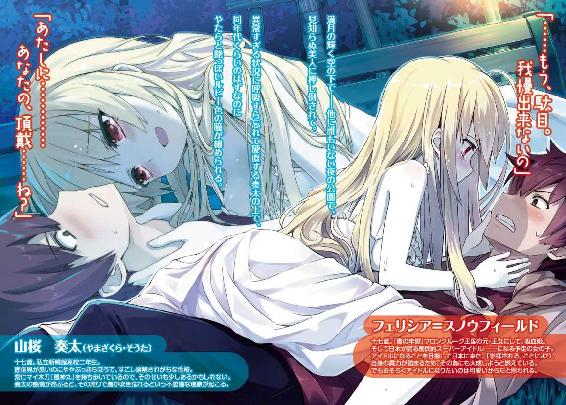

| アイドル●ヴァンパイア (電撃文庫) | |
| 上月 司 | |
| (2015) | |

本書（電子版）に掲載されているコンテンツ（ソフトウェア／プログラム／データ／情報を含む）の著作権およびその他の権利は、すべて株式会社ＫＡＤＯＫＡＷＡおよび正当な権利を有する第三者に帰属しています。
法律の定めがある場合または権利者の明示的な承諾がある場合を除き、これらのコンテンツを複製・転載、改変・編集、翻案・翻訳、放送・出版、公衆送信（送信可能化を含む）・再配信、販売・頒布、貸与等に使用することはできません。
プロローグ
今夜が満月で、しかもあんなに大きく金色に輝いていることを、奏太は初めて知った。
普段から月の満ち欠けを気にしたり、一人で夜道を歩く時に空を仰いで星を眺めたりするような風流な感じの生き方はしていないので、今日だってこんな風にならなかったら気付かないまま過ごしていたに違いない。
......こんな風に、地面に仰向けに寝転ぶ羽目になっていなければ。
ザリッとした硬い地面と砂の感触を後頭部に感じるけど、そんなことより気に掛かる光景が目の前には広がっている。
深い闇に煌々と輝き浮かぶ月。
公園を申し訳程度に緑に彩っている木々の、電灯に照らされて揺れる影。
そして──自分に覆い被さっている人物の、爛々と妖しく光る紅い瞳。
「..................ぅぁ......」
微かに潤んだ瞳に至近距離から見つめられて、奏太は完全に金縛り状態になっていた。
これが友達とかなら『どけよ』と言いながら自力で脱出するところだけど、相手は今日が初対面の同年代女性で、しかも恐ろしいまでの美人ときている。
更にもう一個追加すると、透けるような白い肌と黄金色に輝く長い髪、そして印象的な紅い瞳と、どこからどう見ても外人さんだ。緊張の度合いも跳ね上がる。
昼前に目撃した時は気付かなかったけど......こうしてほぼ密着状態になっていると、スタイルも際立って良いのが分かってヤバい。
奏太の頰に添えられている手や剝き出しの二の腕は滅茶苦茶細いのに、さっきから当たってしまっている胸の圧倒的存在感ときたら。海外セレブがパーティーで着るヤツみたいな大きく胸元の開いた白いドレスを纏っているせいで、余計に無視出来なくなっている。
満月の輝く空の下で──他に誰もいない夜の公園で、見知らぬ美人に押し倒されて。
異常すぎる状況に呼吸すら忘れて硬直する奏太の上で、同年代くらいのはずなのにやたらと艶っぽいルビー色の瞳が細められる。
彼女の柔らかそうな唇から、ハァ......、と熱い吐息が漏れて、
「......もう、駄目。我慢出来ないの」
そんな言葉と共に、頰に当てられていた両手が撫でるように顎から首筋へと降りていく。
「っっ......!?」
普段自分で汗を拭ったり痒くて搔いたりする時とは全く違う感触に、奏太は思わず声をあげてしまいそうになり、なんとか喉の奥で食い止める。ただしぞわぞわっと鳥肌が立つのを止めるのは無理で、心臓が激しく高鳴るのを止めるのもこれまた無理。
どうにか抜け出さないと、と頭では強く思っているのに、ちっとも身動きが取れない。
まるで──美しすぎる彼女に、魅入られてしまったかのように。
動けずにいる奏太の首をゆっくりと細い指が撫でさすり、鼻先同士がくっつきそうなくらいに近付いた彼女の唇から熱い吐息が漏れた。それが奏太の唇を擽り、ぞくっとすると同時に顔が熱くなる。
間近に迫った彼女の紅い瞳が潤んで光り、
「あたしに............あなたの、頂戴......ね？」
そんな妖しい言葉と共に、彼女の体が折り重なるようにして密着し──
満月が浮かぶ夜空の下で、奏太は生まれて初めての体験をすることになった。
一
──山桜奏太の朝は、大体乱れている。
別に寝相が悪い訳じゃないし、夜更かしが多くて決まった時間に起きられないから、って訳でもない。
規則正しい生活をしていると胸を張るのはちょっと厳しいかも知れないが、家の都合もあるので同年代の学生に比べると、そこそこ早い時間帯にちゃんと起きるよう心がけて、なるべく実行している。
じゃあ何がどうして乱れているかというと......原因は自身にはなくて、その周辺。
もう少し詳しくいえば、起こそうとする人物にある。
「......兄様？ まだ寝てますね？」
ノックもせず、音を立てないようそっと開かれたドアから、小さな頭がひょこっと部屋の中へと入り込んだ。
一目見れば忘れられなくなる綺麗な顔で、小顔なのに目はパッチリと、愛らしさだけでなくちょっとした気品まで感じさせる容姿だった。ふわっとしてウェーブのかかった栗色の髪を肩まで伸ばしていて、西洋のお姫様といったイメージがピッタリくる。
......にも、拘わらず。そろそろと部屋の中へ足を踏み入れたその姿は、巫女さんのような白衣と緋袴という格好だった。これはこれで似合っているが、顔立ちが洋風なだけに、ちょっと違和感がある。
フローリングの室内を無音のまま進んで行った彼女は、部屋の奥に置かれたベッドまで近付いて、そこで寝ている兄の様子を確認する。
薄い掛け布団からだらしなく手足を投げだしている奏太が寝息を立てているのをチェックすると、『よしっ』と言う代わりに大きく頷いて、そのまま躊躇無く自然な動作でベッドへと潜り込み......
「──おし、そこまでだ」
ごく当たり前のように布団の中へ入ろうとしたところで、奏太の手がガシッと妹の頭を押さえて止めた。
さっきまで閉じていた目を開いた奏太は、片足をベッドに乗せた不安定な状態の妹をうんざりしながら睨む。
対する妹はというと、
「おはようございます、兄様。今日は空気の澄んだ、良い天気です」
その抜群に綺麗な顔に優雅な微笑みを浮かべて、何事もなく朝の挨拶をした。......頭を押さえられたまま。寝ていたはずの兄がいきなり起きたことに全く狼狽えずに。
しかもベッドから降りることなく、そうしているのが自然だと言わんばかりで、奏太は面倒臭そうにため息を吐く。
「凜々華、お前な。毎度毎度、さらっと人のベッドに潜り込んでこようとしてんなよ」
「兄想いの可愛い妹として、わざわざ兄様を起こしに来ただけですよ？」
「起こしに来たってのにどうして声も掛けず揺することもなく、真っ先に添い寝しようとするんだよ。明らかに間違ってるだろうが」
刺々しい口調でそう言うが、これで萎縮するような柔な性格なら奏太も苦労はしない。
ろくに話をしたことのないクラスメイトには『あの人ちょっと怖いよねー』とか『すぐにキレて暴れだしそう』とか、割と酷い印象を持たれている奏太がきつく睨んでも凜々華はしれっとして、
「優しく起こすコツがあるんです。母様直伝の凄いのが」
「......あの母親直伝って時点で嫌な予感しかないけど、とりあえず言ってみろ」
「まず、耳に息を吹きかけながら肩胛骨のラインを撫で──」
「もうその時点でアウトだ！ つーか言いながらやろうとしてんじゃねぇっ」
頭を押さえられたままぐいぐい近付いて来ようとする凜々華を乱暴に押しやり、奏太は跳ね起きてドアの方へと避難した。
ベッドには内股でペタンと座り込む凜々華が残り、物足りなさそうに唇を尖らせる。
「兄妹の軽いスキンシップです、いいじゃないですか。大体、どうして兄様は起こす前に起きてしまうんです。折角の嬉し恥ずかしイベントが台無しですよ」
「嬉しくも恥ずかしくもない上に責められる理由が意味不明だろうが。起こす手間が要らないんだから喜べよ」
「手間が掛かる方が愛情は豊かに育まれるんです！ 全く、何も分かって無いだなんて困った兄様です......！」
「困るのは俺の方だ！ 朝っぱらから布団に潜り込んできたりセクハラしようとしたりする妹がいる俺の方だっての！」
「セクハラじゃないです、スキンシップです！ 仲の良い兄妹ならごく当たり前のことじゃないですか。兄様は気にしすぎです」
「ちょっと布団に入ってくるだけで済むならそんなにうるさく言うつもりはないが、お前油断してると風呂にまで突入してくるだろうが！ 前科持ちに甘い判定してられるかよ。自分の行動を振り返ってみろ」
「どこをどう振り返っても、兄想いの優しくて可愛い妹じゃないですか。節度も守ってます」
「......あ？ どこがだ？」
「お風呂に入るマナーとして、ちゃんと服は脱いでいました。小さめのタオルで申し訳程度に前を隠し、水着着用なんて邪道な真似もしていません。ほら、完璧です」
何がどう完璧なのか奏太にはこれっぽっちも理解出来ない。ただ、妹がしたり顔で無い胸を張っているのにはむかっとくるので、さっきよりも強めに睨んでやる。
すると凜々華は凜々華でそんな兄の態度が不満なようで、また唇を尖らせて、上目遣いで物言いたげな視線を奏太に注ぐ。
「......んだよ。言いたいことがあるならハッキリ言え」
「早く一線を越えて爛れた関係になりたいです！」
「よし分かった。もう何も喋るな」
朝から頭が痛くなる発言の多い妹からそっと視線を逸らし、奏太は大きな欠伸をする。
コキ、と首を回しながら上手いこと凜々華を避けてベッドから降りて、壁に掛かっている時計を確認し、微かに眉を顰めた。
「つーか、今日って日曜だろ？ まだ十時だってのに、なんでわざわざ起こすんだよ」
「兄様、『まだ』ではなく『もう』です」
「どっちでもいいっての。昨日は遅くまで起きてたからまだ眠いんだよ」
「兄様、朝の四時まで起きていたんですから、昨日というのは正しくないです。それにもう十時ですから、六時間も寝られたじゃないですか」
「俺的には昼まで......って、待て。何でお前、俺が寝た時間を知ってるんだ？」
ごく当然みたいに言っていたからつい流しそうになったが、別に凜々華と一緒に過ごしていた訳じゃない。隣の部屋とはいえ、大音量で音楽を流していたとかトイレに行く時にバッタリ会ったとかそういうことは無かったので、まず知らないはずなのに。
奏太の疑問を受けて、凜々華は新人保母さんのような優しさ溢れる微笑みを浮かべ、
「知っているのは当然です。兄様の部屋の明かりが消えるまで見張ってましたから」
「..................うっわ............妹がアレ過ぎて、今更だけどドン引くわー......」
「兄様、ここは素直に喜ぶところですよ？」
「いや素直に引くっつーの......妹がストーカーみたいな真似を、しかも兄の俺にやってるって事実に引かざるを得ないわ......」
「おかしな兄様です。こんなに可愛い女の子におはようからおやすみまで見つめられているだなんて、幸福以外の何でも無いじゃないですか」
「それ加害者か、もしくはまるで害のない第三者だから言えるセリフだからな!?」
「むー。こんなに可愛い妹なのに、そんな言い方はないと思います。兄様の立場に代わりたい殿方は十万や二十万人を下らないんですから、もっとその身に与えられている奇跡を有り難く感じて凜々華を愛でるべきです！」
「頰を膨らませて可愛さアピールしておいてその傲慢な発言はどういうことなんだよ?! あー、朝っぱらから頭痛ぇ......！」
本当に頭痛の気配がうずうずし始めて、奏太はガシガシと乱暴に頭を搔く。始末が悪いのは、この妹が本当に見た目は可愛くて、大袈裟でなく兄の自分に成り代わりたい男どもは数十万単位でいそうなところだ。
頭の回転も速く口も達者で、年々手に負えなくなる。もう少し体の方に成長振り分けが出来ればバランスも良くなるのに、世の中上手くいかないものだ。
......と、そこに。
『ピンポーン』、というありふれたチャイムの音が、どこからか聞こえて来た。
「──ちなみに、ですけど」
「あ？ どうした、急にテンション落として」
チャイムの主に心当たりでもあるのか、何故か凜々華は不機嫌そうなむっとした表情になり、上目遣いで奏太を見て、
「兄様を起こそうとしたのは、コレのせいです」
「これ？ これって、誰が来たっつーんだ？」
「昨日の内に兄様が伝えてきたのに、完全に忘れ去っているみたいですね。凜々華としてはそのまま忘れたままでいいとは思いますけど」
「俺が............って、あれか！」
叫ぶと同時に奏太は慌てて部屋を飛び出し、一気に階段を駆け下りた。
そして急いで玄関に──向かう前に、思い直して洗面所に入り、蛇口の下に突っ込むようにして顔を洗って鏡を見る。
赤茶色したボサボサの髪は寝癖じゃなくていつも通り、目つきの悪さもいつも通り。少し水が跳ねたせいで着ていた黒の七分袖ティーシャツに濡れている部分があるが、まあ黒いので目立たないから良しとする。下に穿いている緑のジャージは膝の辺りが少し薄くなっているけど、穿き替えている時間は無いし、今すぐ破けることもないだろうから、これで我慢。
「っし、大丈夫だな......っと」
一通り確認し終えたところでまた『ピンポーン』とチャイムが聞こえて来て、奏太はタオルで顔を拭くのもそこそこに、玄関へと駆けた。
慌ただしくサンダルに足を突っかけ、焦りながら玄関のドアを開けると......やっぱりというか、そこには奏太のクラスメイトでもある白和泉響が立っていた。
女の子にしては長身の百六十センチ台後半らしい彼女は、ピンク色のラインが入った白いトレーニングウェア上下を着ていて、足下は黄色いスニーカー。
そんな活動的な格好なのに、穏和で優しそうな顔立ちのせいか、芝生の公園で大型犬と戯れているのがよく似合いそうな印象になっていた。長い黒髪を三つ編みにして垂らしているのも、見慣れている制服姿だと図書室辺りにいそうな感じがするし。
奏太に気付いて顔を上げた響は控えめな笑みを浮かべて、
「あっ......山桜くん、おはよう」
「悪ぃ、白和泉。ちょっと待たせたか？」
「ううん、そんなことないよ。日曜日なのに無理言って押しかけて、ごめんなさい」
そう言って丁寧に頭を下げる響の姿に、奏太は余計に慌ててしまう。
「や、だからいいって。俺は別に──」
「全くです。兄様の貴重な休日が台無しです」
「っておい、凜々華!? 出て来ていきなりとんでもない暴言ぶち込んでくんなよ?!」
二階から下りてきた凜々華がえらいことを言い出したので、奏太は慌てて叱る。
さっきまで表情豊かだったはずの妹は冷め切った雰囲気になっていて、どこをどう見ても冗談を言ったようには見えない。
登場と共に空気を張り詰めさせてくれた凜々華は、背丈では頭一つ分近く高い響を見下すように見上げるという、妙に器用な真似をしていた。
兄の奏太としては叱るべきなんだろうが、そうする前に響がまた頭を下げて、
「おはよう、凜々華ちゃん。日曜にお邪魔してごめんね」
「馴れ馴れしく呼ばないで欲しいです。私の名前は兄様に愛おしげに呼ばれる為にあるんですから」
「いやそんな為にはねぇし、そんな呼び方したこともねぇよ。つーかお前、皆に名前や愛称で呼ばれてる癖に、今更過ぎるだろ」
奏太の突っ込みに対し、凜々華は軽くそっぽを向いて、無視のアピール。兄としては今すぐあの膨らませているほっぺたをぐにぐにと摑んで引っ張りお仕置きしたいところだが、人前なのでぐっと堪える。
「じゃあ、ええと......妹さん？」
「っ......私のことを『義妹』だなんて、やはりあなたは危険人物ですね............将来的に兄様を寝取る宣言と見なしました......！」
「白和泉、悪いがうちの妹はちょっと頭の配線がどうかしているから無視してくれ。さっさと行こう、さっさと」
言って、奏太は響の肩を押して玄関先から外へと出る。閉じたドア越しになにやら妹の声が騒がしく聞こえて来るけど、気のせいということにしておく。
ただし響には気になるようで、ちらちらと後ろを振り返り、
「い、いいの？ 凜々華ちゃん、凄い勘違いをしていたみたいだけど......」
「いいんだ。あれ、割といつものことだから」
「......そ、そうなんだ？」
「ああ。俺が女の子と接触すると、大体あんな感じになる。老若問わず、既婚未婚も問わず。可愛かったり美人だったりすると尚更酷いな」
何が酷いって、テレビを見て芸能人を『可愛いな、綺麗だな』って言うだけでも露骨にむくれる辺りが酷い。通りすがりに見かけた美人やバスや電車で乗り合わせたスタイルのいい子に目移りしただけでも文句を言ってくるくらいだ。
妹が嫉妬深いというどうしたもんだかと嘆きたくなる現状に奏太がため息を吐いていると、何故だか隣にいた響が微妙にそわそわしているのが見えた。
「どうかしたか、白和泉？」
「う、ううん、なんでもないよ。ちょっとドキッとしただけだから」
微かに頰を赤らめながら手を振る様は可愛らしくて、奏太もちょっとドキッとしてしまう。でもそれ以上に、響が動揺した原因がたぶん妹様のアレな部分を知ってしまったからだと推測して、余計なこと言わなきゃ良かったという後悔の方が強かった。
まだ五月も半ばだっていうのにクラスの男子から『可愛くてスタイル良くて、しかもこんな俺等にも挨拶してくれる優しい子！』と密かに大人気の響にドン引かれてしまうと、流石に奏太も心が痛い。惚れているとか彼女にしたいとか現状ではないけれど、将来的に可能性ゼロになってしまうと泣ける。
とはいえ、良いフォローの言葉もなく。
「............」
「............」
互いに無言のまま歩き、あっさりと目的の場所に着いてしまってタイムオーバーになってしまった。まあでも、近くだから仕方ない。決して頭の回転が遅いとか語彙が足りなさすぎるとか、そういう訳ではなくて。断じて違うということで。
だって、目的地は同じ敷地内なんだから、間に合わないのが当たり前だと奏太は思う。
奏太達が暮らす山桜家は、地方都市でそこそこ程度に栄えている街にある。最寄りの駅から徒歩十五分、バスなら三分ちょっとくらいの場所にある住宅街で、周囲の家々と同じく二階建ての一軒家だ。
ただし他の家と大きく違う点が二つ。
一つは、土地面積が広いこと。普通の庭付き一戸建てなら三、四件分くらいの広さがある......けど、それは別に金持ちだからっていうんじゃなく、昔から持っている土地に住んでいるだけだ。地価も安いらしいし。
そしてもう一つ違う点は、土地を広く取っていることにも関係しているが──家以外にもう一つ、大きな建物がある。
それが今奏太と響の目の前にある、歴史を感じさせる古びた道場だ。
学校のプールくらいの面積がある長方形型の木造建築で、焦げ茶色の瓦屋根と住宅街にあるまじき風格があり、近所の子供に『お化けが出そう』と地味に怖がられている。
聞きかじった話だと二百年以上昔に建てられたらしく、当然改修は何度もされているが、かなり腕の良い大工が良質な建材を使ったようで、今でも普通に現役で使っている。
一応剣術道場......のはずだけど、奏太が知る限りだと、看板を掲げて門弟を取っていたことはないみたいだった。身内だけで細々と受け継いでいて、祖母が生きていた頃は奏太だけでなく凜々華も習っていた。これで漫画やゲームにありがちな一子相伝の秘剣でも教えてくれていたなら面白かったけど、竹刀ではなく木刀での稽古だったこと以外は割と普通で、真剣を使わせてくれることも無かったので、正直地味な印象しかない。
どうしてそんな場所に響を連れて来たのかというと、剣道の立ち合いや修練に......って訳ではなくて、全然別の理由だ。
それは何かというと──
「あ......もう始まってるね」
「みたいだな。日曜だってのに、張り切って......」
閉じられた入り口の向こうから聞こえて来る声に、奏太はややげんなりしながら呟く。
中からの声は明らかに一人や二人のものじゃなくて、さらには声に混じって軽快な音楽も聞こえて来る。
門弟がいないはずの道場から聞こえて来るのはどう考えてもおかしいが、奏太は特に驚かない。ただ、今更ながらに呆れてしまうだけだ。
こうして突っ立っていてもどうしようもないので、奏太が道場の分厚い戸に両手を掛け、「よっ」と声を出しながら左右にスライドさせると、
「──よっしゃ次っ！ ワンツー、ワンツー！」
『ワンツー、ワンツー！』
「その調子じゃぞっ！ ワンツースリーフォッ、ファイブシッ、セブンエイッ！」
『ワンツー、スリーフォー！ ファイブシックス、セブンエイト！』
「そうじゃ、もっと元気よく！」
『はぁい！』
「..................なんだかなぁ......」
リズミカルな掛け声と共に飛び込んできた光景に、奏太は今更ながらに額に手を当ててため息を吐く。
歴史ある道場、それも剣術の稽古のみに使われてきたはずの場所が、カラフルなシャツやパンツを身に纏った十数人の奥様方に占拠されていた。軽快な音楽が流れる中でやっているのはエアロビクスで、どこをどう考えても古びた道場とは似つかない。
ただ、去年のリフォームの際に道場の方にも手を加えた結果、入り口とは反対側の壁は一面鏡張りになっていて、床にも簡単に取り外しが出来るマットを敷き詰めてあるので、外観さえ気にしなければ立派なスタジオに見えなくもない。
幼い頃の奏太と凜々華に熱心に剣の稽古をしてくれた祖母がこの有様を見たら何て言うか、想像してみると般若みたいに怒るか白目を剝いて気絶するかの二択だと思う。
まあ、文句を言いそうな祖母はもう亡くなってるし、これをやらかした張本人の祖父も三回忌までは大人しくしていたんだから、今使っている自分達が我慢すればいいだけだと奏太はこの結果を受け入れた......ものの、こうして目の当たりにする度に、ちょっと精神的にくるものがあるのは事実だ。
ちなみに元気一杯に前に立ってエアロビのコーチ役をしているのが、祖父の源治だ。耳の周りと後頭部以外は見事に禿げ上がっていて、歳もそろそろ七十代に突入するって年齢なのに、アロハシャツに短パンという何かが間違った格好ではしゃいでいる。
奏太達が入って来たのに源治の方も気付いたようで、エアロビは止めないままにウインクなんか飛ばしてきて、ますますげんなりする。本当にあの爺さんを誰かどうにかして欲しい。特にエロ根性を爆発させて『わしだって若い女の子と戯れたいんじゃ！』の気持ち一つで、あの歳でエアロビクスやヨガ、その他各種のスタジオトレーニングの指導者スキルを習得し、溜め込んでいた貯金を豪快に使って道場を改装、おまけに隣の倉庫を潰して更衣室兼シャワールームまで作ってしまう性格を。
ただまあ、この辺に住んでいる奥様連中や暇な女子大生からは格安でエクササイズが出来ると好評らしいので、何がどう作用するか分からないものだとも思う。
「それじゃ、早速だけど使わせて貰うね」
「お？ おう、気兼ねなくやってくれ」
意識が遠くに散歩しかけていたところに話しかけられ、奏太は反射的に返事をしてから、道場の隅へと移動する。
エアロビしている人達は道場の右半面を使っていて、左半面は空いている。そっちは好きに使えるよう、予め空けておいてくれと祖父に言ってあるので、改めて許可を取りに行く必要もなかった。
──正直なところ。
奏太は今年になってから響と同じクラスになったものの、それまで話したことは無かったし、今もそこまで親しい仲とは言えないと思う。自分から積極的に女子に話しかけて仲良くなろうとするタイプでもないので、何事もなければ事務的なクラスメイトとしての会話以外、殆ど無いまま一年が過ぎていたんじゃないかとも思う。
なのにこうして響が日曜だっていうのにわざわざ家を訪ねて来たのは、この空きスペースを使う為だ。
......というより。そもそも響の方から奏太に話しかけてくる切っ掛けになったのが、この改装された道場のことだった。
響が所属している新体操部は規模が小さく、主な練習場所になっている格技場は他の部との兼ね合いもあって週に二日しか使えないのだとか。響自身は夏にあった大会の個人の部で地区入賞し、県大会でもかなりいい線までいったらしい。友人が教えてくれた情報で、そういえば二学期頭に表彰されていた気もするが、奏太はあまり良く覚えていない。
ともあれ、だ。期待はされているが練習場所と時間の拡大には繫がらなかったようで、他の部員の熱量もそう大したものじゃないらしく、やる気があるのは響のみ。
なので一人で練習出来る場所を探していたのを、新学年になって同じクラスになった奏太の友人が知り、『あいつに頼めば使わせてくれるかもよ』と教えられて話しかけてきたのが、確か三週間前。
それ以来、新体操部の活動のない平日の火、木、金曜日の放課後に奏太の家に来て、道場で新体操の練習をするようになっていた。日曜日に来たのは初めてなので、今日はうっかりしてしまったけど。
奏太とは反対サイドの壁際に移動した響は、そこでいそいそとウェアを上下を脱いで、ちゃんと畳んでから空いたスペースの中央辺りに移動し、軽くストレッチを始める。動き易いティーシャツにレギンスという格好は近くにいるエアロビ組と殆ど変わらないのに、クラスメイトで可愛い女の子が自分の家に来てやっていると思うと妙にドキドキするから不思議だ。
それに......こう言うとアレだけど、響のスタイルが良すぎるのも原因だと思う。特にあの胸は、何をどうすればあんなサイズになるのか。
育ちきった大人な女性達と比べても遜色ないどころか、この場にいる人達に圧勝するレベルで実っていて......しかもそれがストレッチのちょっとした動作でも揺れたり、膝に押し潰されてふにょって感じで形を変えたり、なんかもう凄い。ご馳走様ですって頭を下げて然るべきレベルの光景だ。
「......全く、相変わらず見せびらかしてくれます。絶対あれは嫌味です、もしくは露出癖があるに決まってます......！」
いきなり妬みの籠もりまくった暴言が横から飛んで来た。
奏太はそちらを見ないまま、響をガン見しないよう自分に注意を喚起してから、すぐ隣に座った人物に突っ込みを入れる。
「んな訳ないだろ。つーかお前も来たのか」
「当然です。兄様といちゃいちゃらぶらぶな姿をあの天敵に見せつけてやるんです」
「言いながら引っ付いてくるなっ。ったく、暑苦しいっての」
「兄様、つれないです！ 兄妹の軽いスキンシップじゃないですか！」
「それさっきも聞いた気がするが、明らかに違うからな？ 少なくとも太腿撫で回すスキンシップが普通とかまずないからな？」
「兄様は前時代的です。これが今時で最前線な関係性ですよ？」
「お前はどこの時代に生きてるんだよ......っと、始めたか」
こっちが無駄話をしている間にストレッチは終わったようで、立ち上がった響は集中力を高めるように深呼吸をしていた。
ややあってからキュッと唇を結ぶと、万歳をするみたいに両腕を上げて......ゆっくりと、お辞儀から前屈に移るような感じで、上半身を前に倒す。
奏太達が見ている中、両手が床に着いて、
「おー......」
「むっ......」
──そこで動きは止まらず、今度は逆立ちをするようにして、ゆっくり両足が順に上がっていった。
ピンと伸びた爪先が天を突くような綺麗な逆立ちが完成し、一秒か二秒か完全に静止した後で、今度はそこからくるんと伸身の前転を決めた。
その後も動きを止めずに次々と、柔軟さと美しさを兼ね揃えた演技を決めて行く。
額に薄らと汗を浮かべながら、自分の動きを確認するように何度も同じ動作を繰り返す響の姿を、奏太はしばしの間見入ってしまった。
よくもまああんなに体が柔らかくなるもんだなぁ、というのともう一つ、純粋に演技をしている響が綺麗だからだ。
胡座を搔き頰杖をついて眺めていると、隣の凜々華も認めざるを得ないようで、
「......よくもまあ、あそこまで柔軟な筋肉をつけられるものです。身長が高い分、体を支える力はかなり必要になるでしょうに......ですが」
「ですが、何だよ？」
「あの人、新体操の選手ですよね？ どうして何も持たずに練習しているんです？」
凜々華の疑問は尤もで、奏太もそこまで詳しくないが、新体操はリボンやらロープやらの道具を使った演技をするもの......らしい。だから何も持っていない今の様子を見ると、新体操じゃなくて体操の床運動の練習をしているようにも見える。
ただし白和泉響は体操ではなく、新体操部に所属している、新体操の選手。別に競技を変えたって訳ではないようで、
「こないだちらっと聞いたんだが、新しい動きをいくつか取り入れたら、道具を扱うどころじゃなくなったんだと。だからまずはフリーハンドで一通り出来るよう体で覚えて、道具を使うのはそれからにするみたいだぞ。エアロビしている人達の邪魔になる可能性もあるからって危惧してたし」
「そういうものですか。一辺にやってしまった方が手間が省けていいと思いますけど」
「出来るなら、な。凡人組の俺としては白和泉のやり方を推すわ」
これが嫌味で言っているなら兄としてデコピンの一発くらい入れてやるところだが、残念ながら凜々華は素でこういうヤツなので、遠回しな注意に留めておく。
「......それにしても忌々しいです......動く度に揺れて、跳ねて......！ きっと上手く演技出来ないのは、無駄な脂肪がたっぷりついているからに違いないです......！」
「............」
今度は注意すら出来ず、奏太は完全なノーコメントを貫いた。響は薄着だからどこに脂肪がついているかは一目瞭然で、しかもそれがゆっさり揺れるシーンを何度も目撃しては見入ってしまっている現状を省みると、下手に何か言えば藪蛇になるのは確実だし。
ちなみに怨嗟の声を漏らしている凜々華のスタイルはというと......瘦せていて手足も長い、スレンダー体型だ。寄せて集める脂肪がないくらいに。
「むっ。兄様から邪な視線を感じます。さては凜々華に欲情しましたか」
「お前の発想は脈絡以上になさ過ぎる。俺はシスコンでもロリコンでも無いぞ」
「そんな......！ そろそろ兄様の部屋のいやらしい本の数々を、妹系の未成熟な方々のものに替えた効果が出ても良い頃合いのはずですのに......」
「全部見ないで捨てたわ！ つーか祖父さんの悪戯かとも思ったけど、やっぱあれお前の仕業だったのな！」
「あんな役に立たない脂肪の塊が強調された本ばかり持っている兄様が悪いんです！ もしくは私に豊かなメリハリボディを授けてくれない神様が悪いんです！」
「いや神様もそんな責任追及されても困るだろ......」
予想外すぎる対象に八つ当たりした凜々華は、そのままキッと奏太を咎めるような視線で見やり、
「大体、兄様だってあの自己主張の激しい体に惑わされているんですから、何を言っても説得力がないです。兄様が地中や川底に隠れ住むミミズ程度にしか興味を示さなければ、凜々華もここまで言わないです」
「ばっ......だ、誰が惑わされてるってんだよ。証拠はどこだ、証拠はっ?!」
思わぬ切り口に奏太は反論するけど、言ったセリフが自分でも自白同然だと思えるもので、どうしようもなかった。どれだけ動揺したのかが丸分かりだ。
凜々華の視線は更に冷え込んで、シベリアの凍土くらいの寒さを湛えて兄を見上げる。
「大した関わりのない人に頼まれて道場を貸すだなんて、下心が無いと考えられないです。兄様のことです、適当に飽きるまで弄んだら塵屑のようにあっさりと捨ててしまうと十分に理解していますが、だからといって看過するのも妹として間違ってます......！」
「短い会話の中でいくつ冤罪盛り込む気だよ?! どれもこれも事実に反しまくりだ！」
声を荒げて主張するが、凜々華からはじとっとした半信半疑以下の視線が来る。
確かに、顔もスタイルも良くて一年の時から『新体操界期待の超新星』とか『性格良くて可愛いのに誰とも付き合ったこと無いらしい』とか『学年で一番、全校でも五本の指に入る胸の大きさ』とか、男どもの間では数多くの噂が流れ人気だった相手だ。仲良くなって、もしかして付き合うことになったりしたらなー......なんて思ってしまうのも仕方ないはず。
ただし漠然とそんな希望はあるものの、どちらかといえば向こうの熱意に押されて善意で場所を提供したって意味合いの方が強い。こうして目の保養をさせて貰えているのは、役得ということで。
......というか、クズいホストか遊びまくりの大学生みたいなレッテルを貼られるような真似なんか当然したことないのに、どうして妹にそんな中傷されなきゃならないのか。
「念の為にもう一度言っておくが、違うからな？ 下心っつーより、仏心を出したって方が合ってるはずだ。頑張ろうとしてるってのに、肝心の場所がないなんて可哀相だろ」
「むー......だったら初めからどこか強豪の新体操部がある高校に行けば良かったんです」
「ソフトボールとかバレーボールとかならともかく、新体操は厳しいだろ。言っちゃ悪いがマイナー競技だし、高校から始めたばっかの白和泉が地区入賞出来るんだぞ？ 近隣の高校ならどこに行っても大差ないか、もしくは部自体が存在しないかってとこだろ」
何の実績もなく越境入学......っていうのは現実味がないし、そもそも高校なんて通える範囲で選ぶのが基本だ。家からの距離と学力、両方の意味で。
だから響が新体操部があるというだけで奏太達の通う新鳴館高校に入学を決めたとか、自宅からこの道場まで自転車で一時間かかるけど使わせて欲しいとか言われたら、そりゃあ協力してやってもいいかなと思うのが普通だ。
他意は無い、と殊更アピールするのもおかしいが、奏太は疑り深い凜々華の説得を続ける。これでこじれると昼食や夕食にも影響しかねない。台所を掌握されているっていうのは、こういう時に厄介だ。
「うちの道場だって、使われないよりは誰かが有効利用した方が良いだろ。つーか、祖父さんがあんなんやり始めた以上、もう好きに使ってくれって感じだし」
「むー......分かりました、凜々華も聞き分けのない子じゃないです。そこまで兄様が言うのであれば、一つ言質を取れればそれで納得しましょう」
「随分と上から言われてる意味がよく分からないが、まあいい。何だよ？」
「──あんな風に揺れに揺れてシャツを破かんばかりに無駄に膨らんだ胸なんかより、慎ましく控えめな性格をそのまま表したような微乳の方がいいですよねっ？ 例えば、そう......私みたいな！」
「最後の一言のせいで物凄く答えづらいわ！ それにな、小さくたってそんなに気にしないが、あるにこしたことないだろ」
「どうしてですかっ。じゃあもう単刀直入に訊きますけど、兄様は私と白和泉さん、どっちの胸を揉みたいんです?!」
「単刀直入に返すけど、お前どうかしてるからな!?」
正気を疑いたくなる発言に、奏太は至近距離で凜々華を真っ正面から睨み付ける。が、そこらの緩い不良くらいなら簡単に目を逸らして逃げ腰になる眼力も、妹には大した効果はないようで、ぷくっと頰を膨らませるだけだ。
「質問に答えてくれてないです！ ほら兄様、素直になっていいんですよ？ 重力に負けて将来無惨に垂れるのが確実な駄乳より、美しさと抜群の感度を併せ持つ凜々華の胸の方がいいですよね？」
「もう質問じゃなくてただの誘導になってるし！ つーか、何度も言ってるが大きさ云々じゃなくて、相手が妹だって時点でねぇよ！ その時点で比べるまでもなく無いに決まってるだろうがっ」
「揉めない他人の胸より、揉める妹の胸がいいに決まってるじゃないですか」
「言いながら胸を突き出して来るなっ！ 大体だな──ぁ？」
巫女装束の持つ神性と貞淑さを台無しにしている妹にガチ説教をすべく、奏太が腰を浮かして身を乗り出した、その矢先。
不意に視界に影が落ちて、誰かがすぐ近くに立っていることに気付く。
何だと思って振り向いた先にいたのは、顔だけじゃなく耳まで真っ赤にした響だった。
そして、一言。
「あの............お二人の会話、全部聞こえちゃってる、けど......」
「........................」
気まずげに言われて、ようやく奏太は道場内の空気が変わっていることに気付く。
響だけでなく、エアロビクスをしていたはずの近所の奥様や女子大生連中、ついでに奏太達の祖父も含め、この場にいる全員が動きを止めて自分達を見ていた。
そして......数秒の重い沈黙の後。
エアロビそっちのけで、女性陣がこっちを見たままひそひそと何やら話し始め。
おまけに年甲斐もなくはしゃいでいる祖父はどういう訳だか『ワシは全て分かっとるから！』と言わんばかりの笑顔で、ぐっと親指を立てて。
最後に響はというと、大きな胸を隠すように腕をクロスしていて、しかも『お、男の子だもんね？ 年頃だとそういうの我慢出来なくなるって......き、聞いたことあるから、わたしは大丈夫だよ......？』と、フォローの気持ちはあるけどやっぱり若干引いている顔をしていた。
「............いや、違うぞ？ 俺は妹に変なことをした覚えなんてこれっぽっちもないし、白和泉をそういう目で見ているとかも......な、無いからな......？」
多方面に思いっきり誤解というか変な印象を擦り込まれたと悟った奏太は、強張りまくった笑みを浮かべてそう言う......が。
「そうです、兄様はあなたのような大きさばかりが目立つ女性に興味なんてありません。もっと身近にいる可愛らしい妹にラブなんです！」
「だから誤解を加速させる捏造発言してんじゃねぇよ!? って、白和泉？ どうしてじりじりと離れて距離を取ろうとしてるんだ......?!」
「えっ!? べ、別にその、他意はない、よ......？」
「物凄くありそうな感じじゃねぇか！ あからさまに目を逸らしてるし！ ガッチリ胸をガードしてやがるしさ！」
「き、気のせいじゃないかな......？」
一向に目を合わせてくれないのに、どの口でそんなことを言うのか。親密度がそこまで高くないから強く突っ込めないのが歯痒くて仕方ない。
苛立ちと焦りに突き動かされ、奏太は矛先を隣に座っていた凜々華に移して、摑んだ肩を揺さぶり、
「ほら凜々華っ、お前からも言ってやってくれ！ ただの緩い冗談だって、白和泉に分かるように！」
「兄様が揉んだりブラを外したりしたいと思う相手は妹の凜々華だけですからっ！」
「ねぇよ！ 何を力一杯身も蓋もないデマを振りまいてんだよ?! ああほらっ、白和泉がまた離れていった！ 誤解が解けるどころか深まってるじゃねぇか！」
「こういう一つ一つの積み重ねが大事なんですよ、兄様。それがいつか世論を変える結果に繫がるんです。あと法律も」
「事実でもないのに地固め進めてどうすんだよ?! 違うから白和泉もそんなに引くなって！ それからそっちのエアロビ連中も聞こえるか聞こえないかって声で変な推測すんな！ あとそこっ、携帯で噂拡散とかマジで止めろよな!?」
最早道場内で運動している人は誰もいなくて、物凄い勢いで捏造の兄妹関係と性的嗜好が広められているという最悪な状況に、奏太は『あ、もうこれ無理だわ』と諦めた。
そしてすぐさま立ち上がり──
「むっ、兄様どちらへ!? まだ『そんなに言うなら本当にやってやる！』と凜々華に襲いかかるシーンをやってないです！」
「うるせぇやるかよっ！ 俺は出掛けてくるから、後は適当に任せる！ 白和泉は好きなだけ使ってていいから、怪我だけは注意しろよな！」
「あっ、山桜く......」
妹とクラスメイトの二人から呼び止められながらもそれをガン無視し、奏太は迅速に道場から抜け出し。
雑にサンダルを突っかけて履くと、カオスと化した道場を顧みることなく、そのままダッシュで自宅へと走っていった。
......逃げた、の方が正しいという意見も、なくはないと思う。
◆ ◇
道場から部屋へと戻った奏太は、すぐに服を着替えて家を出た。凜々華が追って来る前にと急いだ結果、かろうじて家の鍵と財布は持っているものの、携帯等のいつも持ち歩いている物も置き忘れてしまっている。
服も赤いティーシャツの上に薄手のパーカーを羽織り、下は黒のジーンズ。足下はスニーカーだが、靴下を履く余裕がなかったので、素足だからちょっと変な違和感がある。
「あー......まだメシも食ってねぇのに、何やってんだか......」
日曜の午前中から目的もなく歩きながら一人ぼやくと、余計に『何やってんだか感』が強くなる。
けど......残念なことに。
非常に残念なことに、こんな風にドタバタと騒がしいのは、今日だけが特別って訳じゃなかった。
日曜の朝から、というのは少しだけ珍しいが、奏太を取り巻く環境は平日休日の境無く、大体が喧し過ぎるくらいに賑やかだ。
平日は学校があって、そこでもクラスメイトを中心にわいわいと騒がしい。そしてよく巻き込まれる。もう高校生活も二年目なんだから落ち着けお前等と言いたくなるが、ゴールデンウィークを過ぎても全然落ち着く気配が無かった。
それは放課後になっても続くし、家に帰れば当然、妹がいる。両親は主に仕事で海外にいて、祖父は近所で経営しているアパートと駐車場の管理人の仕事もしているので、家ではなくアパートの方に住んでいる......のに、妹がいるだけで大家族並みに賑やかで、しかも一人でいる時間が限られてしまうという不思議な事態になっていた。
さらに本当ならもう一人、妹と同じくらい喧しい人物がいるものの、不幸中の幸いでここ最近は留守にしている。
なので、どちらかというとこれでもまだ静かな方と言えなくもなかった。......それでもストレスでため息が漏れる程度には、精神的に疲れてしまっているけど。
「さて、と......飛び出して来たはいいが、どうすっかな」
昼食には時間的に早いし、そこまで空腹って訳でもない。ならほとぼりが冷めるまでどこかで遊ぼうかって流れになるが、誰か誘おうにも携帯は家だ。
一人で過ごすとなると、ゲームセンターか、映画でも観るか。ただし映画館なんてハイレベルな建物、この町には無いので隣町まで電車移動しないと駄目だ。となると、電車代も掛かってしまうし、そもそも年齢証明する為の学生証も無くて一般料金になりかねないから、金銭面で却下。
「つーと、ゲーセンか......まあ、適当にぶらついてたら誰かいるかもしれないしな」
奏太達が住む神形町は、そこそこ発展した地方都市から電車で二駅の微妙な場所にある。栄えているって訳でもないけど、寂れている訳でもない。映画館や遊園地はないが、ゲームセンターやカラオケ店は大小いくつかあるし、ボウリング場も一つだけならある。
ただ、遊んだり買い物したりとなると、移動手段が主にバスか人力という学生は駅前に出る以外の選択肢は殆ど無い。なので、休日に商店街をぶらついたり町に一つだけのデパートに行ったりすれば、結構な確率で知り合いに遭遇する。
友達は多くない......というか、ぶっちゃけ少ない奏太だが、それでも久しぶりに中学時代のクラスメイトにでも会えば話ぐらいはすることになるだろうし、こっちがその気がなくても向こうから声を掛けてくるかもしれない。良くも悪くも目立っていたので。
何にせよ駅前まで出ようと、奏太は宛てがなかった行く先を決めて、そのまま住宅街を歩くことにした。バスも出てるけど徒歩でも二十分程度で着くし、暇潰しの意味合いが強いので、散歩がてらのんびり進んでいく。
この辺りは一軒家と二階建てのアパートが多くて、道はそこそこ広いが道路と歩道が分かれていない。まあ住宅街なのでそんなに車通りは多くないし、どちらかというと自転車とすれ違うことの方が多いくらいだった。
今も小学生らしき子供の乗った自転車が奏太を追い抜いて行き、何となく『平和だなー』と呟きたくなる。天気は晴れているし気温は穏やかだし、長閑な空気が流れている感じだ。
普段は家や学校で喧噪に包まれて、しかもついさっきまで無駄に騒がしい真っ直中にいただけに、ゆったりとしたこの雰囲気が心地良い。
散歩効果か少しずつストレスから解放されつつ、奏太は住宅街を抜けて、少し太い道路に面した道に出た。やっぱり走行している車の量は少ないけど、ここは一応ガードレールもあるので内側を歩く。
駅にはこの道路に沿って歩けば着くので、平日の通学通勤時間帯は結構人も多く見られるが、休日の昼にもなっていない頃合いだからか、奏太以外に人影は無かった。
ズボンのポケットに手を突っ込んで欠伸を嚙み殺しながらだらだらと歩き、交差点についたところで歩行者信号が点滅し始めたので、走る気にもなれずそのまま止まる。まるで車が通ってないから無視して行ってしまってもいいけど、急いだってどうせやることもないし。
ぼんやり横断歩道の前で立ち止まって、奏太は駅前に着いたら何をするかと考える。ゴールデンウィークにちょっと遊びすぎて金欠気味なので、出来るだけ金の掛からないプランを取らないとだ。
「携帯があればなぁ。運良く学のヤツでも捕まれば......っと」
よくつるんでいるクラスメイトの顔を奏太が思い浮かべていると、不意に隣に並んだ人がいたので、慌てて独り言は中断する。
聞かれていて変なヤツだと思われてないかと、少し気恥ずかしくなりつつ隣を見てみれば、鍔の大きな帽子を被った白いドレス姿の女性がいた。帽子の下から流れ落ちる長い髪は綺麗な金髪で、もしかしたら外国人かもしれない。
この辺を歩き回るには随分と珍しい格好なのでついつい見てしまっていた奏太だが、その視界を大型のトラックが横切っていった。
「あん？ まだ信号は......」
赤じゃないのか、と思いつつ視線を上げて信号を見れば、やっぱり赤のままだ。
結構な速度で堂々と信号無視をするもんだと、奏太は眉を顰めて走っていく危険なトラックを見て、
──トラックの行く先で、交差路を渡ろうとしている小さな子供が視界に入った。
「っ......!?」
それを見た奏太は、一気に血の気が引く感覚に襲われる。
横断歩道を幼稚園児くらいの子供が三輪車に乗っていた。上手く漕げないのか、道路のほぼ真ん中にいて、殆ど進んでいるようには見えない。
そして──トラックは、全く速度を落としていない。
「おいっ！ 危ねぇぞさっさとどけっ！」
叫ぶと同時に奏太は猛然とダッシュする。走ったってトラックを追い越して子供を救うなんて無理に決まってるが、せめて子供がこの状況に気付いて、トラックもブレーキを掛けてくれればと声を張り上げた。
「そこにいたら轢かれるぞ?! 早くどけって！」
必死に声を掛けるが、目に映るのは三輪車に跨ったまま迫る車を見て硬直している子供と、それに気付かず減速しないまま進むトラックだけだ。
「くっそ......！」
あと数秒足らずで起こってしまうだろう悲劇が脳裏に過ぎり、奏太は絶望的な焦りに包まれながら、それでも走る足は止めず、遥か先へと向けて手を伸ばし、
──その瞬間。突風が巻き起こるのと同時に、視界が真っ白に塗り潰された。
「なっ、何が......?!」
視界が乳白色にぼやけるといういきなりの異常事態に訳が分からなくなるが、顔に触れるひんやりとした空気に、奏太は直感的に口走る。
「これっ、霧か!? なん、どうして......?!」
自分が言った通りの事態だったとしても、急に霧が湧き出た理由が分からない。それもこんな町中で、一瞬にして数メートル先も見えなくなる濃霧に包まれるだなんて、普通なら絶対に有り得ないはずだ。
半ばパニック状態に陥ってしまった奏太だが、次の瞬間に前の方から『バギャゴォ！』という重い轟音が響き渡り......ついさっきまで、何が見えていたかを思い出した。
そして今の音に──金属板に激しく何かがぶつかったような音に、心当たりがあることに。
「............ぁ......」
呆然と足を止め、脱力感に襲われる奏太の元に、ゴムが焼ける嫌な臭いが届いた。
間に合わなかったという思いが強くて、激しく悔恨の念が渦巻く中、濃霧が冗談みたいに急速に晴れていく。
そして奏太は目の前に広がる光景を見て──
「........................は？」
ぽかんと開いた口から、そんな声が漏れてしまう。
奏太の目に飛び込んできたのは、十数メートル先にある交差路のすぐ手前で止まっている大型のトラック。
そのトラックの前で、パチパチと目を瞬かせている三輪車に跨った子供。
そして──トラックと子供の間を隔てるように、白いドレスを着た、長い金髪の女の子が立っていた。
さっきまでそこにいなかった彼女は物凄い美人で、パッと見でも外国人だと一目で分かる。もしくは妖精の国か天国から何かの間違いで紛れ込んで来たかだ。おかしなことだけど、海外よりむしろそっちから来たって言われた方が奏太は信じられそうだった。
ちょっと顔立ちに幼さが残っているけど、それくらいの美人だし......そして何より、納得出来る。
だって着ている服や、足下に転がっている鍔広の帽子や輝いている長い金髪を見る限り、この人はさっき隣に並んでいた女性だ。
奏太が走り出した時に隣にいたはずで、追い抜かされてもいないはずなのに、どうして先の交差点にいるのか。普通に考えて、有り得ない。
起きたまま夢でも見てるのかと信じられない気分で奏太が立ち尽くしていると、金髪の彼女がゆっくりと子供の方を振り向いた。
やや険しいくらいに真剣な表情をしていた彼女は、戸惑いながら自分を見上げている小さな子供を確認すると、ホッと緊張を解いたみたいに表情を緩めて、
「──あなた、幸運に恵まれていたわね。素晴らしいわ。誇ってもいいわよ」
驚くべきことに日本語で喋っていた。完全に外人さんな容姿なのに。
「尤も、あたしにとっては不運だったかな......いえ、やっぱり幸運ね。代償は大きかったけれど、拾い上げることが出来たものに比べれば嘆くようなことじゃない、か」
滑らかに日本語を喋る彼女はそっと子供の頭を撫でて、それから落ちていた帽子を拾い上げ、軽く何度か表面を叩いてから被る。
そして何事もなかったみたいに歩き出し、交差路を曲がって消えてしまった。
その一連の光景を見ていることしか出来なかった奏太は狐につままれたような気分で呆然としていたが、しばらくしてようやく我に返り、慌てて子供の方へと駆け寄った。
「お、おいっ。大丈夫か、怪我してないか？」
三輪車に乗ったまま動けずにした子供は奏太を見上げ、ブンブンと何度も首を横に振る。それに安堵しつつ、奏太は改めて『それしても』と思う。
さっきの霧といい、後ろにいたはずの女性が瞬間移動したみたいに回り込んでいたことといい、何が起きたのかサッパリだ。
変な夢でも見ているんじゃないかと半ば本気で思いながら、奏太は子供からトラックへと視線を移し、
「................................................んな、馬鹿な」
呆然と呟く奏太が見つめているのは、トラックの前面。
一箇所だけ、煙を噴いて大きくへこんでいる場所があるが......そこに刻まれているのは、どこをどう見ても人の手形だった。
そして漂う焦げ臭さに視線を落とせば、トラックの前輪が止まっている辺りの路面が、ほんの少し黒ずんでいた。前に進めずその場でタイヤが高速回転し、コンクリートの道路との摩擦でゴムが溶けるとこんな風になるのを、Ｆ１か何かで見た気がする。
この二つの要素を組み合わせてみて出る答えは、凄くシンプルなものだ。
つまり──かなりの速度で突っ込んだトラックが、片手で押さえられたままビクともしなかった、と。
「............はは。まさか、だよな......？」
自分の想像を否定しようと笑ってみたものの、完全に強張ったものになってしまう。
やっぱりこれは夢なんじゃないかと奏太は本気で疑ってみたものの、焼けたゴムの臭いが鼻についたままで、一向に目が覚める気配は無かった。
◆ ◇
「それで兄様の帰りが遅くなった、という訳ですか」
「......お前、完全に信じてない顔してやがるな。まあ分からなくもないが」
奏太は半眼で妹を睨みつつ、少し喋り疲れたので淹れてあった玄米茶を飲んで喉を潤す。もう温くなってしまっていたが、飲みやすくて丁度良かったので一気に煽った。
──あわや大事故に、というあの出来事の後。
現実を受け入れきれないで呆然としているうちにどこからか野次馬が集まりだし、誰が呼んだか警察も来たところで、奏太は慌ててその場から抜け出した。
本当は目撃者の義務として証言をしないといけないんだろうが、見たままを言って信じて貰えるなんておめでたい発想、とてもじゃないけど出来やしなかったので。
たぶんあの子供が『突然現れた金髪の女の人がトラックを片手で受け止めてくれた』と話して、警察は事故に遭いそうになったショックでアニメか漫画と混同しているとまともに受け入れてくれずに終わると思う。
ちなみにトラックの運転手はというと、作動したエアバッグに顔か顎を打ったショックで気絶していた。あれだけブレーキを掛けなかったことを考えると、たぶん居眠り運転か何かだったんだと思うが、最悪なので免停にでもなってしまえばいい。
......まあ、それはともかくとして。
事故現場から抜け出した奏太は、あの金髪美人が消えた方へと行き探してみたものの、残念なことに見つけられなかった。少し時間が経ってしまっていたし、あの辺りは道も入り組んでいるから仕方ないが、見つからないと余計に不思議な事態に思えてくる。
落ち着かない気分のまま駅前まで行ったものの、一人で食事をしている間も、宛てもなく本屋やゲームセンターをぶらついている間も、ちっとも遊ぶ気にはなれなかった。
そうして二時間ちょっとを駅周辺で過ごしてから帰宅した奏太は、待ち構えていた凜々華に自らの体験談を話した......が。
結果はまあ、ある程度予想通り。あれを一発で信じたら逆に怖い。話す内に奏太自身も心の整理が出来たので、与太話と思われても別に驚かないし怒りもしなかった。
なので『この話は仕舞いだ』と言う代わりに軽く手を振り、
「そういや、白和泉はもう帰ったのか？ さっき道場を覗いたらもういなかったが」
「そうみたいです。兄様が飛び出してすぐに凜々華も道場を後にしましたが、爺様がお昼を食べに来た際、そのようなことを言ってました」
「あー......悪いことしたかな」
道場を使うのに多少は慣れたと思うが、一人にされて、しかも向こうにはエアロビをしている連中がいるというのは居心地が悪かったに違いない。奏太が飛び出した原因も居心地の悪さだったから、余計にそう思う。
ただし妹はちっともそんな感想を抱いていないようで、奏太が座っているソファーの隣にちょこんと座り、満足げな笑みで首を横に振った。
「兄様がそこまで気にする必要はないです。練習場所の提供をしてあげるだけでも、あの踊る乳牛には十分過ぎる寛大な措置ですから」
「お前、口悪いなー......つーか向こうに空いてるソファーあるんだから、あっちに座れよ」
「兄様に近い方がいいです。兄妹のスキンシップは大事ですから！」
「だからそういうことを言いながらベタベタ触ってくんなっ」
リビングには小さめのテーブルを囲む形で二組のソファー、それに座りやすい立方体のクッションもあるのに敢えて隣に座ってセクハラまがいなことを仕掛けて来る。
この妹は本気で矯正が必要なんじゃないかと奏太が真剣に考えていると、不意に凜々華が小さな口を開いた。
「そういえば、兄様が出掛けている間に母様から電話がありました」
「へぇ？ 珍しいな」
外交官の父親にくっついて海外を飛び回っている奏太達の母親は、一言で言うと適当な人間で、子供二人も思いっきり放任で育てられてきた。
日本に帰ってきても家には寄らない、なんてこともあるくらい放置されていて、電話が来るだけでも珍しい。父親から定期的に連絡が来るから特に心配はしていないが、母親から連絡を取って来るとなると......もしかしたら数年振りかもしれない。
「で、何だったんだ？」
「それが......兄様がいないことを伝えると、また掛け直すと」
「は？ じゃあ、用件は言わなかったってことか？」
「そうです。客がどうこうと言ってましたけど、詳しくは」
「訊く前に向こうが切ったのか？」
「切れた、の方かもしれないです。発砲音らしき音がたくさん聞こえてましたから」
「............まあ親父ならともかく、あの母親なら大丈夫か......」
普通なら心配するところなんだろうけど、たぶんするだけ無駄に終わるので、奏太は諦めの気持ちでそう結論づけた。もやしな父親とは違って、あの母親が命の危機に陥る......どころか、軽い怪我を負うところも想像出来ない。
銃弾の雨でも笑って抜けるんだろうなぁ、なんて非日常な感想を抱いていると、「それからですね」と凜々華が続けて話し掛けて来た。
「爺様が、少し兄様の手を借りたいそうです。アパートに住んでいる方が、何やら電子機器の配線が上手く繫げられず困っていると」
「あん？ 別に手伝うくらいならいいが、いつの話だ？」
「帰って来たらすぐに連絡を、と言ってました」
「なら道場に行った時にでもさっさと言ってくれれば......まあ、携帯忘れてった俺も悪いか」
とっくに還暦を過ぎているのに茶目っ気がちっとも納まらない祖父の顔を思い浮かべるとつい文句を言いたくなるけど、ただの責任転嫁になりそうだと気付いたので、途中で腹の中に仕舞い込む。
「こき使われる代わりに小遣いくらい貰えるだろ。......となれば、さっさと行くか」
言って、奏太は早速立ち上がる。部屋に戻って携帯電話を回収したらすぐに出ようと思い階段へ向かうと、後ろから妹の声が投げかけられてきた。
「兄様、無事にお小遣いが貰えたらアイスを買って来てください！ 凜々華はパンダローアイスがいいです」
「いいって言う前から具体的な品名出してくるなよ......まあ、貰えたらな」
ちょっと甘いかなー、と思わなくもないが、家事は殆ど凜々華がやっていることを考えると、これくらいのご褒美はあってもいいかもだ。
それに、このことを話せば小遣いゲットの可能性も上がりそうだし。孫娘に甘い祖父さんの財布を緩めるには有効な手だ。
手伝いというよりはバイト感覚のつもりで、奏太はいそいそと家を出て......
それから一時間も経たない内に、『早まるんじゃなかった』と後悔する羽目になった。
◆ ◇
「............まさか、こんな時間までこき使われるとは......」
とっぷりと日が暮れてからどれだけ経ったのか。
頼りない電灯が照らす人気のない道を歩いて、奏太は普段より重い足取りで家へと向かっていた。
──伝言を聞いた奏太が祖父の管理人をしているアパートに着くと、待ち侘びていたと言わんばかりに早速テレビと録画機器の配線作業をさせられた。まあそれは十分程度で終わったからいいものの、問題はそこからだ。
小さなアパートの割にセキュリティはしっかりしているので単身の女性入居者が多く、貴重な若い男手を逃してなるものかと次から次へと仕事を任され、とてもじゃないが『嫌だから帰る』なんて言えない流れに。
家具の配置換えに始まり、エアコンの掃除に自転車のパンク修理、本棚の組み立て、最後は何故か風呂掃除をしながらフラれたばかりという女子大生の愚痴を延々聞かされるという地獄のような状況になっていた。
体力にはそこそこ自信があるが、あれだけ色々な作業をして人生相談まがいのことまですると、肉体的にも精神的にも疲れてしまった。
「あー......もう八時回ってるじゃねぇか............俺の大事な休日が......」
予定らしい予定は殆ど無かったとはいえ、遊ぶ訳でも無く勉強する訳でも無く、流されるように一日が過ぎてしまったのは何だか勿体ないことをした気分になる。
一応、手伝い賃として五千円ゲット出来たものの、疲労感は半端無い。臨時収入はありがたいが、正直普通にバイトした方が楽なんじゃないかと思うし。
祖父の管理しているアパートから自宅まで、普段なら歩いて二十分。それが今日はやたらと長く、遠く感じる。明日は学校で、しかも苦手な数学と物理の授業があるという事実が、余計に足を重くしている気がした。
「腹減ったし、帰ったらすぐにメシを......いやその前に風呂か。汗搔いて気持ち悪いし」
誰もいない夜道を行きながら呟いて、さっさと帰ろうと奏太は少しでも家への道のりを短くしようと思い、道沿いにある公園へと足を踏み入れた。
鉄棒やブランコだけでなく、大きな滑り台や軽いアスレチック設備がある広めの公園で、ここを通り抜けるとショートカット出来る。ただしその為には背の高い金網を越えないといけないが、小さな子供ならともかく、運動は出来る自負のある奏太なら余裕だ。まあでも、明るい時間だと見ている子供が真似すると良くないということでやらないようにしているが。
すっかり暗くなった今なら怪我をしても自業自得ってだけで済むと自分に言い聞かせつつ、奏太は公園の中を進んでいく。
子供の頃はよく遊んだ場所なので若干の懐かしさもあるけど、ここは広さの割に電灯があまりないので、暗くてよく見えないからそこまでの感慨は生まれて来ない。
まあそれでも、『あの雲梯、今なら足が着いてぶら下がれないな』とか『ブランコから靴を飛ばすだけの遊びがどうしてあんなに楽しかったんだ』とか思いながら、誰もいない静かな公園を色々と眺めながら歩き......
「............あ......？ 何だ？」
公園の中央付近に差し掛かったところでちょっとした違和感を覚え、奏太は目を凝らす。
視線の先、ベンチがある辺りに、暗い影の塊があるように見えた。
しかもそれは微かな電灯と月の明かりを浴びて、淡く煌めいているようにも見える。
あんなところに遊具か何かあったかな、と首を傾げながらよくよく眺めた奏太は、ギョッとして思わず足を止めた。
「え......人、か......？」
近付いたのと闇に慣れたことで分かった。あれは人間だ。
何があったのか、白い服の女性らしき人物がベンチの近くで膝を着き、蹲まるようにして体を丸めていた。輝いて見えたのは背中から垂れ落ちた長い金髪で、俯いているので顔は見えない。
だからどんな表情をしているのかは分からない......けど、微かに聞こえてきた悶えるような呻き声に、奏太はハッとなって慌てて駆け寄った。
「お、おいっ。どうした、大丈夫か?!」
怪我や病気じゃないだろうな、と心配した奏太は、助け起こすべく肩に触れる。
と、そこで彼女が着ている服が袖の短いパーティードレスみたいなものだと気付く。
そしてさらに、彼女が顔をあげたことで、奏太は驚きに目を見開いた。
「お前......昼間の......!?」
やや離れていたからハッキリと顔が見れた訳じゃないが、間違いない。金髪美人で服も同じような感じだ。大都会ならともかく、この町で同じ日に似た背格好の外人さんと遭遇してそれが別人の可能性は相当低い。
それに何より──雰囲気。
暗がりでも分かるこの一際目立つオーラというか、どう考えてもその他大勢の一般人とはかけ離れた雰囲気で、それがあの事故未遂現場にいた彼女と重なる。
ただ、そうだとしてどうしてこんな所に......と、溢れ出る疑問に固まってしまいそうになる奏太だったが、寸でで踏み止まれた。
とにかく今は、彼女を介抱するのが先だ。
「なあっ、平気か!? ちゃんと意識はあるよな？」
「............ぅ............あ......」
「俺の声は聞こえてる、か......？ とりあえず、すぐに救急車かタクシーを呼ぶからな?! それまで我慢してくれよ！」
「......が、まん............もう......」
「無理そうでも頑張っれって！ それともあれか、吐きそうとかそういうことなのか?!」
「..................ぁ............だ、め......っ」
「くそっ......とりあえずベンチに......！」
どんな状態かまるで分からないが、このままでいるより座るか横になるかした方が楽だろうと、奏太は支えながら立たせようと彼女の両肩を摑む。
......と、その時。彼女の手が微かに震えながら伸びてきて、奏太の手に重ねられた。
ギュッと強く手を握られて反射的に彼女の顔を見ると、切れ長のルビー色をした紅い瞳と目が合って──
勢い良く投げられ、ぐるんと視界が回転した。
「..............................は？」
思わず間抜けな声が漏れたのも束の間、背中に強い衝撃がきた。奏太は思わず目を瞑るが、何が何だか全然分からない。
手を握られて、目が合って............投げられた？
誰に、なんて改めて考えるまでもないが、どうしてなのか意味が分からない。触られるのが嫌だったにしても、唐突すぎだ。
しかも不意打ちとはいえ蹲るような体勢の相手に投げられるとか、ショックにも程がある。子供の頃から剣術だけじゃなくて、一応組み手も習っていたのに......！
受け入れ難い展開に、本当にこれは現実なんだろーかと奏太は目を開けて、
「........................っ」
......そのまま、絶句してしまった。
でもそうなるのも仕方ないと思う。現実離れした美人の顔が、視界一杯に広がるくらいのどアップでいきなり飛び込んできたら、誰だってこうなるはず。
ただ、それにしたって──綺麗すぎだろ、と思わざるを得ない。
これでも自分は美人慣れしている方だ、と奏太は自覚している。妹を始めとして、クラスメイトや知り合いにやたらと綺麗系可愛い系が揃っているから、テレビや雑誌に出ているようなモデル相手でもそう簡単には目を奪われない。まあ男だから、ちらっと見ることはあるだろうけど、息を吞んで思考停止してしまうなんて滅多に無い。
......なのに今、見事にフリーズしてしまっている。外国人に耐性がないからっていうのもあるんだろうが、それ以上に彼女が綺麗で──それもただ顔立ちが整っているだけじゃなくて、気品があるというか幻想的というか、神々しさみたいなものまで感じてしまっているからだと思う。
特に、あの目がヤバい。ルビー色の紅い瞳は綺麗なだけじゃなく、なんだかぞくっとするくらいの艶っぽさがあって、見つめられると魂ごと吸い込まれてしまいそうな錯覚に陥る。
彼女の常人とはかけ離れた綺麗さに思わずぼけっと放心しかけた奏太だったが、やや今のこの状態の異常さに改めて──というか、ようやくで気付き、ギョッとした。
近いのは顔だけじゃない。彼女は奏太の下腹部辺りに跨っていて、しかも地面についた両手はこちらの顔を挟み込むようにしていて......完全に逃げ場がない状態だ。
背中を打った痛みと衝撃的すぎる展開に、奏太は遠い未開の地に置いてきぼりを食らったような気分になる。どこをどうすれば見知った現実に復帰出来るのか、ちっとも頭が回ってくれない。
そんなフリーズ中の奏太に、新たな衝撃が追加される。
動けないこちらをどう見たのか、彼女は目を細めて両手で奏太の頰を挟み込むように優しく触れてきた。
ひんやりとした手の感触は心地良いけど、それにうっとり出来る状況じゃない。あと触れているのは手だけじゃなくて、さっきから胸板に押し潰されている柔らかな物体があって、それも理性が正常機能するのを妨げる一因になっていた。
美人に押し倒されて、同年代っぽいのにとても発育のいい胸やら太腿やらが密着していて、もうちょい状況が違えば諸手を挙げて喜べるはずなのに。今はちっとも喜べ............ほんの少ししか喜べない。
と、そこに、
「ああもうっ............耐えてたのに、あと少しだったのに......！」
口惜しげな声はすぐ目の前から聞こえて来た。容姿に似合った綺麗な声で、高く響くのにすんなり耳に入ってくる。
だから余計に気になるのが......どうして口調は悔恨に満ちているのに、こんなにも悦びに溢れた笑みを口元に浮かべているのか、だ。
状況が全く吞み込めず、しかも上に乗られているのもあって奏太が動けずにいると、紅い瞳を細めた金髪の麗人が艶っぽい吐息を漏らし、
「......もう、駄目。我慢出来ないの」
何やら意味深な呟きをすると、頰に触れていた手で首筋をそっと撫でて、鼻と鼻がくっつきそうなくらいの距離で囁いてきた。
「あたしに............あなたの、頂戴......ね？」
耳朶を擽る吐息にぞわっとくるものがあって、奏太は金縛りに掛かったように硬直したまま、近付いてくる彼女のルビー色の瞳と、薄い桜色をした唇から目を離せずにいる。
このままだと数秒しないうちに大変な接触が起きてしまうと理解しているはずなのに、息を吞んで動けない。
こんな場所で、良く知らない同士で、急展開過ぎて、なのに相手は焦らすようなゆっくりとした動きながら止まる様子もなく、体が密着しあい......
そしてついに二人の体が折り重なるようにして、彼女の唇が奏太の体に触れ──
かぷっ、と躊躇いなく首筋に嚙みつかれた。
「ぃつっ?! なっ、え、何だ!? つーか痛ぇ?!」
甘い期待を一瞬で挫かれて軽くパニくりながら、奏太は慌てて自分の身に起きた現状を把握しようと視線を落とす。が、すぐ目の前に柔らかそうな金髪が揺れていて、密着しすぎなのもあって隠れて見えない。
ただ、しっかりと首の後ろに両腕を回してホールドされているのと、首の根本辺りに嚙みつかれているのは感触で分かる。分かるというか、痛い。しかも痛いだけじゃなくて、
「っ......なんかクラッときた......?! 何だおい、本気で何してんだよおい!?」
「んっ............ん、ふ............んー......」
「だぁっ、答えろって！ いや答えなくてもいいから離れろおいっ！」
奏太が声を荒げるが、そんなのお構いなしで彼女は離れてくれない。しかもさっきから変な虚脱感というか、起き抜けに騒いだ時みたいな貧血っぽい感じがする。
なのに向こうは顔こそ見えないけど、どこか嬉しそうな声を漏らしていた。嚙みついてその反応ってどういうことなのか、もう意味不明にも程がある。
「本当に何なんだこれ!? とにかくあんたはどいてくれっ」
「ん～ん～。ほうふぉっほ......んー......」
「嚙みながら喋るなよ！ いい加減離れろ......って！」
「あっ......」
頭と肩を力業で押してどうにか引き剝がすと、名残惜しそうな声が。それに気を取られている場合じゃないので、奏太はそのまま後ろへ飛び退くようにして脱出し、ようやくでホッと息を吐くことが出来た。
そして嚙まれていたところへ手をやると、
「うっわ......やっぱり血が出てやがるし......」
嚙まれた時に『ぷつっ』と皮膚が穿たれる感触があったので予想はしていたが、実際に見ると......引く。ただ、クラっときていたからもっと量が出ているものだと思っていたら、そこまででもないらしかった。針で突いた程度、なのかもしれない。
「にしても......嚙みつきって。いきなり嚙みつくって。どこの国の挨拶だよおい......」
左手で首を抑えながら奏太が立ち上がると、さっきまでいたところでむくりと影が持ち上がるのが見えた。
悠々と立ったその人影は、さっと長い金髪を手で払い、紅い瞳で不満げに奏太を睨め付けてきて、
「もう、何よ乱暴に。男の人とは初めてだったのに......記念にもうちょっと吸わせてくれてもいいじゃないの」
「人のことをいきなり投げたヤツの言うことじゃねぇだろっ。つーか......吸う......？」
「そうよ。全く......あたしだってね、好き好んでしたわけじゃないわ。初めての相手はもっと素敵な人で、吹雪舞う雪山のロッジか、星の降りそうな寒い夜に豪華客船のデッキで......って決めていたのに」
「......なんか殺人事件にぴったりなロケーションだな」
「ちょっとあなた、ロマンチックな情景を変な呪いの言葉で塗り潰さないでくれる?! 弁えなさいよ！」
遠慮なしに文句を言ってくるが、そうしたいのはこっちの方だと奏太は睨み返す。驚きで感情が追いついてなかったが、周回遅れで沸々と怒りが湧いてきた。
公園にはちっとも似つかわしくないドレス姿の外国人美女とはいえ、遠慮なんてしていられない。びびるなんて以ての外だ。
持ち前の負けん気の強さを発揮した奏太は、正体不明の金髪美人に向かって身構え、
「大体、何なんだよお前は。苦しそうだったから助けようと思ったら人のこと投げやがるし、押し倒した上に嚙みついてきやがるし......そもそも昼前の、瞬間移動とトラックを止めたアレは何だってんだよ?!」
「......あなた、見てたの？ そういえば近くにガラの悪そうな男がいた気もするわね」
「だっ......」
『誰のガラが悪いってんだ?!』と叫びかけて、奏太はギリギリでその言葉を吞み込む。ここでそれを口に出したら、もうどこの誰が見たってチンピラ確定だ。
苛々を募らせる奏太に対し、余裕なのかこれが地なのか彼女はやたらと尊大な様子で、
「まあいいわ。どうせすぐに忘れることになるけど、あたしは寛大なの。やむを得ない緊急回避をした結果の事故みたいのものだとはいえ、あなたが初めての男だって奇縁に免じて名乗ってあげるわ」
「........................」
色々と突っ込みたいところだが、話が進まないので奏太はグッと我慢する。今は相手がどこの誰で──そして何者なのか。そこを見極めるのが先だ。
たった一人にとはいえ注視されている状況で、金髪の彼女は笑みを作ってみせた。それも響のするような優しい微笑みじゃなくて、絶対の自信に溢れた不敵な笑みだ。
そして徐に右腕を持ち上げ、手をピストルの形にして人差し指を天へと向ける。
薄らと僅かな月光りと頼りない電灯しかないはずなのに、スポットライトを浴びているみたいにキラキラしていて、思わず奏太も魅入ってしまう。
観客の食いつきが気に入ったのか、彼女はにっと笑みを深めて、
「あたしはフェリシア。フェリシア＝スノウフィールド──」
名乗り上げると彼女はその場でくるりと一回転ターンをし、パッと肩幅まで足を広げて、勢い良く右手を振り下ろす。
そしてピストルに見立てた右手の銃口を奏太へ向けて『バンッ』と口を動かし、高らかと歌うように言い放った。
「『雪の牢獄』フロンクルーグ王国元王女にして、吸血姫──そして未来の国民的スーパーアイドル、フェリシア＝スノウフィールドよ！ 大いに崇め敬うといいわっ」
二
夜の公園に響き渡ったフェリシアと名乗る金髪紅眼の外国美人の発言を聞いた奏太は、しばしポカンとしていたものの、割と早く正気に返ることが出来た。日頃から問題の多い妹やエキセントリックな連中に絡まれて、精神耐性がついていたのかもだ。
ただし、そんな奏太でもすんなりと受け入れられないこともある。
「......とりあえず、あれだ。やっぱ病院行きにしないとな。ＭＲＩのあるところでちゃんと検査して貰った方が良さそうだ」
「ちょっと！ このあたしの脳に欠陥があるとでも言いたいの?! ちゃんと自分の立場を弁えなさいよ！」
「立場って......あれだろ。俺は被害者、お前は空想妄想大爆発な狼藉者だろ？」
「違うわよっ！ あたしはプリンセスで吸血姫で......現にあなたの血を吸ったじゃない！」
「思いっきり嚙みつかれて血は出たのは認めるが、吸われたとか言われてもな。暴行の事実は認めるしかないけどよ」
「ぼ、暴行じゃないわっ。ちょっと小粋なダンスを踊っただけ、それだけじゃない！」
「......お前の国では人様を投げ飛ばして馬乗りになるのをダンスっていうのか」
酷い言い訳だったので奏太が思いっきり皮肉ってやると、暗がりでも分かるくらいにフェリシアは怒りに顔を赤くする。
「もうっ、ジョークも通じないの!? 紳士ならそこは笑って済ませるところじゃない！」
「相手を見てから言ってくれ。何一つとして紳士っぽさなんて無いだろ。つーか、いきなり王女とか吸血鬼とか、冗談にしても飛ばしすぎだ」
「そこはジョークじゃないわよっ！ 王女だったことと吸血姫なのは本当！ 分からない男ね、全くもう」
「むしろその二つが冗談にしか聞こえない要素だろ。国名は......なんか薄らとどこかで聞いたことある気もするけど」
有名っぽくないのにどうしてか聞き覚えがあるので、そこは少し引っかかる。空想上にしか存在しない国じゃなくて実際にある国なのかもだ。
でも問題は『王女』だなんて日本でまずバッタリ遭うはずのない肩書きと、そんなの比べものにならないくらいに現実味のない『吸血鬼』なんてファンタジー要素バリバリなものがくっついていることなので、奏太はぶれずに追及していく。
「常識的に考えて、日本の......しかもお世辞にも大きな町とは言えないこんな所に王女サマがいるって、まず無いだろ。その上吸血鬼とか、設定重ねすぎて収拾不能だろーが」
「設定じゃないわよ、設定じゃ！ 見て分かるでしょ?! この溢れる気品っ、圧倒的な君臨者としてのオーラ！ そこにプラスして絶世の美少女ときたら、もう百年先まで語り継がれる伝説級のスーパーアイドルになるのは間違いないわね......ふふっ、凄すぎて自分のことがちょっと怖くなってきちゃった」
「俺は今、違う意味でお前が怖ぇよ......自画自賛が過剰っつーか、自己評価の水増ししすぎっつーか......」
「あら、全部本当のことだもの。事実なんだから仕方ないじゃない？」
「......まあ、お前が自分のことをどう評価するかは勝手だけどよ。どうにしろ、王女だの吸血鬼だのって証拠にならないだろーが」
結局はそこが問題なので、奏太は半ば辟易としつつ言ってやった。
美人なのは認める他ないし、まあ確かに一般人とはちょいと違う雰囲気もある。外人さんだから、ってのも大きいはずだが。
どうにしろ、こっちが受け入れられないポイントは訳の分からない自称のことなので、奏太は改めてそこを主張する。
これに対してどうでるかと相手の様子を窺えば、自称王女で吸血鬼のフェリシアは『やれやれだわ』と言わんばかりのうんざりめな表情で、
「疑り深い男ね。じゃあいいわ、ちゃんと傷口を確かめてみなさいよ」
「あん......？」
疑問の声を漏らしつつ、奏太は言われた通り手で押さえていた傷口を、そっと指先で触れようとして──違和感に気付く。
小さいけれど確かにあったはずの感触が、指先に感じられない。
「あ、れ？ 傷が......ない......!?」
「そうでしょう？ 吸血姫に嚙まれた傷口はね、すぐに塞がるの。ほーら、普通なら有り得ないことでしょ？」
どうだ、と偉そうに胸を張るフェリシアに、奏太は疑念を強くしてまじまじと見る。自然と突き出る形になったボリューム満点の胸元に目がいきそうになるけど、そっちじゃなくて、顔の方を。
言っていることは到底、信じ難い。王女で吸血鬼で未来のアイドルとか、正直花見で浮かれた酔っ払いの戯言と同じレベルにしか思えない。
けど、実際に傷口は無くなっている。
そして......昼前に、自分は見てしまっている。
彼女が瞬間移動するようにして、暴走するトラックを片手で止めたその現場を、だ。
............と、いうことは。
とても信じ難いことだが、普通なら検討の余地なんてないことだけど......彼女が本当に吸血鬼、ということも、もしかしたら有り得るのかもしれない。そうすると、普通じゃ説明が付かないことに、一応は説明が付くし。
......と、そこである可能性に思い至り、奏太は顔を真っ青にして、
「ちょっ、待てっ?! じゃあ血を吸われた俺も吸血鬼化するのか!? それともいいように操られるってパターンか......?!」
「んっ？ 何よそれ、そんな風になるわけないじゃないの」
「いやでも、だってよ、映画とかゲームとかだと......！」
「あらぁ？ 現実とフィクションをごっちゃにしているのはどこのどなたの方かしらね？」
ふふん、とこちらを小馬鹿にする勝ち誇った笑みを浮かべるフェリシアだが、本気で焦ってしまった奏太はそれに怒る気になれない。
むしろハッキリ確認を取っておきたくて彼女に詰め寄り、
「ほ、本当か!? ゾンビみたいな腐って終わるだけの存在になるとか、アレな病気が移るとかそういうのもないんだなっ？」
「人のことをバイ菌みたいに言うの、止めなさいよ！ 全くこの愚民は、弁えるってことを知らないんだから......」
「んなこといいから答えろって！ マジで大丈夫、なんだな?!」
「さっきのは噓......と、言いたい気分になっちゃったけど、本当よ。昔はそうやって増やすことが出来た吸血鬼もいたって聞いたことはあるわね。でも、残念ながらあたしはそんなこと出来ないし、都合良く誰かを操ったりも出来ないわ。ただ血を吸うだけね」
「マジか............うっわ、すげぇ焦った......！」
首筋の冷や汗を拭って、奏太は安堵の息を吐く。まさかこんな冗談みたいな理由で心臓がバクバクいう羽目になるなんて、思ってもみなかった。
吸血鬼が現実に、しかも目の前にいるだなんてまだ認める気は殆どないけど、自分に害があるなら話は別だ。とりあえずそこだけはクリアにしておかないと、これから無事帰宅出来ても眠れない夜を過ごす羽目になりそうだし。
「ね、ねえ？ ところで、なんだけど......」
奏太が自分の中で折り合いを付けていると、フェリシアが何故だかもじもじしながら近寄ってきて、チラッと上目遣いで見てくる。不覚にも可愛いと思うが、吸血鬼の威厳とか怖さはこれっぽっちもない。
「何も害はないって分かったところで、吸血の続き、させてくれないかしら？ まだちょっと物足りない感じなの」
「......はぁ？ んなの嫌だよ。決まってるだろ」
「どうしてっ?! ちょっとだけ、あとちょっとで済むから！ あたしに吸って貰える超豪華特典付きよ!?」
「それ特典じゃなくてただの本命行為だろ。つーか俺にメリットが全くねぇし」
言いながら、力ずくで来られたら少しまずいかもなと考える。あのパワーは驚異的だし、もっと裏技めいた不思議な能力とかもあるかもだし。あと、さっき投げられて押し倒されたのはノーカンで。不意打ちだったから。それに病人だと思ってなければあんなことにはならなかったし......！
名誉挽回の為にも今度は不意打ちでも避けてみせる、と密かに燃えながら警戒する奏太に対し、フェリシアはやや慌てたように詰め寄ってきた。
「あたしに抱きつかれるってだけでも物凄いご褒美じゃない！ それにほらっ、血を吸われるの、気持ち良かったでしょ!?」
「いや全然。つーか普通に考えて、嚙まれて血を吸われるのが気持ちいいはずないだろ。どんなＭキャラだ、それは」
知り合いに一人本気で喜びそうなドＭがいるけど、自分はそんなんじゃないので奏太は首を横に振る。あの同年代とは思えない、外国産のパワーを感じさせるメリハリの効きまくった体が密着するっていうのは正直望むところだが、引き換えに血を抜かれるっていうのはキツすぎだ。もう少しソフトな条件なら考えなくもないけど。
まあ普通ならまず断るだろうなー、と常識的に物を考えられるヤツなら誰でも思うはずなのに、どういう訳だかフェリシアは目を白黒させて、
「......お、おかしいわね。予定と違うわ......？」
「何が違うのか知らないが......俺は嫌だし、誰かを無理矢理襲おうっていうんなら、悪いが見逃さねぇぞ」
本当はこんなこと言うような柄じゃない......けど、事故みたいな形だが、関わった以上は放っておけない。あのトラックを止めた常識範囲外の力とか瞬間移動とかを考慮すると、まるで勝負にならない展開も有り得るけど。
せめて愛用の木刀を持って来ていれば、と後悔してしまう。なるべく持ち歩くようにしているのに、どうして今日に限ってないんだか。
歯嚙みしたくなる気持ちを押し隠し、奏太は手を伸ばせば届く距離にいるフェリシアを睨み付けて、
「交渉してオッケー貰う分には好きにすりゃいい。だけどな、さっきみたいにしようもんなら俺は──」
「シア様、こちらにいたですか」
釘を刺そうと言いかけていた脅し文句は、突然聞こえてきた声に遮られた。
すぐに奏太が声の聞こえてきた横手を見ると、暗がりから一人、小走りで近付いて来る人影があった。
電灯の明かりが届く位置にまできたその人物は、短めの白っぽい銀髪の小柄な少女で、フェリシアと同じく外国人みたいだ。蒼い瞳で、墓場で見かけたら幽霊なんじゃと本気で信じ込めるレベルで肌の色が白い。やや幼さはあるけど整った顔立ちだから、人形めいた綺麗さが闇の中で凄く目立つ。
ただしそんなことより奏太が注目してしまったのは、彼女が黒と赤を基調にしたメイド服を着ていること。
そしてもう一つは......メイド服の腰の部分に、大きな剣みたいな物がぶら下がっているように見えることだった。
「............設定山盛りなのが増えた......」
アイドル志望の吸血鬼なお姫様の次は何なのか、凄く気になる。
「エリィ！ 遅いわよ、もうっ」
「すみませんです、シア様。待ち合わせの時間に間に合うようにと動いていたですが、肝心の場所を忘れてしまって迷子になっていたです」
「とてもらしい理由だけど、時と場合を選んで欲しかったわね」
「ですがシア様。歩き回って喉が渇いていたのに、通りにあった喫茶店に寄らずに真っ直ぐここを目指した誠実さは褒められるべきと思うです」
「真っ直ぐ来れてないじゃないの......」
漫才みたいな会話が目の前で行われて、奏太は蚊帳の外に放り出された感じになる。
そうだろうなとは思っていたけど二人は知り合いのようで、服装にも武器にも突っ込みが無い。突っ込みどころばかりなのに。
とはいえ奏太もいきなりそこに触れられない。だって脅し文句を吐こうとしていた途中で、急に『あの、そちらのコスプレイヤーは何なんでしょう？』なんて恐る恐るの質問、出来やしないし。
ただ、奏太が動けなくとも向こうは違ったようで、エリィと呼ばれた銀髪のメイド服少女はフェリシアの隣に並ぶや否や、鋭い視線をこちらへと向けてきた。
「ところでシア様。こちらの凶暴そうな殿方は、どちら様ですか？」
「それが、ええと......」
話づらそうに言い淀む姿に察するところがあったのか、エリィの視線はフェリシアへと移り、懐疑的な目つきに変わる。
「......シア様？ 何かあったですか？」
「その、ね？ お昼にやむを得ず『異力』を使っちゃったのは話したでしょう？ そうしたら、その......予想外に、物凄く血が吸いたくなっちゃって......」
「..................まさか、です？」
「だって仕方ないじゃないの！ 吸血姫だもの、血ぐらい吸うわよっ。あんなに激しい吸血衝動に駆られたの初めてだったし、そこにあんなに美味しそうな匂いがしたら......それはもう我慢なんて出来っこないわね！」
何故か偉そうに笑顔で胸を張るフェリシアだが、口元が微妙にひくついているのを奏太は見逃さない。あれは自分が駄目なのを分かっていて、ブラフでやってるパターンだ。
メイド服の少女もそれを分かっているのか、無言のまま責めるような視線を送り、ものの数秒でフェリシアから笑みが消えて焦り顔になった。
「エリィ、聞いて。あたしだって、考えなしに吸った訳じゃないのよ」
「......本当です？ 先程からこの方の前で迂闊に『吸血姫』と言ってしまっているですが」
「大丈夫よ。この男はね、昼にあたしが『異力』を使ったところを見ていたらしいの」
「余計に駄目です！ 何も大丈夫じゃないですよ?!」
予想以上に状況が酷いと思ったのか慌てふためくエリィに対し、逆に余裕を取り戻した様子のフェリシアは『ふふん』と得意気な表情になり、
「だからね、記憶があやふやになれば済むでしょう？ あたしが吸血したら前後の記憶は不確かになるんだもの、昼にあったことも夢だと思うに違いないわ！」
一発逆転の奇策を披露するように自信満々な彼女の発言に対し、エリィが虚を衝かれたみたいに目をパチパチさせるシーンを奏太は見た。
「............あの、シア様」
「何よエリィ。機転が利くと褒めてくれてもいいのよ？」
「先程、『血を吸った』と言ってたですが............この方、普通に意識あるですよ......？」
恐る恐る、といった風なメイド少女の疑問に、フェリシアが小さく首を傾げる。
「......そういえばそうね。なかなか気を失わないわね......？」
「あの、シア様......拙の血を吸った時ですが、拙はどうなってるですか？ 記憶が無いので、前後のことは分からないですが」
「エリィの時？ そうね......血を吸い終わったらいつもとろんとした表情で、何を訊いても正直に答えてくれるわよ。踊れと言えば踊ってくれるし、愉快な顔もしてくれるわね。全然覚えて無いみたいだけれど」
下唇の辺りに人差し指を当てて答えるフェリシアだが、他人事ながらもう少し喋る内容考えた方が良いと奏太は思う。エリィの表情が硬く、気配が凄く剣吞なものになってるから。
「......シア様には後で大事なお話が出来たですが、今はいいです......ではです、奥方様の吸血体験談は覚えてるですか？」
「ええ、勿論。お母様ったら英雄譚みたいに得意気に何度も話してくれたもの。『私が抱きついた男は誰もが硬直して動けなくなり、牙を立てた途端に魂が抜けたように脱力して、恍惚の表情のまま気を失うの。その時のことは記憶にないのに、これまで体験したことのない快感だったことだけは覚えているのよ』、って」
「............シア様。改めて現状を振り返ってみて、どう思うです？」
「そうね、思ったよりしぶとく意識が残って........................」
そこまで言ったところでふと何かに気付いたらしく、金髪の吸血鬼さんは奏太の方を振り向いた。
微妙に顔色が青ざめているように見えるのは、果たして気のせいなのかどうなのか。
「............ええと............そろそろ、眠くなったりしない？」
「ならねぇ」
「........................記憶があやふやな感じになったりは......？」
「してねぇ」
「..................」
「..................」
「どうしようエリィ！ こいつ全然効いてないわ!?」
周回遅れでその事実に気付いたようで、フェリシアは半ば悲鳴みたいな声を上げた。
それだけでは終わらず、大きく両腕を上下させながら奏太を見て、
「なんでよっ!? どうして効いてないの?!」
「んなこと俺に訊かれても、どう答えろっていうんだよ」
今日初めて吸血鬼に遭遇して血を吸われただけの相手に何を求めているのやらだ。......まあ正直、思い当たる節が無いこともないけど、それを言っても話が拗れるだけだろうから、ここは沈黙が吉と判断する。
奏太が内心の動揺を抑えている一方で、完全に色を無くして慌てふためいているフェリシアは頭を抱えて髪をくしゃくしゃにしていた。
「おかしいわ、こんな不測の事態になるなんて......！ エリィ、何かこの状況を打開するいいアイデアはないの?!」
「いきなりそんなことを言われても困るですが......シア様のテクニック不足が原因ではないですか？」
「あっ、あたしが下手だって言いたいの?! 違うわよ、下手なんかじゃないわよ!? エリィの時はいつも上手に出来てる訳だし、あたしのテクにかかったらどんな男だって天国行きのイチコロなんだから！」
「ですが、現に......」
「あれは何かの間違いっ。リテイクよ、ワンモアチャンスで実力を証明してみせるわ！ そこのあなたっ、もう一回血を吸わせなさい！」
「んなの嫌だよ。させる訳ないだろ」
「ッ......!?」
「いやそこで愕然とする意味がむしろ分かんねぇよ。ないだろ、普通。誰が好き好んで吸血なんてされるんだっつーの」
「だから気持ち良くしてあげるって言ってるじゃない！ 次は大丈夫、今度は絶対に上手くやるから、気持ち良くなるから......！」
「その保証と根拠のまるで無い内容で誰が受けるんだっての。俺じゃなくてそこのメイドに頼めばいいだろーが」
それっぽい名前は分かっているけどいきなり呼んだら不躾かな、と思いつつ彼女に振ると、小柄な銀髪メイドはやや不満げな表情で奏太へと向き直り、
「拙はメイドと違うです。一緒にされたら迷惑です」
「......そうなのか？ じゃあ何なんだ？」
やっぱりコスプレイヤーなんだろーか、と予想しながら訊ねてみると、彼女はちょこんと持ったスカートを軽く持ち上げて、
「エリィ＝ローと申すです。見ての通り、騎士です」
「いや見たままじゃ分からねぇよ！ それメイドの格好だろ!?」
「むっ。失礼です、ちゃんと騎士の魂である剣を提げているのが見えないですか？」
「............じゃあどうしてメイド服を着てるんだ？」
「拙はシア様の騎士であると同時に、身の回りを世話する従者でもあるです。ですから、慎み深い服装を心掛けているです」
「........................」
人通りの多い駅前を歩いたら絶対誰かに写真を撮られるだろうこの格好で、『慎み深い』と言い切る発想が奏太にはちっとも理解出来ない。これは文化の違いなのか、それともメンタルの問題なのか。
ともあれ、メイドでも騎士でも、奏太にとってはどっちでもいい。コスプレイヤーでも問題ない。
要は対象が自分なことに異議があるだけだ。
「従者っていうなら尚更お前が血をあげればいいだろ。感染とかないみたいだし」
「普段なら全く構わないですが、今は駄目です。シア様には問い詰めなければならないことが山程あるですから......！」
どうやら、さっき聞いた意識ふわふわタイムにされたことを根に持っているらしい。当然と言えば当然だが。
「その辺の話も二人で気が済むまでやってくれ......ってことで、俺は帰っていいか？」
アパートでこき使われた上に血を吸われた影響もあるのか、何だかどっと疲れたので、奏太はもう離脱する気になっていた。
危険人物なら放置出来ない......なんて思ってたけど、この感じなら問題なさそうだし。吸血鬼で凄い力があっても、ここまで惚けたヤツなら、そんなに悪いことはしなさそうだ。
なけなしの正義感も品切れになったところで帰ろうとする奏太に対し、フェリシアはあからさまに取り乱し、
「駄目よ、そんなの！ 口封じがまだだもの！ あと吸血の続きも！」
「続きなんてねぇよ！ このことは黙っといてやるから、もう誰かを襲って無理矢理血を吸うような真似すんなよな」
「ちょっと待って、どうなのエリィ?! こいつ帰して大丈夫なの!?」
「駄目です。シア様が吸血姫と暴露されるには早すぎです」
「だから言わねぇっての。約束するって」
「申し訳ないですが、信用出来ないです」
「そうね、そう簡単には信じられないわね。口約束なんていくらでも出来るわ」
あんなに隙の多い言動をしまくっている人物が言うには相応しく無いと思うが、まあ吸血鬼だなんて世間に知られたらかなり大事なんだろうから、仕方ないといえば仕方ない。
なので奏太はうんざりしながらも渋々相手の言い分も認め、後頭部を搔いて自分なりの意見を口にする。
「口封じって、何をする気なんだよ。まさか死人に口なしとか、そういうことか？」
「誰がそんな野蛮な真似をするっていうのよ！ するわけないでしょ。ねぇ、エリィ？」
「当然です。やるなら精々、記憶を失うまで頭を殴り続けるくらいです」
「十分野蛮じゃねぇか?! これみよがしに剣を見せつけて嬉しそうな顔すんなよ！」
「刃は潰してあるですから、ちょっとコブが出来る程度です？」
「鉄の塊で記憶無くなるまで殴られ続けたらちょっとコブ程度で済むかよ！ 下手しなくても脳内出血で死ぬ可能性が絶大だっての......」
ひょっとしてこのメイドもどきの騎士もヤバいんじゃないか、という臭いが強くなってきた。そもそも刃がないにしても帯剣で捕まらないとか、日本の税関やらお巡りさんやらは何をしているのか。
主従揃って日本の常識が通じない雰囲気に奏太が若干の苛立ちを感じていると、フェリシアが何やらパッと表情を輝かせるのが見えた。
「そうだわ、正式に誓って貰うっていうのはどう？」
「んだよ、誓約書でも書けっていうのか？」
「違うわよ。もっと根本的に、関係性を変えようってこと。そう簡単には裏切られないよう、キチンと互いの立場を明確に決めるのよ」
「いまいち意味が............つまり、どういうことだ？」
「だからね、あなたがあたしの下僕になるって誓うなら信じてあげるわ。この場で出来る簡略手順の儀式で済ませてあげるから安心しなさい？」
「どこをどう安心しろっていうんだ!? つーか下僕になるくらいなら信じて貰えなくても全然構わねぇし！」
予想外の酷い暴言に思わず口角泡を飛ばして奏太が抗議すると、吸血鬼の姫君は何故かびっくりした様子で、
「えぇっ、どうして？ 何が不満なの？」
「むしろその疑問が出るのが俺からしたら不思議だけどな！ 普通に考えて有り得ねぇだろ、さっきの提案は......！」
「だからどうしてよっ?! 由緒ある高貴な血筋で吸血姫、しかも近い将来には日本だけでなく世界中から注目されているのが間違いなしなスーパーアイドル候補生の下僕よ？ そっちから『お願いですからどうぞ凡百な身の私めをあなた様の下僕にしてください』って頼んでくるのが普通でしょ？」
「どこにも普通の要素がねぇよ！ どんな天上界からの上から目線で語ってくれやがるんだ、ふざけてんのか!?」
「ふざけてるって............エリィ、どこがかしら......？」
喧嘩を売っているとしか思えない発言に思わず奏太が怒声をあげるが、当の高飛車吸血鬼はテンションの差に引き気味みたいな様子になっていた。自分がどれだけ論外なことを言ったのか、まるで自覚がないらしい。
頭が痛くなってきた奏太の目の前で、フェリシアとエリィの主従は顔を寄せ合い、
「......おかしいわね。てっきり喜んで這い蹲ると思ったのに......下僕より従僕って言い回しの方が良かったの？」
「分からないですが、これが所謂文化の違いというものだと思うです。もしくは......シア様の吸血姫としての能力に不備があったですから、軽く見られているのかもです」
「なるほど、そういう考え方もあるのね......」
「です。シア様がちょっと足りてないです」
「くっ......有り余るくらいに魅力に溢れているのに......あの程度の、ちょっと血が美味しいだけの男に安く見られるだなんて......！」
ひそひそと話しているが、静かな公園な上に二人の声がよく通るせいで、バッチリ奏太の耳に届く。少なくとも、自分が大した扱いじゃないことだけは良く理解出来るやり取りだ。
もう半ばキレ気味の奏太は頰を引き攣らせた笑みを作り、少しでも早くこの場から立ち去りたい一心で、二人の外人少女へ向けて声を張って言ってやる。
「とにかくっ。俺はもう行くからな！ これ以上面倒や迷惑なこと起こすなよ!?」
「ああっ、駄目よそんなの！ まだ下僕になるって誓ってないじゃないの！ あと血も吸わせて貰ってないわ！」
「だからそんなの誓わねぇよ！ 金積まれても親を人質に取られても誓わねぇし、血のおかわりも無しに決まってるだろ！」
「じゃあどうすれば下僕になってあたしの言うことを聞くのよ!?」
「......シア様、これはつまり、遠回しにシア様の体を要求しているですよ......！」
「そんなっ?! い、いくらあたしがパーフェクトスタイルの絶世美人だからって、それに血迷って......み、身の程を弁えなさいよ！」
「言いがかりでキレられるってどういうことだ?! 本気で付き合ってられねぇ......！」
もうこうなったら形振り構わずダッシュしてでも逃げてやろう、と決める。元々気が長い方ではない上に、非日常的なことが起こりすぎていて、このままだと感情の抑えが利かなくなりそうだった。
だが、さっき血を吸われたせいか少し頭がふらふらしていて、どれだけ走れるか分からない。それがまた苛々を倍増させる。
歯嚙みする奏太の前で、フェリシアとエリィはまた顔を突き合わせていて、ちらちらとこちらを見ながら相談していた。
「どうしよう、ねえエリィどうしよう!? やっぱりもう一度血を吸って、今度はちゃんと満足するまで吸いきって記憶が飛ぶのを期待するってプランでいきましょうか？」
「それで失敗したらどうするですか？」
「何度でも試せばいいわ！ いつかは成功するわよ！」
「............おい」
完全にこっちの都合を考慮していないやり取りに、奏太が爆発寸前の感情を押し殺して話し掛ける......が、会話に夢中なのか、二人とも気付かずに話し続ける。
「ですがシア様、血を吸うにも限度があるです。お腹壊すですよ？」
「うっ......それは良くないわね。じゃあ一度吸って、それで駄目なら別案で」
「ひょっとしなくてもシア様......吸いたいだけです？」
「..................だから、」
「ちっ、違うわよ?! じゃあいいわ、そこまで疑うならエリィの案でいいわよ！ あの男を亡き者にする勢いでガンガンに頭を叩けばいいんでしょう!?」
「あの、シア様。非常に申し上げにくいですが、あれは冗談ですよ？」
「えっ？ 本気でやる気だったんじゃないの？」
「........................いい加減に、」
「やる訳ないです。そんなことしたら日本じゃなくても逮捕されるですよ」
「う......やっぱりそうなる？」
「です。そして国に強制送還される羽目になるですし、倫理的にも人の頭をポカポカするのはよくないですよ」
「うーん......じゃあ止めておいた方がいいかしら。となると、やっぱり吸血からの下僕獲得プランね」
「振り出しに戻す前に、何か他の......」
「ぐだぐだ言ってないで俺の話を聞けぇっ──！」
我慢の限界にきた奏太が公園中に響き渡る大声で怒鳴った、その瞬間。
ごぉっ──という音と共に、唐突に背後から疾風が吹き荒れた。
その結果、
「キャッ......!?」
「あふっ......？」
大声にびっくりして動きを止めていた二人の外国人少女の着ていたスカート部分が、それはもう盛大に捲れ上がった。
......ややあって。
風が止むと同時に公園内に静けさが戻る。
さっきまでの、静かな中で話し声が聞こえています、みたいな何となく静かくらいのレベルじゃなくて、もう完全なまでの静寂だった。
そして──ゆっくりと、フェリシアとエリィの顔が、奏太の方へと向けられる。
二人の視線を受けて......何故か、数週間前に帰宅して自室に戻った時のことを思い出す。
隠しておいた秘蔵エロ本数冊がベッドの上に綺麗に並べられていて、硬直していたところに音もなくドアを開けて入ってきて『そんなにおっぱいの大きい女性が好きですか、兄様？』と訊いてきた凜々華の、感情のない声を聞いた時のことを。
激昂して熱くなっていた顔が急速に温度を失っていく中で、美少女二人の口がほぼ同時に開かれた。
「..............................見た？」
「..............................見たです？」
簡潔な問いに、奏太の首筋を冷や汗が流れ落ちる。
一瞬、『見てない』と言おうという考えがよぎる。でもあのタイミングで見てないって、それは無理だ。見てないはずがない。二人とも突風に驚いたのか、裾を押さえることさえ出来てなかったし。実際、チラッとなんてレベルじゃなく見えてたし。
どうするか悩んで奏太が出した答えは、
「............黒はともかく、正直ピンクは意外だった」
「──シア様、前言撤回です。やはり殴打で記憶撲滅キャンペーンを実施するです」
「奇遇ねエリィ、あたしもそうするべきだと思ってたの。下僕云々はさておき、この場であった全てのことを忘れさせるしかないわ......！」
「おぃっ、ちょ、待て待て?! 素直に言ったんだから減刑対象だろ!? つーか俺、何も悪いことしてないだろーが?!」
慌てて自己弁護するが、二人の冷ややかだけど妙な熱量を感じさせる目は変わらない。
「問答無用だわ！ 事故でも過失が適用されるケースはあるのっ、これがそれよ！」
「............少なくとも、無罪放免は有り得ないです......！」
「ほらっ、エリィも心ない発言に傷ついてるわよ?! いいじゃない、ピンクでも！ エリィは白かピンクか穿かないかの三択しかないんだからっ」
「シア様ちょっと黙ってです......！」
「えっ？ 何よエリィ、睨む相手を間違えてるわよ？」
表情は人形みたいにそこまで変わらないまま、耳まで真っ赤になったメイドさんが主人を睨んでいるけど、その意図はあまり伝わってないらしかった。......というか、選択肢の三つ目がどう考えてもおかしい。
ともあれ、矛先が自分一人じゃなくなった今がチャンスと、奏太は焦りに身を焼かれながら一歩踏み出て、
「見たことに関しては悪かったし、早急に忘れる！ だからほら、許してくれって」
「そう簡単にはいかないわよ。乙女の下着がそんなに安く済むと思ってるの?! 悪いと思ってるなら血を吸わせなさいよ、血をっ」
「シア様、そこまでいくと欲望にどストレートなだけです。ただの欲しがりさんに成り果てているですから」
「でも謝られただけで済ませられないじゃないの！ ああもうっ、最悪だわ！ ただでさえ行く場所が分からないっていうのに......！」
「っ、それですシア様！ 少しお耳を......」
言って、エリィはフェリシアの耳元に顔を近付けて何やら耳打ちをする。ただ、エリィが小柄すぎるのかフェリシアがそこそこ背が高い方だからか、相手の肩に手を置いて背伸びしているから、なんだか微笑ましい光景だった。これで自分に危害のない展開だったらのほほんと見ていられるのに。
何を企んでいるのかは分からないが下手には動きづらく、奏太が黙って見守ること数秒。
メイド服の従者に何を言われたのか、フェリシアがやや驚いたような表情になり、
「あれを訊くの？ でも......あまり頼りにはならなさそうよ？」
「構わないです。必要な情報ですから知っていれば収穫ですし、知らなければ今日のことを忘れるか思い出したくなくなるまで徹底的にやるです」
「そうね......そう考えれば試すだけならタダだわ。やる価値はあるのね」
言って、フェリシアはこくんと納得した風に頷く。
ただし自分にとって納得出来る話なのかどうなのか。勘だと悪い方に傾いている気がして、奏太が嫌な予感に口端を引き攣らせていると、相談は終わったようでフェリシアがこちらへと向き直った。
長い金髪を手で後ろへ流す仕種をしてから、あくまでも王女らしい尊大な態度で腕組みをし、高圧的に話しかけて来る。
「いい？ あなたに一つ、チャンスをあげるわ。これに答えられたら、特別にさっきの非礼は無かったことにしてあげる」
「......チャンスって、何をすればいいんだ？」
ろくでもないことを言われそうな予感が絶賛増量中だが、下手な返事をするとボコられる未来しか見えないので、ここは大人しく訊き返す。
そんなこちらの態度を従順なものと取ったのか、フェリシアは少し気分よさげに口元に笑みを浮かべた。
「ある人の家を探しているの。住所と連絡先の書いてあるメモをなくしてしまって......朝からずっと探しているのに見つからなくて、誰に訊いても分からないっていうのよ」
「いや待て、携帯に電話して本人に訊くか、迎えに来て貰えばいいんじゃないのか？」
「あたし達の国では携帯電話なんて普及してなかったから、番号なんて知らないわ。それに相手は今、日本にいないはずだし......」
「この町に家があるのは間違いないはずです。特徴のある家で、有名だから訊けばすぐに分かると言われていたですが......」
「なのに朝から成果無しなのか？ 警察には？」
「ちょっと事情があって、あまり頼りたくないの。一度それっぽい人が話しかけて来たけど、慌てて逃げたわ」
「........................」
吸血鬼で王女ってだけでも相当アレだけど、そこに不法入国の疑惑まで湧いてしまう発言がきた。警察を頼れないとか、他にも色々と想像が広がってまずい。
これ以上深入りしたくない気持ちで一杯な奏太は、心の中で小さく頷く。
──ここは一つ、頑張って探してみよう。そして案内したら、すぐに逃げればいい。
まだ向こうはこっちの名前も知らないし、何の用でこの町に来たのかは分からないが、別れてしまえばそうそう再会することもないはずだ。
「それで、探してるのはなんて人の家なんだ？ 地元だし、そいつの特徴を言ってくれたら分かるかも知れないぞ」
後腐れなく縁を切れるプランが出来た以上、あとは一刻も早く実行するだけと、奏太はやや食い気味に訊ねる。
すると金髪の吸血鬼は半信半疑みたいな目をして、
「そう？ ナルミって人なんだけど、分かる？」
──耳を疑いたくなる名前を口にした。
一瞬、気が遠くなりかけたが、すぐに奏太は頭の中で『待て、早まるな』と自分に言い聞かせる。まだそうと決まった訳じゃ無い、断定するには早すぎる。
「......ナルミって、名字か？ それとも......名前の方か？」
「ファーストネームよ。ずっとナルミって呼んでたら、不覚にもファミリーネームは忘れちゃったの」
「............ちなみに、性別と特徴は？」
「女性よ。特徴は......そうね。いつも特殊警棒を持っていて、よくパーカーを着ていたわ」
「それと、いつもお菓子を持ち歩いていたです。シア様と拙にも分けてくれたので、とても良い人ですよ」
「........................」
二人の口から語られるのは極端なポイントばかりで、道行く人にこんなヒントで誰のことか訊いたところでまともな答えが返ってくるはずがない。
......ただ。
奏太の場合は、それに当て嵌まらない。
ナルミという名前に、これまで挙げられた特徴に、家のこと。
違っていて欲しいけど、ヒントの数々が明確に答えを示していた。
「................................................それ............たぶん、うちの親だ......」
「........................えっ？」
「........................です？」
キョトンとして顔を見合わせる美少女二人を前にして、奏太は盛大に項垂れて、今度こそ膝から崩れ落ちる。
肩書きと設定の多い金髪美人と、銀髪メイド。
あんまり関わりたくないこの二人が探している『ナルミ』は、ほぼ間違いなく『山桜成実』という人物で──奏太の、母親のことだった。
◆ ◇
公園から自宅までは、ショートカットをせず普通に歩いて十分ほど。その時間を利用して、奏太達は互いの事情を簡単に話すことが出来た。
それなりに素性と成り行きが分かったところで家に着き、
「お帰りなさ──兄様？ そちらの如何にも泥棒猫要素が高そうな二人は、何者ですか？」
ドアを開けて玄関に入るや否や、すぐにリビングから顔を出した凜々華が飛ばした質問を投げてくる。相変わらずこの妹は同性に厳しい。
気分を悪くしてないかな、と奏太は後ろにいる二人の様子を窺ってみると、何故だか主従共に少し頰を赤くして、互いの手を取り合っている姿が。
「見て見てエリィ、巫女よ！ 道場があると思ったら今度は巫女だわ！」
「はいっ、しかと見ているです！ 由緒ある大きな神社を巡らなければ出会えないと思っていた巫女様と、こんなところで会えるだなんて感激です......！」
「......や、それただのコスプレみたいなもんだからな？ 巫女装束っぽく見えるかもしれないけど、道着だからな？」
「道着......それでも素敵だわ！ 日本に来て、初めて古式ゆかしい服装を見たもの。あんなの、どこを歩いても見なかったわよ......！」
「服装ならお前らも人のことまるで言えないけどな」
ドレスにメイド服って、少なくとも日本の地方都市の住宅街にいるような格好じゃないし。それも外人さんが、ともなれば尚更だ。
とりあえず玄関で話し込むのもあれなので、奏太達は家に上がりリビングへと移動する。当然のように凜々華も一緒に来るが、後で説明するのも面倒なので丁度いい。
一応客なのでフェリシアは奥のソファーに、奏太は妹と手前にある向かいのソファーに座る。ちなみにエリィは従者だからかソファーに座らず、主人の後ろに立っていた。
「......んで、この二人とはさっき会ったばっかりなんだが」
まだ凜々華を見てきゃいきゃいはしゃいでいる二人が自分から説明してくれる気配がないので、仕方なく奏太が話し始める。
語れることはあまり多くないが、円滑に話を進める為にも一番に告げておかなくてはいけないことは、
「わざわざ連れて来たのは、母さんの客らしいからだ」
「母様の......ですか？」
「ああ。どこだったか、何とか王国から来たって......」
「フロンクルーグ王国よ、ちゃんと覚えなさいっ」
と、奏太に念を押してから、フェリシアは凜々華の方へと向き直った。
そしてバッと見得を切るように右腕を振って前へと突き出し、胸を張る。
「いい？ このあたしが『雪の牢獄』フロンクルーグ王国の元王女にして吸血姫、そして未来のスーパーアイドルでもあるフェリシア＝スノウフィールドよ！」
「エリィ＝ローと申すです。見ての通り、騎士です」
公園でもそっくりそのまま同じ名乗りを聞いた気がする。もしかして自己紹介兼決めゼリフなんだろーか？
そんな疑問を奏太が抱いていると、凜々華が微かに眉をよせるのが見えた。
「フロンクルーグ王国......聞いたことがあります。父様の赴任先ですね」
「おお......良く覚えてたな、お前」
「最近になってニュースでも何度か見聞きしましたから。父様と母様が滞在してますし」
「ニュースって、さっき聞いたあれか。隣の国と合併して、新国家になったって」
ここに着くまでの道すがら、奏太はフェリシア達からその辺りの話を聞いた。だから『元王女』と名乗っているんだと、そこでようやく納得したのも記憶に新しい。
ちらりと張本人の王女様を見てみると、小さく頷く姿があって、
「隣のスーベールと合併して、今はスーベルフロンね。正式に新国家としての表明が行われたのは二日前、まだ国際連合に加盟承認されていない段階だから、本当に出来立ての国よ」
「ニュースではフロンクルーグで発見された資源を有効活用する為に、技術力に優れたスーベールと合併することになった──と話していましたが、そうなんですか？」
「大体合ってるわね。うちの国はあまり輸出入に頼らず細々とやりくりしていたんだけど、試しに調べてみたら鉱物資源と海底資源が見つかったの」
「......そこまでは良かったですが、残念ながらフロンクルーグには採掘技術も加工技術もないです。ですので、議会でスーベールとの合併案が挙がり、一年と経たずに正式合併に至ることになったですよ」
二人の説明を聞いて、凜々華だけでなく奏太も頷く。別にクーデターが起きたとか力ずくで事実上の吸収合併とかではないらしい。
......ただ、メイドの方はやや表情が曇っているのに対し、元王女様の方は晴れやかな顔つきなのが、ちょっと気になる。
綺麗さっぱり大掃除が終わった後みたいな表情のフェリシアは、祖国が無くなったとは思えない明るい声で、
「まあ、うちの国は時代遅れだって議会の人達は皆思っていたから、資源がある以上はこうなるのも仕方ないわね。吸血姫の恩恵頼りの国家運営なんて、この現代社会で有り得ないって思うのも無理はないわ」
「......吸血鬼の恩恵、ですか？ さっきはスルーしましたが、兄様。この自称王女はちょっと病院送りにした方がいいと思います」
「お前はもう少しオブラートに包むってことを覚えろよ。直球な上に悪意ありすぎだろ」
「現実と空想の区別がつかないよりはマシだと思います」
「それはそうなんだけどな......問題は、だ。そっちの王女様、マジで吸血鬼っぽい」
「............兄様？ それは、本気ですか？」
訝しげな表情ではあるものの、凜々華は妄言と完全に決めつけるのを止めた。この辺りは素直な妹、って感じがして、好ましいポイントだ。
これでもう少し人当たりが良ければなぁ、などと思いつつ奏太は「ああ」と頷いて、
「間違いねぇ、っていうのもアレだけどな。実際に血を吸われたし、どう考えても普通じゃ説明の付かない事態も目の前で見た。だから──」
「分かりました。とりあえず再起不能になるまで叩き潰しましょう」
「な、何を物騒な宣戦布告してくれてるのよ?! ちょっと奏太、あなたの妹はどういう危険思考してるの?!」
「兄様を名前で......！ やはりこの害虫、一刻も早く排除して国元に送り返すべきです......！」
「シア様に危害を加えるつもりであらば、このエリィ＝ローが騎士の名にかけてお相手するですよ......！」
「だああっ、落ち着けよお前等?! 特にそこのメイド服、室内で剣を抜くな、剣をっ！」
いきなりのごちゃっとした展開に、奏太は慌てて立ち上がり場を納めようとする。
特に妹は完全に目が据わっているので、率先してどうにかしないとまずい。自分が暴漢に囲まれてピンチになった時や、少し面倒な誤解から同じ学校の生徒に罵倒された時みたいな目になってるし。
奏太は凜々華の肩を押さえつけるように手を置きつつ、長剣を鞘から半分くらい抜いたエリィを視線で制し、
「ちょっと貧血になっただけで大した害は無かったから安心しろって！ 別に吸血鬼化したり操られたりするのは無いみたいだから」
「ですが兄様の血を吸うだなんて......そんなの、凜々華もまだしたことないのに......！」
「いや普通しねぇよ。常識的にないだろ、そのシチュエーション」
「そうよ、奏太の血を吸うのは吸血姫の特権よ？」
「そんな特権もねぇよ！」
話がちっとも進まないことに奏太は苛立ち、どうにか冷静さを保とうと深く呼吸をしてから、本題に戻す。
どうして自分がこの二人を連れてきたのか......に、だ。
「親父にくっついて向こうに行った母さんが、日本に行きたいなら手伝うってことで、うちを紹介したらしい。当然、手続きは親父がしたはずだ」
「ええ、そうよ。名前は忘れたけど、あの冴えない眼鏡の人が尽力してくれたみたい。直接言えなかったから、今度改めてお礼をしないといけないわね」
少しだけ柔らかくなったその表情を見て、彼女が本当に感謝しているのだと分かる。......が、奏太が気にしているのはそんなことじゃなく。
日陰者でお人好しな父親だが、『行きたいから』なんて理由で簡単に手続きしてしまうような考え無しな真似はしない。
凜々華もそれは十分に知っているからか、怒りを沈めて難しい表情へと変わり、
「......『元』が付くとはいえ、渦中の国の王女が日本に......それもうちに、何の用で来たんですか？ それに、お供の方が一人だけというのもおかしいです」
「何の用って......あたしが日本に行きたいって言ったら、ナルミが提案してくれたの」
「......嫌な予感しかしないが、あの母親は何て言ったんだ？」
もうそこそこいい歳なのに、よく言えば天真爛漫、悪く言うと適当かつ後先考えないその場の勢い優先な人なので、正直ろくなことじゃない気がする。
そんな奏太の推測を──どうかそれを裏切って欲しいという期待を、そんなこと全く知らないフェリシアは吞気な笑顔で、
「『日本で暮らすならうちに住めばいい』、って。だからあたし達は、ここを拠点としてアイドルになる為の活動することに決めたのよ！ ねっ、エリィ？」
「はいです。狭いながらも落ち着く我が家として住まわせて貰うです」
「あたしとしてはもう少し広くて高い建物がいいんだけど、贅沢は良くないものね。ゼロからのスタートでステータスと共にステップアップしていくのも悪くないわ」
「拙は敷地内に道場があるだけで満足です。憧れのオリエンタルライフです......！」
「......いや待て待てっ?! 住むって、ここにか!? この家にか?!」
無駄に上昇志向に溢れた姫様とセカンドライフに目を輝かせた騎士メイドに、奏太は慌ててストップをかける。あまりにポンポン喋るもんだから、突っ込みが遅れてしまった。
テーブルを挟んで向こう側のソファーに座っていたフェリシアに詰め寄った奏太は、真剣そのものの眼差しで主従を交互に見て、
「国賓ならもっとマシな所に住めばいいだろ?! つーか住むって、ちょっと泊まるだけじゃなくて、長期滞在するつもりか!?」
「あら、伝わってなかった？ 大丈夫よ、荷物は殆ど無いから。現地で買い揃えるつもりだったしね」
「そんな心配はしてねぇ！ じゃなくて、どうして──」
いきなりすぎる居候宣言を奏太が問い詰めようとした、その時。
ピンポーン、と玄関の方からチャイムの鳴る音が聞こえてきた。
そしてほぼ同時に、素っ気ない携帯の着信音が流れ出す。自分のではないので奏太が後ろを振り返ると、やっぱり凜々華が袂から携帯電話を取り出すのが見えた。
それだけなら別に気にするまでもないが、
「あ......母様からです」
「マジか!? ったく、誰が来たのか知らないけど、タイミング悪すぎだろ......！」
元凶が何を考えてこんな手引きをしたのか今すぐ問い質したいのに、誰か来たのなら放置も出来ない。宅配便だとしたら、この時間帯だと再配達も今日中は無理になるし。
ままならない状況に奏太はガリガリと乱暴に頭を搔いて、妹の持つ携帯電話を指差し、
「ちょっと俺が出て来るから、あの母親にどういうことなのか詳しく聞いとけ！ つーか俺が戻るまで待たせとけよ!?」
「努力だけはしてみます」
やや頼りない返事を背に玄関へと向かい、再度鳴らされたチャイムに苛立ちながら奏太は玄関でサンダルを突っかける。
これでくだらない勧誘とかなら怒鳴り散らしてやろうと心に決め、勢い良くドアを開け──ドアノブに手を掛けたままで、奏太は固まる。
そこにいたのは宅配のお兄さんでも新聞の勧誘でもないと一目で分かる、黒いスーツ姿の外国人二人組だった。
一人はモデルさんかと訊きたくなる綺麗な女性で、もう一人は背の高い瘦せた男性。どちらも若くて、たぶん二十代半ばか、いってても三十歳くらいだと思う外見だ。
地方都市の住宅街でまず有り得ない光景にフリーズする奏太の前に、スーツの胸ポケットにサングラスを差した茶髪の女性が進み出てきて、にこりと微笑む。
「夜分に失礼しますね。こちらにうちの姫様と侍女が来ているはずですが、すみませんが出して貰えますか？」
「............ぁ？」
確実に外国人な彼女が流暢な日本語でしてきた質問に対し、頭が殆ど回ってなくて、奏太は反射的に答えられない。
それでも茶髪のスーツ女性は笑みを絶やさず、
「わたしはシーラと言いますが、こちらは外交官をされている山桜達幸さんのお宅ですよね？ 今朝から昼にかけて、フロンクルーグ王国から二名の客が来たはずです。まだこちらにいると思うのですが、どうで──」
「いるならさっさと出せ。いないならどこに行ったか言え」
丁寧に訊いてくる声を遮る形で、後ろにいた男が高圧的な態度で睨んできた。
灰色がかったキツい目と刈り込んだ金髪が威圧感を数倍増しにしていて、どう考えても客の、ものを訊ねる態度じゃない。
だから奏太は瞬時に硬直から脱して、居丈高な相手への敵対心からこちらも目つきを険しくさせる。
「それが人の家で、人に訊く態度かよ。国に戻って子供向けの教育番組でも見て勉強してから出直して来い」
「......あぁ？ 日本人のガキが、生意気な口を利いてんじゃ──」
「はいすみませんごめんなさいねー。今のはこっちが悪いです、グラディオさんには反省させますから。どうか落ち着いてくれませんか？」
ピリッとした一触即発の雰囲気になりかけたのを、無理矢理吹き払うようにシーラと名乗った女性が遮る。後ろにいた男はあからさまに不機嫌そうに舌打ちするが、意外にも文句は言わずに黙っていた。
奏太としても、明らかに年上、しかも美人に下手に出られると、戦闘モードを保てない。ただ、素直に答えるのもどうかって感じがして、言葉に困る。
......と、そこに。
「あら？ 誰かと思ったら、シーラじゃないの」
全く空気を読まずに、リビングからひょこっと顔を出すフェリシアの姿が。何というか、一応は気を遣って存在を隠そうとしたこっちが馬鹿みたいな軽さだ。
王女に続いてメイドまで廊下に出て来たが、エリィは回り込んで主の前に立ち、今までに比べて少しだけ目つきを鋭くしていた。警戒しています感がバリバリで、少なくとも友達が遅れてやってきた風には見えない。
どういう関係なんだ、と疑問を抱き奏太が視線を開けたままのドアの方へと戻せば、シーラはホッとしたように胸に手を当て、彼女からグラディオと呼ばれていた男は忌々しげに口元を歪める。
それぞれの反応に奏太は本当に関係性が分からなくなるが、そこにシーラの喜色ばんだ声が聞こえてきた。
「姫様がまだこちらにいらして良かったです。恐らくこちらに寄るとは思いましたが、飛行機の到着が半日近く開いてしまっていたので、もうどこかのホテルに落ち着かれてしまっているかとも......日本政府に人員配備要請せずに済んで助かりました」
こいつら何時間も迷子になってここに着いたのついさっきだぞ、とは流石に言えず、奏太は黙って見守る。
「どうしてシーラが日本に？ あなた、旧スーベール側の議員の下で研修に入るんじゃなかったの？」
「その予定でしたけどね。姫様が突然居なくなるものですから、急遽呼び戻されて、ろくに準備も出来ないままチャーター機に乗せられちゃいましたよ」
「あら、いいわねチャーター機。あたし達もファーストクラスを用意して貰えたけど、貸し切りだったら飛んでいる間にカラオケとかも出来たもの」
「それなら次は姫様もご一緒しましょう？ これからすぐは無理ですけれど、明日の朝一番には乗れますよ。ホテルも空港近くの最上級の部屋を押さえますし、姫様の好きなアイスも用意しますから」
「駄目ですシア様、これは罠です！ シア様ならアイス程度で簡単に釣られると思われているが故の、卑劣な罠です！」
卑劣かどうかはともかく、あのメイド服の方が酷い発言した気がする。
気付いてるのかなー、と思って奏太がフェリシアを見てみると、話題の中心になっている王女様はやや難しい顔をしていた。
「分かっているわよ、エリィ。魅力的な言葉を並べられて少しグラッと来たけど、これくらいじゃあたしの夢はぶれないわ」
「いやアレでぶれるって小学生でもないぞ？」
「うるさいわよ外野っ。とにかく、いい？ あたしは日本でスーパーアイドルになるんだから、もうあの国には帰らないわよ。シーラはあたしを連れ戻しに来たんでしょうけど、手ぶらで帰って貰うわ」
「うーん......一緒に帰って貰わないと、わたしとしては物凄く困るんですけどねー......考え直しませんか？」
「嫌よ。どうせ『絶世境域』の恩恵目当てなんでしょうけど、もう王女でもなんでもないあたしがそんなことの為に戻る理由は無いわ。それはシーラも分かっているはずよ」
「そこを言われてしまうと辛いですねぇ......」
困った様子でそんなことを言うシーラだが、奏太にはさっぱり話が分からない。外野呼ばわりされたが、本当に蚊帳の外だ。ここ、自分の家なのに。
しかも帰らないとなると、ここに住むって話に戻る。全く認めていない話だし、なんか面倒っぽいから、正直帰って欲しいところだ。
──と、身の置き方が分からなくなっている奏太を、突然シーラが手で示してきて、
「察するに、彼が山桜外交官の息子さんですよね？ 確か......奏太くん」
「っ、何で俺の名前を？」
「日本に着くまでの間に外交官の家族構成は調べましたから。息子の奏太くんに、娘が凜々華ちゃん。それにここでは暮らしていないみたいですが、近所にお祖父さんの源治さんも住んでいる......合っていますか？」
「それは間違いない、が......」
そんなことを調べて、しかもわざわざ確認までして何の意味があるのか。奏太にはそこが分からない。
疑問符を顔に浮かべて眉を顰めるが、その反応は想定済みだったのかシーラは表情を変えずに両腕を大きく広げ、
「ぶっちゃけてしまうとですね。フロンクルーグもスーベールも、そして勿論新しく生まれたスーベルフロンも、姫様の渡航と日本滞在を公に認めている訳ではないんですよ。だからといって、姫様の仰る通りで強制送還する権限も拘束力も無いんですけど」
「......で？ 結局、何が言いたいんだ？」
「つまりですね。これから日本に滞在するとしても、姫様に対する経済的支援及び優遇措置をスーベルフロンが行うことはありません。日本政府にも手を出させません。ですので、もし姫様が日本に残るとなれば、負担は全て山桜外交官に──延いては奏太くん達に請け負って貰うことになります」
「なっ......無茶苦茶だろ、それ──っ?!」
あまりにも暴論が過ぎると奏太はシーラに詰め寄ろうとしたが、ぞわっと背筋に嫌なものが走り抜け、体に急ブレーキを掛けた。
悪寒の正体を探ると、すぐに強烈にこちらを睨み付けているグラディオに気付き、こいつだと確信する。
交渉役がシーラで、何かあった時に物理的に対処するのがグラディオという布陣なのかも知れない。それは別にいいけど、そんな布陣で日本に乗り込んでくるなと言いたくなる。銃どころかペーパーナイフだって携帯しているのが発覚したら警察にしょっ引かれかねない国だっていうのに。
とはいえ抑止力として効果的だったのは事実で、行動を止めてしまった奏太にシーラがにこりと微笑みかけてきて、優しく語りかけてくる。
「はい、奏太くん達にはとても迷惑な話です。なので受け入れを拒否して頂けると、わたし達としては有り難いんですが」
「拒否って......そうした場合、あいつらはどうなるんだよ？」
「いくら日本の治安が良くても、年頃の外国人女性二人が住所不定でうろうろしていいはずがありませんよね。仕方ないので、国元で強制保護させて頂きます」
「............」
つまり、奏太が拒否すればその時点で強制的に連れ戻す......ということらしい。
そこだけ聞くと、あまり簡単には頷きたくない話だ。どうして国を出て来たのかは知らないが、無理矢理に連れ戻すっていうのは気分が良くない。
とはいえ、自分の血を吸った吸血鬼だってことも加味すると、全面的に庇う気にもなれないのが難しい。二人を世話するとなると少なからずお金もかかるし。
いくら美少女二人と同居ライフが送れるおいしい展開だとしても、他人と住むっていうのはストレスになるっていうのも分かっている。滅多に出会えないレベルの美少女だけども。本気で綺麗だし可愛いし、勿体ないとは物凄く思うけども......！
気持ちの面と現実的な面でと、両方の意味で葛藤する奏太だったが、頭を抱えかけた時にフェリシアの自信に満ちた声が聞こえてくる。
「お金のことに関しては大丈夫よ。最初の内は融通して貰うことになるけど、すぐに倍にして......いいえ、百倍にして返してあげるわ！」
「姫様？ 一応訊きますが、どうやって稼ぐおつもりですか？」
「決まっているでしょう？ アイドルになって、そのギャラで返すのよ！」
背景に『バーン！』と効果音が出そうなくらい堂々と胸を張って言い切るフェリシア。
ただ、言っている内容が完全に捕らぬ狸の皮算用で、どこに『ああ、それなら』と納得する要素があるのか。謎すぎる。
あまりの清々しい無計画っぷりに奏太は呆然としてしまい、ちらりとシーラの方を見れば、やれやれといった表情。でも呆れてはいなさそうな辺り、こんなことを言い出すのは予想していたっぽかった。
「あの......兄様」
......と、そこに。
リビングに残っていた凜々華が顔を覗かせて、もどかしげな表情を向けているのが見えた。
「その......非常に言い難いことなのですが」
「どうかしたのか？ つーか、母さんからの電話はどうした？」
「それが、その............直接お話しするみたいですが......」
言い淀みながら凜々華が近付いて来て、奏太に携帯電話を差し出した。
もうこの時点で嫌な予感しかしないが、こっちとしても言いたいことは山程あるので、渋々ながら奏太は携帯を受け取る。
そして受話口を耳に当てて、やや緊張してしまいながら電話の向こうへと話しかけた。
「もしもし？ 代わったけど......これ、どういうことなんだ？」
『あ～、奏たん？ 久しぶりで悪いんだけど、ちょおっと頼まれてくれない？』
「だあっ、その呼び方止めてくれって......いや今はいい、んなことより、あの王女様を引き受けろってことか?!」
もう高校生にもなってそんな呼ばれ方をしたくない気持ちは溢れんばかりだが、優先順位としてはフェリシア達の方が上だ。
何を考えているんだと怒鳴りたいのを堪えて電話の向こうにいる母親の対応を待つと、深刻さをまるで感じさせない明るい声が返って来る。
『そーそー、シアちゃんとエリィちゃんをうちに住まわせてあげて。あと、ボディガードもしてあげてね』
「はぁっ!? なんだそれ、そこまでしろっていうのか?!」
予想を上回る要求に思わず大声を出した奏太は、興味津々といった風にこちらを窺っているフェリシアを横目で捉えながら、当然の反発をする。
「住む場所を用意するってんなら、爺さんのアパートに一軒くらい空きがあるはずだからそっちに頼めばいいだろっ。セキュリティだってしっかりしてるし──」
『元とはいえ、一国のお姫様よ～？ しかも吸血鬼なんだから、どんなトラブルが起こるか分からないじゃないの。それなのに他所様を巻き込めないでしょ？』
「うちならいいのかっ?! つーか、俺ならいいのか!?」
『奏たんならどうにか出来るじゃない。自慢の息子だもの、頼りにしてる──っとと』
重要な話の最中だっていうのに、母親がちょっとした段差で躓きかけた時みたいな声をあげた。......それだけならキレたくなるが、同時に銃の乱射音らしきものと、次いで大きな爆発音が聞こえてくるもんだから、奏太も黙らざるを得ない。あの母親は本気でどんなシチュエーションにいるのか。
『全くもー、しつこいんだから。あっ、そっちにここの国の人が行ってると思うけど、適当に相手しておいてね～』
少なくとも尋常ではない状況のはずなのに、電話の向こうからはまたも軽くて明るい声が聞こえて来る。
直後に爆竹をど派手にしたような破裂音が鳴り響いて、思わず奏太は電話を耳から離してしまい......そのままぷつんと、通話は切れてしまった。
なんかもう現実味が欠片も無いやり取りだったが、あれが母親の声だったのは紛れもない事実だ。
そしてもう一つ。母がああ言う以上、どれだけ内心では嫌でも、迷惑と厄介の臭いしかしなくても──あの二人を放り出す、という選択肢だけは、無くなってしまった。
そのことを凜々華も良く理解しているみたいで、妹の性格を考えたら当然出るはずの反対の声も無い。家庭内ヒエラルキーはどうにもならないっていい証明だ。
「よく分からないけれど、ナルミから改めて許可が下りたみたいね。これであたしも憂い無くスーパーアイドルへの道を進むことが出来るわ！」
「素晴らしいです、シア様。障害は無くなったですね」
意気揚々と明るい未来を語る二人だが、ちょっと待てと奏太は言いたくなる。確かに居住の問題は解決されたのかもしれないが、アイドルに関してはまだスタートラインに立ったかどうかも怪しい段階だ。
ちゃんとした普通の人間なら簡単に気付くことで、当然シーラも分かっていたらしく、大きなため息を吐く姿が見えた。
「姫様、あのですねぇ......そう簡単に上手くいくものではありませんよ？ この国でアイドルに、それもトップクラスになれるのは一握りの人材だけなんですから」
「むっ......シーラはあたしじゃ無理だって言うつもり？」
「そうですねぇ......元王女、という肩書きを上手く活かせばある程度まではどうにかなると思いますが、それでもトップクラスには届かないんじゃないですか？」
「そんなことないわっ。絶対になってみせるわよ！」
「言うだけなら簡単なんですけど......あっ、じゃあこうしましょうか？」
ポン、と小さく手を叩く仕種をするシーラを、フェリシアはやや怒った様子でまじまじと睨み付ける。
そんな二人のやり取りに、蚊帳の外にいる奏太は見ているだけしか出来ないが......嫌な予感だけは、ビンビンに感じてしまう。
予感が現実になる前に止めないとまずい気がして、奏太は二人の間を遮ろうとする......が。
「ちょっと邪魔っ、弁えなさい！ さあ、どうするっていうの!?」
間に入ろうとした奏太の肩を押しのけるようにして、フェリシアがシーラへと詰め寄って行ってしまった。
こっちの意図を完全にぶっ潰してくれた姫様に対し、シーラは堪えきれなかったみたいな笑みを口元に浮かべ、
「僭越ではありますが、スーパーアイドルになるだけの実力があるとわたし達の前で証明して貰えますか？」
「......む。具体的にどうしろっていうの？」
「そうですねぇ。わたし達も長居は出来ませんので、一週間以内に披露の場を設けてくださいな。それを見て納得したら、残念ですが祖国に連れ帰ることは諦めます」
「あら、そんなことでいいの？ 随分と簡単でいいわね！」
......あっさりと乗った。あんなにアバウトで、どうとでもされてしまいそうな内容に。
これにはむしろ奏太の方が慌ててしまい、
「おっ、おい?! いいのか、そんなの受けて!?」
「いいに決まってるじゃない。あれでしょ？ シーラの前でライブでもやって、見せつければいいだけでしょう？」
「ええ、それで構いませんよ。勿論、盛り上がっている場面を見せて貰えるのであれば、ですけど」
「じゃあ問題ないわね。満員御礼のスタンディングオベーションは間違い無いもの！」
もうこれでもかってくらいに胸を張って、成功を脳裏に描いているのか目を閉じてうっとりしているフェリシアだけど、傍から見ていると『これは駄目だ』って感じしかしない。なのにどうしてあの侍女は目を輝かせて惚れ惚れしたような表情になっているのか。その剣で叩いて突っ込めよと言いたくなる。
凜々華も完全に呆れているし、奏太も額に掌を押し当てて嘆くしかない。
「おい。そんな面倒な真似をしなくても、今すぐに──」
「いいんです。多少の時間は掛かっても穏便に、姫様の同意の上で一緒に帰って貰うことの方が大事なんですから」
「無駄な時間を過ごすだけになるかもしれないのにか？ もっと効率良く確実に済ませる方法がいくらでもあるだろう」
「かもしれませんが、残念ながら今回はわたし主動でとなっていますので。グラディオさん、勝手な真似は謹んでくださいね？」
「............チッ」
玄関にいるスーツ組が何やら不穏な空気を出しているけど、もうそんなことはどうでも良くなってしまい。
どうしてこんな厄介なネタを抱え込まなきゃいけなくなったんだと、奏太は遠い海外にいる両親を本気で呪った。
◆ ◇
「お前らな、物事を甘く考えすぎだ」
海外からわざわざ王女様を追いかけてきた二人組が帰った後。
リビングに場所を戻した奏太達は、凜々華がお茶を用意する為に台所へ行っている間に今後のことについて話すことになった。
そして第一声で奏太が言ったのが、フェリシア達の認識の甘さだった。
「一週間で納得のいく結果を見せるって、どれだけ無茶か分かってんのか？ そもそもだ、お前ちゃんと歌えるのかよ？」
「当然よ。最新の曲は知らないけど、昔流行った歌なら結構知ってるわ」
「......その時点で微妙な気もするが、全然知らないよりはマシ、か......？」
かろうじて可能性はあるのかもと呟く奏太だが、
「無理だと思いますよ、兄様。知名度ゼロの人が懐メロを歌っても、外国人の物珍しさでイロモノ枠として受け入れられる可能性はありますが、アイドルとしては厳しいです」
急須から湯吞みにお茶を注ぎながら、キッパリと辛辣な意見を言ったのは凜々華だ。
当然その発言に、フェリシアはあからさまに、エリィはほんの少しだけ口角下げて、不満そうな様子を見せる。
「何よ、随分と上から目線で言ってくれるじゃない。あたしの美貌とカリスマ性が通用しないとでも言うつもり？」
「それなりに見られる容姿なのは認めますが、ただ綺麗なだけなアイドルなんて掃いて捨てるほどいます。王女のレッテルを取ってしまえば、精々がグループの何番手か──それくらいの評価が妥当です」
「なっ......ちょっとカナタっ、あなた妹にどういう躾をしてるの?!」
「兄様はちゃんと凜々華に、時に厳しく時に甘く、夜な夜な愛情を注いでくれて──」
「誤解を招きそうな噓を言ってんじゃねぇ！ ったく、これから同居するって相手に何を吹き込んでやがるんだ......」
さり気なく頰を染めて流し目を送ってくるという小技を使ってまで兄の評判を貶めようとするとか、本気で止めて欲しい。
やれやれだと思いつつ、奏太はそれ以上凜々華を叱りはしなかった。
理由は簡単、悪質なジョークはあったけど、言っていることはそんなに間違っていない。それに少なくとも凜々華には、あんなことを言うだけの資格がある。
むしろ奏太からすれば日本でアイドルになると宣言しているフェリシアの対応の方が驚きなので、念の為に確認を入れてみることにした。
「なあ、お前らの国って、日本のテレビ番組は流れてるのか？」
「ええ。とはいっても十年くらい前からで、それも人気のある古い番組になるけど。まだネット環境がそれほど整っていないから、最新の番組を配信っていうのは無理なの」
「古い番組って、具体的にどれくらい前のなんだ？」
「それは番組によって大分ばらけると思うけど......そうね、新しくても十年以上は昔のものだったはずよ」
十年前、となると、奏太が小学校に入る頃の話だ。当時のことはそこまで細かく覚えていないが、今と比べてその頃のテレビ番組で──特に音楽番組やアイドル関連のバラエティ番組がどうだったかは、何となく覚えている。
何より、ここ数年の内容じゃないっていうのが奏太としては重要だ。海外に日本の情報がどれだけ流れているのかなんて全然分からないけど、ネット環境も微妙なら、調べるのだって苦労しそうだし。
「......だったら知らなくても仕方ない、か」
「いいえ兄様、それでは済まされないです。誰が何と言おうと、他ならぬ私のプライドが許しません......！」
「落ち着けって。つーか普段はそこまで気にしないのに、なんで今回に限って過剰反応してるんだよ？」
「勘違いしている人にああも言われれば腹も立ちます。だから兄様、慰めてください！ 具体的には一晩中凜々華を寝かさない程度にあやし続けください！」
「......んで、そもそもどうしてお前はアイドルになるなんて言ってるんだ？」
ちょっと頭のおかしなことを言い出した妹はさくっと無視して、奏太は本題に話を戻す。どれだけ本気でアイドルになりたいと言っているのか、まずはそこを確認しないと。吸血鬼で王女様、なんてファンタジーな育ちだから、何となくで言ってる可能性もあるし。
そんなこちらの意図を分かってないのか、むしろ『よくぞ訊いてくれた！』と言わんばかりに潑剌とした表情のフェリシアは、演説でもするみたいにソファーの上に立ち上がった。
「決まってるでしょ。アイドルになって、あたしの王国を築く為よ！」
「............おう。さっぱりキッパリ意味不明だな」
「どうして分からないのよ。一から説明しろっていうの？」
「出来ればそうして貰えると有り難いかなー、って思うが......」
そこまで下手に出る必要性はまるで感じないが、気になることは確かだ。普通に考えれば聞き流して終了な発言だったけど、特殊な相手なので何かあるのかもしれないし。
ソファーの上ににおう立ちしたフェリシアは、エリィ、凜々華、それから奏太と順に顔を見てから、大きな胸を支えるように腕組みをして話し始めた。
「国が併合して新しくなり、王女ではなくなると聞かされた時にね......思ったのよ。多くの国民にとって、あたしやお母様はただのお飾りだったんだな、って。要するに、必要だって認められていなかったのよ」
「......そうとは言い切れないんじゃないか？ 合併したらよりよくなるって思われてただけで、マイナスに捉えることもないだろ」
「いいえ、言い切れるわ。現にあたしの『異力』の効果も落ちていたもの──エリィ、あれを出して頂戴」
「はいです、シア様」
さっとメイド服の従者が取り出したのは、コンパクトサイズの丸っこい道具だった。パッと見だと、車やバイクに付いている速度とかを表示するメーターっぽい。実際、良く見てみるとメモリみたいなものがついていて、真ん中には針もある。
その針が今は左側の、一番端に近い部分を差しているのまで奏太が確認したところで、エリィの声が聞こえてきた。
「これですが、フロンクルーグ王国に代々伝わる技法で作られた、『異力』を測るシア様専用の道具です」
「その『異力』というのは何なんですか？ 兄様はすっかり信じていましたが......」
「吸血鬼の特殊能力ってところね」
さらりと簡潔に言ったフェリシアはにんまり笑みを深め、
「カナタが吸血鬼に関して色々と勘違い発言していたけど、どうしてこんなにも吸血鬼に関する伝承が多く伝わっているか、知ってる？」
「......創作物として魅力的だから、と私は思いますが」
知的な回答をする凜々華だったが、フェリシアはそれに首を横に振る。
「吸血鬼を怖がってくれた方が、吸血鬼にとって有利に働いていたからよ」
「あん？ どういう意味だ、それ」
「つまりね、人々の恐れが吸血鬼にとっては力になったの。別に吸血鬼だけに限らず、神様や妖怪の類もそうでしょ？ 恐れ敬われると、それが力になるのよ。だから逆に吸血鬼の力を削ごうとする勢力が、架空の攻略法をいくつも考え出していったわけ」
「......それとなく納得は出来る、か......？」
勧善懲悪とか鬼退治みたいな分かり易い構図じゃないけど、対処の仕方としては合ってるように感じられる。ただまあ、物凄く地味だけど。噂を広めて吸血鬼退治って、政治の世界かって言いたくなる。
「昔は吸血鬼も、怖がられるとなんだか強くなるなー、くらいの感覚だったみたい。でも代を重ねるに連れて、恐れられるだけじゃなくて、自分に向けられる感情自体が力になるんだって分かってきたらしいわ」
「......じゃあ、敵意や好意でもいいってことか？」
「そういうこと。でも、マイナスの感情よりもプラスの感情の方がより大きな力になるの。だからあたしの先祖は恐がられるより、皆に好かれる女王になって互いに幸せになる道を選んだらしいわ」
「だから王女で吸血鬼なんてやり過ぎな肩書きになったのか......って、待てよ。つまりお前の国の国民は、女王が吸血鬼だって知ってるのか？」
「勿論です。他言はしないですが、代々の女王は吸血鬼だとフロンクルーグの民は子供の頃から教えられているですから」
当然みたいに言われてしまうが、奏太としては結構なショックだ。この時代にそんなお伽話が信じられていて、挙げ句の果てにそれが事実だっていうんだから。
「じゃ、別に血は吸わなくてもいいってことなのか？」
「それはそれで必要だし、血を吸って直接得られる力は段違いよ。でも無制限に吸えるわけじゃないわ。一日に缶ジュース一本分くらいが限界で、立て続けにっていうのも無理ね。あっ、でも、今日はまだ吸えるのよ？」
「そこでこっちを見るな。あとちらっと舌を出すな」
血を狙われている危機は残念ながら継続中らしかった。まあでも、毎日吸われでもしなければ、そう簡単に死ぬような危険はなさそうなのは救いだ。不幸中の幸いってだけだけど。
安堵すべきか警戒すべきか微妙な感じになった奏太は、同じく初耳のはずの妹はどんな反応だろうと見てみる。
兄が関わらないことになら冷静な凜々華は、自分で淹れたお茶を優雅に一口飲んでから、
「代々の女王、と言いましたが、男の子は産まれなかったんですか？」
「はいです。産まれるのは女の子だけで、それだけでなく二人目が産まれたケースは殆どないです」
「......その辺りも、特殊な力を持つ血の影響があるんですね」
嚙み締めるような凜々華の呟きはもう完全に吸血鬼の存在を信じているそれだ。奏太自身もそうだが、受け入れが早すぎる。普通ならもっと疑心暗鬼タイムが続くんだろうが、色々と規格外で常識の通用しない例を知っているからかもだ。
一方でフェリシアの方はというと、こうして話しているのが何だか楽しそうで、気分よさげにピンと立てた人差し指をくるくる回しながら続きを口にする。
「話が逸れたわね。そういう経緯であたしの祖先は女王になるって決めたんだけど、これが国民にもメリットがある話なのよ」
「お前が言ってた、恩恵ってやつか？」
「そう！ 力の強い吸血鬼はね、不老や超回復みたいな自分だけに影響がある『異力』だけじゃなくて、『絶世境域』っていって、自分を中心にした周囲にも影響を与えるの」
どうやら自慢の特技らしく、フェリシアは得意気に両腕を広げて話す。
「『絶世境域』の有効範囲内では、ある程度なら天候を操ることが出来るし、自然災害も抑えることが出来るわ。具体的に言うと、そうね......嵐を快晴にするのは無理だけど小雨程度にしたり、大地震をちょっとした揺れくらいに抑えたりね。あとは動植物の生命力も上がるから怪我や病気の治りも早くなるし、農作物の収穫にも影響が出るわよ」
「..............................それって............滅茶苦茶凄くないか？」
「凄いわよ！ 分かったらカナタもあたしを崇めてくれていいのよ。あなたは特別に名誉下僕に認定して、あたしに血を提供する権利を与えてあげるわ！」
「いらねぇよそんな権利。......つーか、それならどうしてお前が国元を去るようなことになるんだ？」
不審に思った奏太は、素直に疑問を口にする。自分がフロンクルーグの人間なら、絶対に手放したくないと思う。というか、そこにデメリットしかない気がする。
当然の疑問のはずだが、それを聞いたエリィは微かに表情を曇らせて、
「......残念ですが、シア様の恩恵を物足りないと思う人が増えたです」
「あん？ どういうことだよ？」
「フロンクルーグは東を険しい雪山に、西を年の半分近く凍り付く海に挟まれた国なの。資源も無いと思われていたし、まあ普通に考えて極貧国よね。それでも『絶世境域』の恩恵で色々と護られていたし、人々の暮らしも安定していたみたいだけど......その安定が低い水準だった、っていうのが原因ね」
「隣国のスーベールが近代化に成功していたのも大きいです。豊かになっていく隣国を見て、変わらない自分達の暮らしを不満に思う人が......特に若者に多く出てきてしまったです」
「お母様の代には既にその兆候があったみたいね。結果として女王への敬意は薄まり、『絶世境域』の効力も減っていって、それが更に敬意を忘れさせて──そこに資源が見つかったのが止めだったみたいよ」
典型的な悪循環パターンを聞かされた奏太は、隣の妹と同じく黙るしかない。
ただ──エリィは口惜しげに語るが、フェリシアの口調はサバサバしたもので、全然気にしている様子じゃなかった。
奏太からすれば恨み言の一つも言いたくなる状況なのに、むしろ表情は明るくて、ちっとも負のイメージを感じさせない。
フェリシアが手を差し出すと、何も言わずにエリィが湯吞みを差し出す。
それを一息で飲み干した元王女は紅い瞳を輝かせて、
「だからあたしは決めたの。ただ飾られるだけの女王じゃなくて、アイドルになって、あたしの魅力で新たな国を作ろうって！ 折角だから領土は南国とかいいわね！」
「おい話が一気に飛んだぞ?! しかも無茶な話だし！」
「無茶じゃないわよ。最初はミニ国家でもいいし、国際的に認められなくてもいいわ。重要なのはあたしの国を、あたしに付いて来てくれる人達の力で作るってことだもの！」
「............一応訊くが、その力って何人分くらい必要なんだ」
「そうね、貰える力に個人差はあるけど──十万人分くらいじゃない？」
「やっぱ無茶じゃねぇか！」
「だから無茶じゃないわよ！ スーパーアイドルなら十万人くらい余裕でしょ?!」
ソファーの上で前屈みになって異議を唱えてくるフェリシアに、奏太は咄嗟に言い返そうとして、口を噤む。計画自体は本当に無茶苦茶だが、実際にアイドルになれて、しかもトップクラスになれたとしたら、確かに十万人くらい簡単だ。熱狂的なファンだけでなく漠然と好き、くらいのファンも数えていいなら、百万人だって夢じゃない。
色々と穴がある計画っぽいが無理ではない、と考え直した奏太は、それでもとんでも計画なのは変わらないので、軽く頭が痛くなりながらさらに訊ねる。
「それじゃ、あれか？ お前がアイドルになりたいっていうのは、その計画の為か？」
「違うわよ。元々ね、子供の頃に日本の番組を見て以来、ずっとアイドルに憧れていたの。でもまああたしは王女だし、将来は女王になる身だからどうにもならないだろうなぁ......と思っていたら、この合併じゃない？」
普通なら落ち込むか怒るか、二択になる展開だと思う。少なくとも奏太ならどっちかだ。
なのにフェリシアは暗さなんて一ミリもない潑剌とした笑顔で、
「──チャンスがきた、って思ったわ。小さい頃からの夢を、夢で終わらせずに目指すことが出来るチャンスだって」
これっぽっちも躊躇せずに、そんなことを言い切った。
そのフェリシアの姿に、不覚にも奏太は息を吞んで魅入ってしまった。
場所は見慣れた我が家のリビングだし、相手は美人だとはいえかなりとんでもない暴走タイプだ。見た目だけなら妹だって負けてないし、正直そこまで惹かれる理由にはならない。
だけど今、無謀な夢にチャレンジしようと語る光景はとても輝いて見えて、不思議なまでに何かやってくれそうな説得力があった。
もしかしたらこいつ、本気でスーパーアイドルになれるんじゃ......なんて一瞬でも思ってしまうくらいの魅力が。
「......んで、具体的にどうアイドルになるっていうんだ？」
馬鹿げた妄想に近いその想像を振り払うように奏太は頭を振って、本当に考えて行動しているのかと訊いてみる。
まあ殆ど手ぶらで日本に来て、しかもさっきのここ数年の芸能情報はまるで入ってなさそうな感じからするとノープランっぽい気もしたが、
「生まれながらのアイドル気質だもの、きっとなんとかなるわ！」
......予想を遥かに超える無計画っぷりが露見する結果になった。
「............つまり、どうすりゃアイドルになれるか知らないんだな？」
「繁華街を適当に歩いたり、オシャレなカフェに通ったりするとスカウトの目に留まりやすいって聞いたこともあるわよ？」
「そんなサイコロ振って六回連続で同じ目が出る確率に賭けるような薄いプランでどうにかなるわけないだろ！ 普通は事務所のオーディション受けたり、自費活動したりするんだよ！」
「へぇ、そうなの。随分と詳しいわね」
意外みたいに言われるけど、仮にもアイドル志望の人間が宝くじを引き当てる感覚でスカウト待ちするって言う方が意外だ。奏太としても本当はあまり口出ししたくなかったのに、つい言ってしまった。
そしてこのやり取りに黙っていられないのが、残念なことにもう一人いた。
「当然です。兄様は私のお手伝いをしてくれていましたから、色々と熟知しています」
「あなたの、手伝い？ 神社の掃除でもしてたの？」
「だからこれは巫女装束ではなくて道着ですっ。そうではなくて、兄様は私の──」
「何よ、勉強でも教えて貰っていたの？ あっ、家事手伝いの方？」
「シア様、道場があるですから剣の修行かもです。巻き藁の代わりです」
全部を言わせずに勘違い発言を続ける主従に、ぷるぷると凜々華が握り拳を震わせる。
妹が噴火寸前なのは一目瞭然なので、奏太は慌てて会話に交ざり、
「とにかく、あれだ！ デビューするのも難しいし、出来たとしてもそこからトップクラスまで上り詰めるのは更に大変なんだよ。そう簡単にはいかないっての」
本題に戻しつつ矛先を変えようと試みるが、これにフェリシアが反応するのよりも先に、
「......そうです。少なくとも、あなたのような人がスーパーアイドルになるなんて、絶対に不可能です」
心にどす黒いオーラを纏わせた凜々華が、余計な火種を蒔いてくれた。よっぽど腹に据えかねたものがあるらしく、目が完全に戦闘モードになっていて、兄妹でもちょっと怖い。
そんな凜々華の様子に気付いていないのかソファーの上からじゃ分からないのか、フェリシアは挑発されたことにカチンときたようで、目尻を吊り上げて睨み付ける。
「さっきもそうだったけど、随分と偉そうなことを言ってくれるじゃない。あなた、一体何様なのよ？」
「......山桜、凜々華です」
「名前を言えなんて言ってないわ。どの立場からこのあたしに高圧的な意見をしているのかって訊いてるのよ......！」
苛立たしげに言うフェリシアだが、奏太からすれば分かっていないのは彼女の方だ。
山桜凜々華という名前の意味が、アイドルに関わる相手になら名乗るだけで十分に伝わるというプライドが、ちっとも理解出来ていない。
何も知らない異国の元王女に対し、音もなく立ち上がった凜々華は下からフェリシアを堂々と見返して、
「ＪＩＲ二年連続年間一位、『新☆アイドル宣言！』でクイーン位獲得を始めとして数々の栄冠に輝いたスーパーアイドル、山桜凜々華です......！」
力強く、無い胸を張って言い放った。
恐らくは二人の外国人少女からすれば全くの予想外だったはずのこの自己紹介に、リビングにしばし沈黙が降りて......
ようやくで口を開いたのは、フェリシアだった。
「大変よカナタ。あなたの妹、変なこと言い出したわ」
「変なことじゃありませんっ、事実です！ そうですよね兄様!?」
「......まあこいつが変なのは否定しきれないが、トップアイドルだったのは事実だな」
中学一年の春にデビューして、三年の冬に学業専念を理由に引退するまで、僅か二年と七ヶ月。
たったそれだけの短い期間で、あっという間に有名なアイドル専門番組でレギュラーになり、現役アイドルの中で三本の指に入る人気を得た。そして非公式ながら絶大な会員数を誇るアイドル応援サイトのランキングでも、延べ一年以上に渡りトップに君臨していた凄まじい実績が、凜々華にはある。
だからトップアイドルになれば人が集まるっていうのも分かる。何しろ凜々華の引退イベントの時は日本最大級のドームが五つ貸し切られたくらいだ。実際の会場は一つだけで後はパブリックビューイングだったけど、その四会場すら瞬殺でチケットが売り切れ、テレビでも特別生中継が行われた。
各会場に足を運んだ人数だけで三十万人以上だったから......凜々華が吸血鬼だったとしたら、余裕でその『絶世境域』とやらの条件クリアだったはず。
ただ、自分で『スーパーアイドル』とか言ってしまうのは、兄としてどうかとも思うが。もう少し謙遜とか慎むとか覚えて欲しい。
そんなつもりは欠片も無さそうな凜々華は、免状を手にした捜査官ぐらいの強気な態度で微かに笑い、
「ほんの三年足らずの活動期間ですが、それでもトップクラスのアイドルと接してきた私には分かります。あなたが頂に登るだなんて、絶対に無理です」
「ど、どうしてそんなことが言い切れるのよ......！」
「それは俺も気になる。凜々華は何がそんなに駄目だと思うんだ？ 歌や踊りを見聞きしたわけでもないのに」
どの判断基準なのか、そこは奏太も知りたい。少なくとも見た目だけなら、余裕でスター候補生の仲間入り出来るレベルだし。他で割と損してるかもだが。
妹とはいえ、彗星のようにアイドル界のトップに立った逸材だ。凡人の自分とはまるで違うものが見えているのかもしれないと訊ねてみたところ、凜々華はキッとこちらを見据えて、
「兄様を下僕扱いしようだなんて愚か者がトップアイドルだなんて、無理に決まってます！」
「そんな理由かよ?! 思いっきり私的で根拠の欠片もないじゃねぇか！」
「大丈夫です！ いざとなれば当時の伝手を使ってでも現実にしますから！」
「裏工作するほどのことじゃないだろ!? どこからそんな恨みのパワーが湧いてくるんだよ、ったく......」
我が妹ながらぶっ飛んでるな、と奏太が呆れていると、もう一人ぶっ飛んだ思考の人物が声を上げた。
「つまり、リリカでもどうにでもなるレベルなのね！ ならあたしの成功は約束されたようなものじゃない」
「............今、何て言いました......？」
「だあぁっ、ガキがびびって泣き出すような声出してんじゃねぇよ！ お前もっ、フェリシアも煽るな！」
「フンッ......でも、そうね。だからカナタもアイドルについて詳しかったのね」
納得した、とフェリシアは何度も頷くが、正直今くらいの知識ならクラスの半数は知ってるレベルだ。
むしろクラスメイトのアイドルに詳しい知人なんて、自分じゃ比べ物にならない知識があるから、これくらいで詳しいとか言われても。
まあでも、ここで話が終わるならそれで良かった......が。
「それだけじゃありません。兄様無くして凜々華の成功は無かったはずです」
「あら。他にも何かあるの？」
「妹想いの兄様は、多忙な中で凜々華の私的なマネージャーとして身の安全を守り、心のケアをしてくれたんです！」
......そんな奏太の希望は、他ならぬ妹の言葉で砕け散った。
何故にあの妹はあんなに誇らしげに、言って欲しくないことをさらけ出してしまうのか。口止めはしていないから仕方ないのかもだけど、察して欲しかった。
この後の展開を予想し、猛烈に嫌な予感がしてきた奏太の耳に、弾けるような明るい声が飛び込んでくる。
「そう、分かったわ！ だからナルミはカナタをボディガードに宛がってくれたのね。要はマネージャーとして扱えということでしょ！」
──こんな風に思われるのが嫌だったから、黙っていて欲しかったのに。
願い叶わずがっくりくる奏太だが、うかうか落ち込んでもいられない。この場で確実に頼りになるのは自分だけだ、しっかりやらないと。
とはいえ、母親にああ言われている以上は無碍にすることも出来ず、じゃあどうするんだと頭を痛めていると、浮かれ気味の声が聞こえてきた。
「マネージャー確保とは幸先良いわ。プライベートな部分はエリィが担ってくれるからいいとして、カナタにはどこを担当して貰いましょうか。やっぱりあたし専属の名誉下僕として、毎週血を提供して貰うところから......」
「だからやらねぇよ！ どこもマネージャーの仕事じゃねぇし、そもそも俺はマネージャーなんてやる気はこれっぽっちもないからな?!」
「どうしてよ!? だってボディガードの役目も従者の役目もエリィがやってくれるから、だとしたらカナタの使いどころなんてそこしかないじゃない！」
「だったら俺は何もしなくていいってだけの話だろ！ 大体、そんなに血を吸わなくていいって話だったじゃねぇか」
「だって美味しかったんだもの......！ あんなの飲まされたら、毎日でも吸いたくなっちゃうのが吸血姫心ってやつじゃない」
「そんな聞いたことない心理語られても知らねぇよ！ あと飲まされたんじゃなくて、お前が無理矢理吸ったんだからな?!」
「......兄様のを無理矢理に吸って............そんなの凜々華でもやったことないのに......！」
「お前はちょっと黙ってような。元アイドルの妹の発言とは思えないこと口走ってるし」
前からも後ろからも酷い話が飛んできて、奏太は本格的に頭が痛くなってきた。妹がアレなのには慣れているつもりだったが、そこにぶっ飛んでる人物がさらに追加されると、もう手に負えない。
せめてこいつは比較的にくらいでいいからまともでいてくれ、と縋るような気持ちで銀髪のメイド騎士を見ると、いつの間にやら待機していたソファーの後ろから出て来て、奏太のことを上から下までジロジロ見ていた。
「......んだよ？」
「失礼ながら、あまり強そうには見えないです。刀も提げてないですし」
「現代日本で刀剣なんてぶら下げてたら一発で留置所コースだからな？ お前、自分がコスプレイヤーだと思い込まれて野放しになっていることを有り難く思えよ？」
普通なら刃引きしてあってもアウトだが、たぶん外国人がコスプレしているから、誰も通報出来なかったに違いない。地方都市の住宅街に住む小市民のなあなあ精神に感謝して然るべきだと思う。
あと、自分が弱いと認識されるのはちょっと癪なので、奏太はあからさまにガッカリした様子のエリィに言ってやることにした。
「大体な、見た目で強くなさそうとか決めつけんなよ。一応、ガキの頃から剣術の鍛錬はさせられてたから、少なくともそこらの剣道部員よりは強いぞ」
「その基準は分からないです。ナルミ様と比べてどうですか？ 何合打ち合えるです？」
「........................一太刀も交わせず瞬殺されるな」
「ですか。では、そちらの妹君と比べたらどうです？ 道着を着ているですから、心得はあると認識したですが」
「........................一分持てばいい方だな............俺が」
「............ですか」
「おい待て、その『もうこいつには何も期待すまい』みたいな目はちょっと待て！ 違うんだよ、うちの家系の女は特別なんだって！ 決して俺が弱い訳じゃ無くてだな......！」
「あんなに華奢な妹君に負けるような見かけ倒しにはシア様を任せられないです。やはり拙が頑張るしかないですね......」
ため息混じりにそんなことを言われると、ボディガードなんてしたくなかったけどむかつく。それはそれとしてやっぱりむかつく。
だけどここで言い訳を重ねても負け犬の遠吠えにしかならないので、奏太はぐっと堪えて苛立ちを押し殺そうと......
「あら。ナルミの子供だからちょっと期待していたのに、拍子抜けね」
「です。刀一つで甲冑ごと断つくらいは出来ると思っていたですが」
「そういえばあたしにも簡単に投げ倒されていたわね」
「護るべきシア様より弱いですか。それは流石に、ちょっとどうかと思うです」
............押し殺そうと、したものの。
奏太はどちらかというと怒りやすい性格で、それも普段なら頑張って自制するところだが、今日は度重なる事態にストレスが溜まりまくっていて......つまり、ぷちっといきやすい状態になっていた。
なので『あ、これまずい』と頭のどこかで理性的に思いながらも、あっさりぷちっといってしまい──
「だから俺は弱くなんかねぇって言ってんだろ！」
我慢が効かず怒鳴ってしまった、その瞬間。
ぶわっ──と吹いた突風に、またもフェリシアとエリィのスカートが舞い踊った。しかもフェリシアはソファーの上に立っていたから、その状態で捲れたとなると......モロに目の前で露わになる形に。
公園の時より近くで、しかも今度は明るい屋内だったから、さっき以上にバッチリ見えてしまった。
思わぬ光景に、奏太は動揺で怒りを塗り潰されて逆に冷静になるが、見られた側のフェリシアは顔を真っ赤に染めてソファーから飛び降りる。
「このっ......一度ならず二度までも見たわね......！」
「いや、違っ?! これは違う、不可抗力で......！」
「兄様っ、酷いです！ そういうのは私がスカートを穿いている時にしてくださいっ」
「お前は怒るポイントが盛大にズレてるからな?! つーかわざとじゃねぇし！」
「わざとじゃなくても二回目はギルティよ！ エリィ、やっぱり記憶喪失コースをこの男にご馳走して............エリィ？」
もう絶対に見せるものかと言わんばかりにドレスの裾を両手で押さえながらのフェリシアの言葉に、意外にも従者は返事をしない。
声も出ないくらい怒りに震えているのかと思い奏太が見てみれば、エリィは驚きの表情で固まっていた。
「............おかしいです」
「どうしたのエリィ？ お菓子が欲しいって訴えならあたしも同意するけど」
「違うです、シア様そうじゃないですっ。今の風がおかしいって言ってるです！」
「風が......？」
ピンと来ないらしいフェリシアだが、何が言いたいか分かってしまった奏太はため息を堪えて片手で顔半分を覆い、俯く。
そしてどうやらこちらの予想は正しかったらしく、エリィは蒼い瞳でパチパチと瞬きをしながら、幽霊でも見たようなか細い声で呟く。
「どうして......窓も開いていない室内で、あんな突風が吹くですか......？」
「......ああっ?! そういえばそうね！ な、なんで!?」
尤もな指摘に、フェリシアも大きく目を見開いて叫ぶ。
客二人が不思議そうにしている中、答えを知っている奏太はというと......ただただ、がっくりくるばかりだ。
しばらくうちに住むっていうなら、どこかのタイミングで言うつもりだったけど......このタイミングは無いだろ、と強く思う。
「そんなの、決まってます。特別なのは自分だけだなどと勘違いしないでください」
一方で、もう一人の答えを知っている人物は得意気に兄を手で示し、
「何を隠そう、それは兄様の力です！ 兄様は鴉天狗の末裔で、山神様のご加護を受けた尊い身なんですからっ」
......そんな風に、誇張しまくりの全く望んでいない紹介をしてくれて。
別に尊くも何ともない奏太は、盛大にため息を吐く他なかった。一緒に住むことになるならいつかタイミングを見計らって話すつもりではいたけど、ここで言わなくても......って思いが強い。
こんなタイミングで暴露されるとか、自業自得とはいえ最悪すぎる。
「鴉天狗って......なんだか格好いい響きだけど、何よそれ？」
「妖怪とも迦楼羅天の化身とも伝えられている、山の神様です。緑の深い山に住み、姿を見せずに神通力で様々な怪奇を起こすと評判なんですよ」
「............それで、さっきの風はカナタの仕業ってこと？」
「そうです、鴉天狗の神通力です。兄様は力のコントロールが不完全で、感情が昂ぶるとたまにあのように力が暴発してしまうことがあって、でもそれは力が凄いから故で──」
凜々華は夢中でフォローの言葉を続けるけど、もうフェリシアは聞いていないようで、視線は完全に奏太の方を向いていた。
その目は険しく吊り上がって、怒りに染まり。
淡雪のように白い肌も、みるみるうちにまた耳まで紅く染まっていって......
「じゃあ......公園で下着全開になったのも、あなたのせいってことじゃないのよ───！」
「ぶぼぉっ!?」
元王女様の全力の平手打ちを、避けることも心理的に叶わずもろに左頰に食らった奏太は、その場に叩きつけられる羽目になった。
◆ ◇
「あー......酷い一日だった」
しみじみと、心の奥底から滲むようにして奏太の口を突いて出た言葉は、風呂場の壁や天井に小さく反響して、くぐもって聞こえる。
──フェリシアにはり倒されて、まだ収まらない吸血王女をエリィが、復讐に燃える妹を奏太が、それぞれ宥めた後。
あのスーベルフロンから来たシーラとの賭がどうなるにしろ、数日は泊まることが確定した二人の為に、渋々ながら凜々華が世話をする運びになった。なんだかんだであの妹も母親には逆らえない。
荷物があれば奏太も手伝いくらいするのだが、殆ど手ぶらに近かったので、何もやれることはなく。
『兄様はお疲れでしょうし、お風呂をどうぞ』と戦力外通告を受け、言われた通り入浴を済ませることにしたわけだ。
「はー......こういう時、改めて広い風呂で良かったって思うな......」
ちゃぷ、と掌で掬ったお湯を嚙まれた首筋にかけながら呟く。
山桜家の浴室は何度か改装されているが、基本的に浴槽は檜の、大人が四、五人くらい入れる広々としたものを使っていた。贅沢な、なんて言われるかも知れないが、昔からあるものを手入れして使っているので、むしろ財布には優しいはず。
ただ、浴室全体まで拘ると高く付いてしまうので、床は普通のタイル敷きで、追い炊きも出来るし、窓には換気扇が取り付けられている。ちょっとちぐはぐだが、それでも浴槽のサイズに合わせた広い設計なので、子供の頃は親子四人で一緒に入っていた。
風呂掃除の時なんかはもっと小さい方が楽だったと嘆いたりもするが......こうして存分に手足を伸ばして寛げるのは、やっぱり気持ちいい。疲れと一緒に、溜まっていたストレスも抜け落ちていく感じがする。
浴槽の縁に頭を乗っけて、ぐでっと仰向けのまま奏太は体の力を抜き、ゆっくりと目を閉じて今日あった様々な出来事を忘れようと......
「カナタ様、失礼するです」
不意に声と、カラカラという曇りガラスの戸が開けられる音が聞こえてきた。
口調でエリィだと知った奏太は、何か質問か必要な物でもあるのかと思いながら、微睡みつつ目を開け、
「あー、なんだ......っとぅおいっ?!」
飛び込んで来た光景に驚き、もう少しで湯船に沈んでしまいそうになるのを、慌てて縁を摑んで食い止める。
泳げない人が海に落ちて必死に船にしがみついてます、みたいな感じで浴槽の片側にへばりついた奏太は、驚愕の事態に完全に目が覚めた。
ガラス戸を開けて顔だけ覗かせているのか、と思っていたら、エリィは浴室の中に入って来ていた。
しかも──バスタオル一枚のみの姿で。
真っ白なバスタオルで前から押さえるようにして胸から下を隠した姿のエリィは、ご丁寧に後ろ手で戸を閉め、やや赤らんだ顔を奏太へと向ける。
ちらちらとこちらを見てはいるけど直視は無理みたいで、タオルを押さえる手はギュッと硬く握り締められていて、もじもじと足の指を動かして......恥ずかしい、と全身で叫んでいる感じだ。
でも恥ずかしいならどうしてこんな、風呂に入って来るような真似をしたのか、パニック状態の奏太にはまるで分からない。
「ど、どういうつもりだ?! 焦らなくてもあと五分っ、いや一分で出るから、入るならそれまで待ってからに......！」
「それでは目的が果たせないです」
「どれが、何の目的だっ......!?」
「リリカ様から、御両親が留守中はカナタ様が家長代理を務めていると聞いたです。寝食を世話になる身として、こういう場合はお背中を流すのが日本の礼儀とテレビで見て学んだですから......」
「どんな番組だ、それはっ?! 少なくとも現代でそんな風習残ってねぇよ！」
「ですか？ だとしても、もう一つ理由があるです」
言って、装備はタオルだけという無防備な状態のまま、エリィが浴槽へと近付いて来る。逆に奏太は入り口側から遠い、蛇口のある方へと水平移動する。本当は後ろに退きたいけど、そうすると入浴剤を使っていない無色透明なお湯なので、見られたくない部分が見えてしまうから無理だ。
ここが温泉ならタオル一枚の薄型防具が手元にあるところだけど、自宅なのでそれすらない。手桶も、手を伸ばして届く範囲に無いし。
逃げようにも、窓は換気扇が塡っていて開かないし、唯一の出入り口へのルートにはエリィがいる。おまけにたっぷりお湯の入った浴槽に濡れた床と、軽い障害物走だ。
一瞬、高速で動けば見えないんじゃ......なんて思ったけど、無理。人外の血を引いている身だけど、そんな小学生の発想を実現するのは無理だ。ただ単に全裸男がわたわたする光景が広がるだけだと思う。
どうにも逃げられず浴槽にへばりつくという情けない体勢の奏太に、じりじりとエリィが迫って来る。
「拙は知っているです......年頃の、若い殿方は性欲の塊です。綺麗で美人で隙の多いシア様と同居して、我慢が効くはずがないです......！」
とても恥ずかしそうな表情なのに、目だけは覚悟を決めたものになっていて、ヤバい。何がヤバいって、己の発言を一ミリも疑ってない感じがヤバい。
キュッと微かに下唇を嚙み締めたエリィは、使命感に燃える瞳で奏太を見て、
「いくらシア様でも寝込みを襲われては──それも今の状態では、抵抗も虚しく散らされてしまうです」
「いや襲わねぇよ！ その俺が襲うって確定してるみたいな大前提は何なんだ?!」
「そんなことにならないよう、拙の体を差し出すので、どうか拙で発散してシア様には手を出さないようお願いするです......」
「人の話を聞けよ?! そんな自ら志願して生け贄になる尊い犠牲者みたいな感じで勝手に盛り上がる前に話を聞け！」
「......カナタ様は、同性愛者です？」
「違ぇよ！ 女が好きだよ！」
「なら口ではそんなことを言っても体は正直なもので、若い欲望を抑えきれずに暴発してしまうです。そうなってしまってからでは手遅れですよ......未然に防げるというなら、この体を好きにして貰って構わないです......！」
「だからその極端な想像はどういうことなんだ!?」
おかしい、日本語はちゃんと通じているはずなのに、まるで会話が成立していない。これだけ違うって言ってるのに、完全にケダモノ認定されている。
......ただ、半裸のエリィから全く目が離せないのも事実だ。
やや幼くて整いすぎた綺麗な顔をしているのはとっくに知っていたが、露わになった白人さん特有の光を吸収するような白い肌が眩しすぎる。
しかもメイド服を着ている時は分からなかったけど、小柄なのに意外と胸は膨らんでいて、ほぼ平地な凜々華とは大違いだ。
こんなに綺麗な子が半裸で迫ってきて、しかも『好きにして』とか。据え膳にも程がある展開だ。
でもここで『じゃあいただきます』なんて言うのは最悪過ぎる。いくら相手からの提案だとはいえ、あんな思い込みに付け込むとか、これが他人事なら脳天を全力殴打してでも止めるところだ。
......と、頭では分かっているのに。
心の片隅で、ほんのちょっとだけ、小匙一杯よりもずっと少ない量だけど......『こんなチャンス絶対にもう無いから、せめて触るくらいなら......！』とか思ってしまっている自分もいて、なんかもうぶっ殺してやりたい。
動揺と混乱と自己嫌悪がぐちゃ混ぜ状態の奏太が次のアクションを取れずにいる中、先にエリィの方が動いた。
「......シア様とは比べようもない貧相な体ですが、これで満足して貰うです......！」
そう言って、エリィは硬い動きでバスタオルを押さえていた手を下へと降ろしていく。
当然、そんなことをすればバスタオルははだけてしまい。
細い鎖骨のラインから下の、決して大きいとはいえないかもしれないが、それでもやんわりと膨らんだ胸が露わに──
「兄様、今日は色々あってお疲れでしょう？ 優しく可憐な凜々華がここぞとばかりにお背中を流しに......」
カララッ、とガラス戸を開けて入って来た凜々華がとびきりの笑顔を凍り付かせる瞬間を、バッチリと奏太は目撃した。
ただ、凍り付いたのは妹だけじゃなくて、兄の奏太もだ。
とんでもない現場を見られた、というのも勿論あるけど、それ以上に、
「......お前、なんでそんな水着を着てるんだ......？」
「兄様を悩殺する為の特別仕様です！ それなのに......どういうことですか、これは!?」
「俺も訊きてぇよ。特に妹がどんな思考回路してるのかを」
兄を悩殺するって発想もだけど、どうしてスクール水着を着ると悩殺になるって考えたのか、本気で問い質したい。しかも紺色のスクール水着の胸元に『２─Ｂ』とか白い布地の名札まで付けてあるけど、通ってる学校にあんな名札を付けるルールは無いし。おまけにあの水着、うちの学校の指定水着でもないし。
突っ込みどころが多すぎて呆れる他ない奏太が口を開けたまま呆然としていると、凜々華は完全に敵を見る目でエリィを睨み、
「くっ......今日ならば兄様も優しい妹を拒めず、そのままなし崩しに禁断の領域へと落ちる予定だったのに......肌を見せて誘惑だなんて、恥ずかしいと思わないんですかっ!?」
「お前が言うな、お前が」
「よく分からないですが......まさかカナタ様は溢れる欲望を堪えきれず、既にリリカ様に手を出して......?!」
「いやこの構図を見ろよ！ どう考えても逆だろ。全部未遂で食い止めてるし」
「兄様も兄様ですっ。どうして凜々華という愛らしさと美しさを兼ね揃えた稀代の美少女がいるのに、ぽっと出の色物などに惑わされているんですかっ」
「だから色物もスクール水着なんて着てるお前の方だからな!?」
奏太が律儀に突っ込んでいる間に凜々華は近付いてきていて、エリィを手で押しのけて浴槽の近くから剝がす。残念だけど、おかげで助かった。
ただし、一息つけたのはそこまでで、
「ちょっとカナタ、話がある......の......」
ついに家に残っていた最後の一人、フェリシアまで風呂場に来てしまった。
裸が一人、半裸が一人、そしてスクール水着が一人という異常な状況に、顔を覗かせた王女様は赤い目を白黒させていたが、その中に自分の従者がいることにすぐに気付き、
「エリィ!? どうしたの、その格好?!」
「シア様、これはですね──」
「ちょっとカナタ、あなたがさせたの!? さてはあたしの大切なメイドを、慰み者にしようと......！」
「だからシア様、これは拙が......あとメイドじゃないです、騎士です」
やや動揺しながらもエリィが説明しようとしてくれるが、どうやらフェリシアに聞く耳は無いようで、完全に奏太が悪役になっている。
女の敵を見る目つきのフェリシアに睨まれ、奏太は浴槽の中で小さくなりながら両手を上げて降伏の意思を示し、
「俺は何も関与していないから、さっさとそいつを連れ戻してくれ......！ あと、出来ればそこにいる妹も」
「言われなくてもそうするわ！ ほらっ、行くわよ！」
「ああっ、待ってください！ 凜々華は兄様とラブラブ混浴タイムを過ごす為に、今日まで生きて......！」
右手でエリィの、左手で凜々華の手首を摑み、フェリシアは慌ただしく風呂場から出て行き、ピシャンとガラス戸が閉められた。
短時間で起こった嵐のような一連の出来事に、奏太は上げていた両手を降ろし......浴槽の縁に顎を乗せて、ぐったりと脱力して体を預ける。
「............俺にはもう、この家の中で安らげる場所がないのか......？」
まさか風呂にまで混乱が持ち込まれるだなんて、思いもしなかった。ゆっくりのんびり寛げる貴重な時間がぶち壊されてしまったのは、奏太にとってかなりショックだ。
ただでさえ山桜家は玄関とトイレ以外のドアに鍵が無いので、日頃から妹が寝込みを襲ってくることを警戒していたっていうのに、今日からは更に色んなことに気を張っていかなければならないらしい。
こうなると、もう心穏やかでいられるのは学校くらいに──
「そうそう、言い忘れていたわ」
不意にガラス戸が開いて、フェリシアが顔だけ入れてくる。
そして、もう機敏に反応する元気もない奏太に、
「カナタ達の学校に、あたしとエリィも通うことになっているから。明日は案内、よろしく頼むわよ」
それだけ告げて、さっさと戸を閉めて行ってしまった。
すぐに足音も、声の余韻も溶けて消えていき......風呂場に、静寂が戻り。
項垂れた奏太は殆ど消え入るような小さな声で一言、「............終わった」と呟いた。
三
奏太と凜々華の通っている私立新鳴館高校は、家から歩いて行ける距離にある。
神形駅の向こうへ抜けて、もう五分歩いた所にあるのが高校で、その裏側には中等部に当たる新鳴館中学が控えていた。
新鳴館は中学から大学までエスカレート式で上がれるが、大学はかなり離れた町にあるので、中高合わせて約三千人の生徒が毎朝登校することになる。
登校時刻は朝の八時三十分。なので八時十五分前後が駅から校門までの通学路が一番混む時間帯で、奏太はいつもそこを外して登校している......が、今日はちょっと遅れてしまったので、激混みタイミングとかち合ってしまった。
駅を通りすぎた辺りから周りにはたくさんの生徒がいたが、どうにも視線が自分達に集まっている気がしてならない。そしてたぶん、これは気のせいじゃない。
「......目立ってるな」
「......目立ってるですね」
ぼそりと呟いた言葉に返してくれたのはエリィだ。赤と黒のメイド服姿だった昨日とは違い、今日は新鳴館の制服の、紺のブレザーとモスグリーンのチェック柄スカートを着ている。
手回しのいい父親が既に用意していたらしく、フェリシアとエリィの制服と教科書は今朝早くに家へと届けられた。学校にも特別に編入出来るよう取り計らって貰ったらしいし、いつから準備していたことなのかと訊きたくなる。それを、一番迷惑をかける子供に伝えずにいた理由も含めてだ。
ともあれ、エリィだけでなくフェリシアも同じ制服を着ているから、私服登校で目立つという事態は避けられた......のに、現実にはガンガンに目立ちまくっている。
「フフッ。やっぱり過剰な自己主張はしなくても、分かってしまうのよね。高貴な生まれ育ちはともかく、生来のカリスマ性は隠しようがないもの」
「自惚れるのも大概にして貰いたいです。皆が注目しているのは私で、そちらに集まっているのは『近くに変なのがいる』という奇異の視線ですから」
「むっ......ちょっとカナタ！ 妹の教育がなってないわよ!?」
「あっ、兄様に告げ口だなんて卑怯です！ それに凜々華をこんなにも立派に育て上げてくれたのに、非難する発言も間違ってますから！」
......これだけ騒がしかったら、目立つのも当然と言えば当然だった。
まあでも、うるさいってことを除いても二人が注目を集めているのは事実だと思う。
家を出て早々に『暑いわね、着ていられないわ』とブレザーを脱ぎ、畳んだものをスクールバックに引っ掛けているフェリシアは、輝く金髪に白い肌ってだけでも人目を引くのに、薄着だからスタイルの良さが出まくっていた。ピンクのネクタイを下から押し上げる大きな胸といい、驚く程にスラッと長い足の影響でスカート丈も短く見えるしで、男からだけでなく女生徒からも熱い視線を浴びていた。
そして言い合っている凜々華は、学校だけでなく、近所にも留まらず、全国に名を馳せた元スーパーアイドルだ。引退しているとはいえ、ほんの半年前までテレビや雑誌に引っ張りだこで『この十年で最も輝いているアイドル』とまで言われたくらいだから、人気は今もまるで衰えていない。
事実、凜々華がデビューしてから新鳴館の受験倍率は一気に跳ね上がって、今や中高の倍率は三十倍近いらしい。奏太が中学の時に受けた頃はほぼ一倍の倍率だったんだから、自分の妹の引き起こしたこととはいえ、凄まじいとしか言いようがなかった。
熱狂的ファンも多いから登下校中はかなり騒ぎになりやすいが、そこは凜々華がデビューした翌日には結成されていた親衛隊が遠巻きにガードしてくれているので、暴発が起こりにくいのが救いだ。実際に連中の間でタブーとされている『凜々華にサインと握手を求める』行為をした奏太のクラスメイトは、触れる直前にタコ殴りになった挙げ句、衣服を剝がれて晒し者になるという残酷な末路を辿る羽目になった。行き過ぎだとは思うが、おかげでそれなりに安全な学校生活を送ることが出来たので、まあ良しとしておく。
「皆の視線があたしに注がれる......フフッ、良い気分ね」
「シア様、一応ですが危険人物には注意するです。不肖ながら拙がお守りするですが、万が一ということもあるですので」
「......思うんだが、帯剣しているお前が一番の危険人物じゃないか？」
奏太が突っ込んだ通り、制服に着替えはしたものの、エリィは腰に剣を持ったままだ。絶対にこれも注目されている理由の一つだと思う。
ただ、これにはエリィも反論があるらしく、ほんの少しだけ咎めるような目で奏太を──というか、奏太の右手に持った物を見る。
「そう言うカナタ様こそ、その袋はどういうつもりです？」
「これか？ 中に木刀が入ってるんだよ」
「......聞いたことがあるです。日本の学生、特に男子学生は、必ず旅行先で木刀を買って帰る風習があるですね」
「完全に間違ってるとも言い難いが、とりあえず風習ではねぇよ」
言って、奏太は組紐に繫がれた竹刀袋を右肩に背負い、周囲の生徒達には聞こえないよう声を抑えて説明する。
「......昨日、凜々華が言ってたろ。俺は力をコントロール出来てないって」
「そういえばそんな発言もあったですね」
「けどな、木に触れていればそれなりに制御出来るんだよ。特にこれは、うちが代々管理している山にある神木から削り取ったものでな。直接手に持って無くても、近くにあるだけで安定するんだ」
普通なら木刀を持ち歩くなんて真似をしたら生徒指導の教師に取り上げられて反省文コースだが、そこは妹を護る為ということで、学校側の許可を取っている。実際に袋から出して使うことはまずない、抑止力にするだけ......という、凜々華の熱の籠もった説得のおかげだ。
「何よ、随分と格好いい武器を持ってるのね。あたしもやっぱり、クイーンオブアイドルに相応しいアイテムが欲しいわ。錫杖型のマイクとか、銀細工の綺麗なティアラとか」
吸血鬼が銀製品を欲しがるってどうかと思うが、多くの物語にあるように弱点ってことはないらしい。今も普通に太陽の下を歩いているし。まあ、日焼け止めクリームはえらい塗ってたけど。
「......もう一度釘を刺しておくけど、王女だったことは言い触らすなよ。調べられたら分かることだろうが、下手にマスコミを呼び込む真似はするな」
「ええ、分かってるわ。肩書きだなんて飛び道具に頼らなくても、この様子ならすぐに皆を虜に出来そうだしね」
「その考えが甘いっつーのに......まあいいか」
そんなことを言っていられるのは今のうちくらいだろうと思い、奏太は説教めいた言葉を吞み込む。
代わりに、というのもあれだが、別の忠告をすることにした。
「今朝言ってたけど、フェリシアは今年で十七歳、エリィの方は一六歳で間違いないな？」
「ええ。あなた達兄妹と同い年っていうのは驚きね。特にリリカは、もっと年下だと思ってたわ。小さいんだもの」
「......それはどこを指しての発言ですか......！」
「一々反応してんなよ。ともかくだ、うちの学校に入るっていうなら、たぶんそれぞれ俺達と同じクラスに組み込まれると思う。うちの親が保護者扱いになってるっぽいしな」
普通の転校生なら、親戚とかでも同じクラスに編入させて貰える可能性は低いだろうが、相手は元王女とその従者だ。何か問題が起こる可能性を少しでも減らす為に、同じ家で暮らす生徒のいるクラスにねじ込んでくるに違いない......と、凜々華が言っていた。賢い妹がそう言うんだから、たぶんそうなる。
となると、だ。
「同じクラスだし、一応はそっちの騎士メイドの代わりに護衛役みたいなのを受けてやる。ただ、目立つなとは言わないが、あんまり敵を作るような真似はするなよ」
「あら、誰に物を言っているの？ 仮にも一国の王女だったあたしが、これからスーパーアイドルとして大成する身で何も考えていないわけないでしょ？」
「......割とノープランに近い勢いで日本に来たような感じがしたんだが......まあ、そこまで言うならいいか」
そこまで細かいことを言うつもりもないし、もう校門まで辿り着いてしまった。これ以上余計なことを話していると、誰に聞かれるか分かったもんじゃない。
何故か先頭をフェリシア、その脇にエリィが付いて、少し後ろに奏太と凜々華の兄妹という並びで校門を通り過ぎ、周囲からの視線を独り占めしたまま本校舎の昇降口前まで行く。
フェリシア達は転校生だから一度職員室へ行く運びになっているので、凜々華とはそこで分かれ、奏太が二人を職員玄関口の方へと案内した。
遠回りになったおかげで、案内を終えて急ぎで戻り靴を履き替えた辺りでチャイムがなってしまい、階段を二段飛ばしで駆け上がり、二階にある『２─Ｆ』と札が貼られた教室へと移動する。
他のクラスでは既に担任が来て朝のＳＨＲが始まっているところもあったが、奏太のクラスはまだで、安心して自分の席へと向かう。まあでも、良く考えてみれば当たり前だ。転校生が来るなら、先に担任が教室に行っているってことはまずないはず。
そしてこちらも予想通りで──窓側一番後ろにある奏太の席の隣に、新たに机が置かれていた。このクラスは三十七人が在籍している関係で、窓際列だけ席が七つある。
だから奏太だけぽつんと隣が空いた状態だったが......どうやら、それは今日までらしい。
がやがやと普段以上に騒がしい教室の中、自分の席に着いた奏太は机の横に鞄と木刀の入った竹刀袋を引っ掛け、一息吐いた。やけに自分に視線が集まっているのを感じるが、完全無視して寝たふりを決め込む。
それから数分が経ち、もう五分くらいで始業のチャイムが鳴ってしまうという頃合いで、ようやく教室に担任が姿を現した。
「......はーい、皆席に着いてー......すぐに終わらせちゃうから、着席してー......」
三十歳になったばかりの、最近は『昔はモテていたのに』と泣き言が多くなってきた独身音楽教師の恵子先生が、何故か凄まじくローテンションで声を掛ける。生徒から『けーこちゃん』と呼ばれて親しまれている普段の明るい雰囲気じゃないが、合コンとか友人の結婚式とかの翌日にこんな風になることもままあるから、要注意のサインだ。
これにはクラスメイトも少しざわつくが、すぐに着席して大人しくした。あの担任、ちょっと情緒不安定なところがあるから、怒らせたり悲しませたりすると面倒極まりないってことを、新クラスになって一ヶ月も経った今では皆が承知している。
そしてたぶん、もう一つ──開けられたままの扉とワンセット増えた席を結びつけて、期待感に待ち焦がれている連中も多くいるからだと思う。
教壇に立った恵子先生は、ざっと静かになった教室内を見渡して、
「お休みの子は......いないわね。じゃあ......突然ですが、今日からこのクラスに加わることになった、転校生を紹介......しなくちゃ駄目、よね......」
ハイパーローテンションでだが、ついに明言された『転校生』という単語に、クラスがざわっと色めき立つ。ただし奏太は、これからあの王女様がどんな振る舞いをするのかが心配で、ちっとも盛り上がれない。
周りとは違う意味でそわそわしている奏太が見守る中、恵子先生はやる気無さそうな表情でドアの方に手招きをし、
「じゃあ......スノウフィールドさん、どうぞ......」
「ええ、分かったわ」
呼びかけに答えて教室に入ってきたフェリシアの姿に、ざわついていた教室が一瞬にして静まり返った。
ボリュームのある長い金髪を靡かせて、一番後ろの席からでも分かるくらいにハッキリとした目鼻立ちの美人が出て来たんだから、そうなるのも仕方ない。おまけに肌の白さと紅い瞳が印象的で、気軽に囃し立てることすら出来ない雰囲気になっていた。
......というか、こうして改めて傍から見てみると、やっぱりフェリシアには独特なオーラみたいなものがある。カリスマ性っていうべきか、気品とでもいうべきか。昨日から色々あって慣れたはずの奏太ですら、一瞬魅入ってしまった。
クラスにいる全員の注目を浴びながらフェリシアが教壇の前に立つと、恵子先生がやる気のない声で一言、
「じゃあ......自己紹介しちゃって」
そんな投げやりに振られたら普通は戸惑うだろうが、普通じゃない転校生はむしろ楽しそうな笑みを浮かべる。
どうか当たり障りのない自己紹介で済ませてくれ、と奏太が祈る前で、フェリシアはゆっくりと左手を腰に、ピストルっぽく握った右手を前へと伸ばし......
「『雪の牢獄』フロンクルーグ王国からアイドルになりに日本へ来た、フェリシア＝スノウフィールドよ！ 近い将来にスーパーアイドルになって皆をあたしの下僕にしてあげるから、楽しみに待っていて頂戴！」
......淀みのない日本語で、ハッキリと意味不明なことを言ってくれた。
フェリシアが案の定盛大にやらかしてくれたことに、奏太は思わず頭を抱える。あの吸血鬼、王女の部分を伏せてくれたのはいいものの、他は完全にアウトだ。アイドル発言はまあいいとして、下僕ってどういうことなのか......！
シン......、と教室を沈黙が支配すること数秒。
もういっそ適当に笑って冗談っぽく流すべきなのかと奏太が真剣に考えていると、誰かがぽつりと呟いた声が聞こえてきた。
「............可愛い」「......日本語上手ね......」「......アイドルって............でも、あれだけ綺麗なら......」「......何あの足の長さ......モデルみたい......」「......きれーだよなぁ......」「......俺、あの子応援するかも......」「......下僕、いいなぁ......」
ぽつぽつと、あちこちから発せられる声は小さなものだったけど、次第に固まった空気が溶けていき......
そして不意に弾けるように、歓声へと変わった。明らかに好意的で、フェリシアを温かく迎え入れる反応だ。
この流れに奏太は『え？ お前等、あれでそうなるの？』と思わざるを得ないけど、ネタと受け取られたにしろ、ドン引きされるよりはずっといい。「......これだから、若くて綺麗な子はずるい......！」と恵子先生の怨嗟がたっぷり含まれた声も聞こえた気がするが、そっちは聞かなかった振りをしておく。
クラスメイトのこの反応に、フェリシアは気分良く満足げな笑みを浮かべていて、
「うん、いいスタートね。ここからあたしのアイドルへの道が始まるのね......！」
「......あー、スノウフィールドさん？ 調子に乗るのも大概にして、もう一時限目の授業時間になるので......あそこの、山桜君の隣の席に着いてくれる......？」
「ええ、分かったわ。カナタの隣ね」
教師にあるまじき発言をさらっと聞き流すと、こちらへと向かって来る。
色めき立つクラスメイトの視線を一身に受けながら席に着いたフェリシアは、隣の奏太を見て『どう？』と言わんばかりに微笑んだ。
普通なら大失敗な自己紹介なのに奇跡的に上手くいってしまったので、奏太としても何とも言えない。なんかこう、一緒にボウリングに行ったら両手で体ごと捻るような変則フォームでうっかりストライクを出されてしまい、『その投げ方じゃ駄目だよ』と言えなくなった時と同じでもやもやする。
「............若さが......若さが憎い............あ、一時限目は林先生が急病みたいで......新婚の癖に............自習しといてねー......」
呪いの言葉と連絡事項を交互に吐きながら恵子先生が教室を出て行くと、すぐにあちこちでクラスメイトが立ち上がる。そして我先にとフェリシアの席に集まってきた。
ついでに奏太の席まで囲まれてしまい、辟易としている内にお約束の転校生への質問攻めが始まる。
「ねっ、スノウフィールドさんの国ってどの辺りにあるの?!」「凄く綺麗だけど、モデルとかしてたの？」「やっぱカレはいる？ あ、遠距離!?」「すっごいスタイルいいよね～」「アイドルになるって、スカウトされてるの!?」「あの、僕を下僕に──」「わっ、髪も凄いサラサラ！」「日本語はどこで習ったの？」「メアド交換しよ、メアドっ」
殆ど全員が集まっている上に順番に喋るってことをしないもんだから、うるさくて仕方ない。だから後ろの方で響が「あの、転校生さんも困るんじゃ......」って言ってくれているのが余計に嬉しい。こういう時に気遣い出来る人は素晴らしいとしみじみ思う。
一方、流石のフェリシアもこの状況には対応しきれないっぽくて、少し驚いた風に目を丸くしていた。しかもチラッ、チラッ......って感じでこちらを見る辺り、どうやら助けを求めているらしい。
ここで奏太がちょっと不機嫌そうに『うるせぇ！』とでも言えば、木刀を持ち歩いていることから一部の生徒に怖がられている効果が出て静かになるかもだけど......この雰囲気だと、どうなるものか。軽い躁状態だから効果無いかもだし、自分から藪に手を突っ込む形になりかねない気がする。
そんな風に奏太が迷っていると、質問の弾丸が一瞬だけ止んだ隙間へ入り込むようにして、誰かの声が飛んで来た。
「──そういえば、奏太と一緒に登校して来てたねぇ」
やけに通るその声が聞こえてきた瞬間、一斉に奏太の方へと視線が集まる。
そして少しだけトーンダウンしつつ、がやがやと話し声が飛び交う。
「あ......俺も見た」「あたしも」「凜々華ちゃんと、銀髪の子もいた」「だよね？」「てか、さっき名前で呼んでなかった？」「呼んでたかも！」「え、マジで!? どうして？」「山桜くんと付き合ってるとか......?!」「おい馬鹿止めろ、想像させるな......！」「違うって、それはない！」「でもさー、一緒にいたのは事実じゃん？」「......なの？」
これがひそひそ声ならまだ可愛いもんだけど、完全に普通のトーンで喋られると、もう本気で苛つく。凜々華の関係で噂されるのには慣れているが、この近距離で囲まれて言われるのは流石に初めてだから、すっごいむかつく。
ただ、この流れは予想範囲内だ。いつか必ず誰かに指摘されると思ってはいた。
なので奏太は慌てず騒がず、フェリシアにアイコンタクトを試みる。目と目が合うだけで意思の疎通が出来るような仲じゃないが、朝の食事から登校中まで何回も『関係性を訊ねられたら事実だけを言え』と言い含めておいたから、その念押しをするだけでいい。
向こうもこっちを何度も見ていたので、すぐにフェリシアと視線が交錯する。奏太は首を縦にも横にも振らず、ただ黙って見返していたが......どうやらフェリシアの方で何かを感じ取ってくれたらしく、微かに頷くのが見えた。
そして吸血鬼の元王女は、その細い指で奏太を指差す。
この仕種に回答を期待したのか周りの皆が黙り込み、妙な緊迫感が降りる中。
フェリシアはハッキリとした口調で、
「カナタはあたし専属の名誉下僕で、一緒に暮らしているの！」
──堂々と、有り得ない妄言を織り交ぜて言い放った。
「お前何を意味不明なこと言ってくれてんだよ?! 誰が下僕になったんだ、誰が!?」
「えっ？ でもほら、今は違うとしても、近い将来そうなるじゃない？ だったらいいかな、と思って」
「近くにも遠くにもそんな未来はねぇよ！ お前がスーパーアイドルになるのと同じくらい有り得ないっての！」
「むっ......じゃあ何よ、あたしがスーパーアイドルになれたら、カナタは名実共にあたしの下僕になるってこと？」
「無いけどな！ どっちも！ あと名実って今も水面下では下僕になってるみたいな含み持たせるのも止めやがれ！」
「フンだ......覚えてなさいよ......！」
滅茶苦茶なことを言い出したのは向こうなのに、何故かこちらが悪いみたいに睨まれた。理不尽すぎる。
......しかも、別にこれで何が解決した訳でもないし。
恐る恐る奏太が周囲を見回してみれば......やっぱりというか、自分に視線が集中していた。それもさっきとは少し違う種類の、様々な憶測を孕んだ視線が。
「......聞いた？」「下僕って......」「一緒に住んでるって！」「うわマジかー......」「えっ？ じゃあ何、本当に付き合って......？」「でも下僕って......」「......羨ましい」「うわぁ、お風呂覗いたりとかされそう......」「下着見られたりとかね」「何その勝ち組っぷり！」「下僕だけどね」「同棲いいなぁ......」「凜々華様もいるのに......」「凜々華ちゃんだけでも贅沢の極みなのに......」「もしかして、あの銀髪の子も......!?」「ハーレムかよ」「俺と代われよ、マジで......」「許せないな」「許し難いな」「許せないわね」「ああ、許せん」
口々に語られる言葉に、段々と殺意が混ざってきているのはたぶん気のせいじゃない。だって目をギラつかせてこっちを見てるヤツがたくさんいるし。
サッカーとか野球の熱狂的ファンが集まって暴動が起こる時って、ひょっとするとこんな雰囲気なのかもしれない。
ただし──この尋常じゃない空気でも、奏太は震えて縮こまるタイプじゃない。好き放題言われてフラストレーションが溜まっているのは、むしろこっちの方だ。
「だああっ、うるせぇ！ 俺はこいつの下僕になんかなってねぇし、羨まれるようなことは全くねぇよ！」
そう言って勢い良く立ち上がった奏太は、机の横に引っ掛けておいた木刀を竹刀袋の上から握り込む。この中に何が入っているかは、わざわざ出さなくてもクラスメイトなら全員知っているはずだ。
なので木刀の存在を強調するように顔の高さまで掲げ、ぐるりと周りを睨み付け、
「それでも文句があるっていうなら、存分に相手してやる......ぶちのめされたいヤツから掛かって来いよ！」
もう半ば自棄だが、これだけ威勢良く啖呵を切れば連中だって少しは戸惑って下手なことは言えなくなるに違いな──
「よぉし、やっちゃおう」
「「「「「「「おう 」」」」」」」
」」」」」」」
そんな奏太の予想は、一斉に自分へと飛びかかって来るクラスメイトという凄まじい光景で覆されることになり。
殺気立った数十人が襲いかかって来る恐怖体験に、久しぶりに『これは死んだかもしれない』と思う羽目になった。
◆ ◇
「ちょっと、大丈夫？ 随分とボロボロになってるけど」
「............本当の意味での数の暴力ってヤツを体験した」
目の前に立って話しかけて来たフェリシアに、奏太は疲れた声で返す。すぐ近くに自分の席があるのは分かっているけど、今はそこに移るのも億劫で、床に座り込んだままだ。
しかしまさか、あんな目に遭うなんて。木刀を持ってはいたけど、集団とはいえ素手相手に使うのはまずいと自重していたら、途中からイスや掃除用のモップで武装してきたし。
それから、よもや女子まで掛かってくるとは思いもしなかった。しかも複数人。まさか殴る訳にもいかないし、下手に触るだけでも後でえらい問題視されそうだから必死に避けたけど、あれでかなり不利になったのは間違いない。
最終的に何人かはぶっ飛ばしたものの、様々な不利が祟って揉みくちゃにされてしまった。隣のクラスで授業をしていた教師が怒鳴り込んでくるのがあと数分遅かったら、果たしてどうなっていたのか。あんまり想像したくない。
何回かぶつけた頭は痛いし袖のボタンは取れ掛かってるし、無事とはいえないが......でもまあ、この程度で済んだなら良しとするべきかもだ。
「山桜くん、大丈夫......？ 怪我はしてない？」
そんな優しい声を掛けてくれたのは当然フェリシアじゃなくて、その後ろから心配そうに覗き込んでいる響だ。
女子の平均よりかは背の高そうなフェリシアよりも響の方が確実に長身で、こうして見ると二人共高校生離れしたスタイルをしている。
かなり豪華な組み合わせだが、下から吞気に眺めているのもおかしいので、奏太は億劫なのを気合いで押し潰し、「よっ」と声をかけて立ち上がった。
「あー......割と平気だ。大して殴られてもないし」
「本当？ それなら良かったけど......」
「どちらかというと、カナタにやられてた男達の方が怪我してるんじゃない？ 特に一人、誰かは知らないけど何度もやられてたの、いたでしょ？」
かなり荒れた乱闘だったけど、意外とフェリシアはよく見ていたらしい。原因は彼女なのでちっとも褒める気にはなれないが。
フェリシアの話に該当する相手に奏太も心当たりはあったが、どう説明すればいいのか迷ってしまい口を閉ざしていると、全く予想外のところから答える声がした。
「うっちーのことなら心配しなくても大丈夫だよ。少なくとも、奏太の方が酷い目に遭ってるってボクは思うかなぁ」
「あら......あなたは？」
いきなり横から話に入って来た人物にフェリシアは問いかけるが、奏太からすれば声を聞くだけで誰か分かる。友人だから当然......というより、こいつなら絶対絡んでくると思ってたからだ。
身長はフェリシアと同じくらいでやや短めにスカートを穿いたアルトボイスの友人は、人懐っこい笑顔を浮かべて軽く会釈する。
「初めましてね、転校生さん。ボクはそこにいる下僕くんの友達で、皆からはマナって呼ばれてるんだぁ。よろしくねっ？」
「ええ。よろしくね、マナ」
笑顔で挨拶を返すフェリシアと、にこにこの友人。傍から見ると女の子同士の交流で素晴らしいが......難点が一つある。
「フェリシア。たぶん誤解してるだろうから先に言っておくが、そいつ男だからな」
「..................えっ？ あれ、でも、え......男?! これで、男なの!?」
「あーもう、奏太ってばネタバレ早すぎだよぉ。まっ、ボクとしても騙す気は無かったからいいんだけどね」
小さく舌を出して茶目っ気たっぷりに笑う、マナこと久恩慈学。
それを見るフェリシアは驚きが収まらないようで、目を丸くしたまま学のことを上から下まで何度も視線を往復させて、
「でも、あの、スカートよ？ 日本って男の人もスカートを穿くの？」
「こいつを含めてごく一部だけだ、殆どいないっての」
「じゃあ......じゃあどうしてこの人は穿いてるのよ!? あれなの、噂に聞く『中身は女の子だから！』ってタイプなの？」
「違うよぉ？ ボクの場合、単に好きだから穿いてるだけ。男より女の子の方が好きだもん、ファッションだけだよ」
「そっちの方がややこしいっての。大人しく男の制服着とけよ」
「やだ。いいじゃん、似合ってるんだからさぁ」
そう言いながらスカートをひらひらさせる学だが、そういうことをするの本気で止めて欲しい。下にレギンスを穿いているのは知っているけど、そういう問題じゃない。男の生足なんて見たくもないし。
そんなこちらの考えを読んだのか、学は奏太を見ながら唇を尖らせて、
「ボクだって見苦しくならないよう努力してるんだよぉ？ むだ毛の処理は勿論、化粧品にも気を遣ってるし、筋肉だって付きすぎないよう注意しているしさぁ」
「普通に男の格好していればそんな努力もいらないだろ。つーかそんなことはどうでもいい、俺はお前に言いたいことがあるんだよ」
「えっ、もしかして、奏太......ボクに告白を......？」
「しねぇよ！ そうじゃなくて、さっき乱闘になる前に余計なこと言ったのお前だろ!? フェリシアと一緒にいたこととか、血の気の滾った連中を嗾けたりとか！」
「あはは、バレちゃってた？ ごめんごめん」
怒声を張り上げた奏太に対し、またしても学はぺろっと舌を出して、両手を合わせて謝ってくる。軽い上に、可愛いのが逆にむかつく。
あんな態度でも素直に認められてしまうと怒りがぶつけられなくなって、結局奏太は後頭部をガリガリと搔いて「ったく......」と呟くしかない。
......と、そこにもう一人、そろそろとこちらに近付いて来るヤツがいた。
「あ、あの、山桜くん......さっきは、あの、調子に乗って......ご、ごめん......」
やたらおどおどしながら言ってきた小柄な男は、去年も同じクラスだった内村慎三郎だ。パッと見はやや童顔な美少年で、小柄なのも手伝って、こいつもスカートを穿いていたら女に間違えられるのは確実なタイプだ。
ただし明るくて人を和ませる学とは違って、慎三郎の方は弱気な態度がイラッとくる。
「おお、うっちー偉いねぇ。わざわざ謝りに来たの？」
「う、うん。だって、我を忘れていたとはいえ、山桜くんに殴り掛かっちゃうなんて......」
「............あなたが？」
思わずフェリシアが訊いてしまうのも無理はないと思う。それくらい慎三郎からは大人しくて弱々しいイメージしか湧かないし、華奢な体つきからも乱暴するタイプにはまず見えない。事実、あまり大きな声で言えるようなことじゃないが......普段はやる側じゃなくて、慎三郎がやられる側だ。
奏太としても目の前で暴力が振るわれるのは、あまり気分が良くない。無抵抗な相手がやられているとなると、尚更だ。
............ただ、まあ、なんというか。
もじもじと落ち着き無く指を絡ませている慎三郎は、とても口惜しそうな表情をして、
「だって、あの、山桜くんが抜け駆けしたと思ったら、つい......」
「抜け駆けって......どういうことよ？」
「だって！ こんなに綺麗な子の下僕になるだなんて、ずるいよ！ 僕だってなりたい！」
「........................ハァ？」
いきなり大声で訳の分からないことを言い出した慎三郎に、フェリシアは『この人どうしちゃったの？』と訊きたそうにこっちを見てくる。
けど、それは自分や学、あと響の表情で察して欲しい。特に常識的で心優しい響が、困り切った曖昧な笑顔を浮かべている辺りで。
興奮醒めやらない様子の槙三郎は、怒っているのか笑っているのか区別の付けづらい表情でまくし立てる。
「山桜くんはずるすぎるよ！ ただでさえ凜々華様と一緒に暮らして、いつでも虐げられることが出来るのに！ さらに金髪の女王様スタイルが似合いそうな傲慢美人の下僕になるだなんて......羨ましい！ 羨ましすぶぎゃんっ!?」
「ちょ、ちょっとカナタ?! いきなり何をしてるのよ！」
「いや......あまりに鬱陶しかったんで、つい」
迫ってきた槙三郎にうっかり頭突きしてダウンさせたことに、奏太は特に反省もなく答える。
これが他の人間になら謝るところだが、相手は槙三郎なので。響も学も慌てず騒がずなのも、相手が相手だからだ。
その辺のことをまだ分かっていないフェリシアは心配そうにしているが、当の槙三郎はというと......
「あぅぅ、痛い......痛いの、いい............山桜くんの、凄くいいよ......！」
「............ねぇ、まずいわ。頭を強く打った影響が脳まできてるみたいよ」
「残念ながら、それでそいつは平常運転だ。正常とは言い難いけどな」
床に倒れたまま嬉しそうに身悶えする男を見たら別の意味で心配になるのも分かるが、慎三郎の場合はするだけ無駄だってことを、もうクラスどころか学年全体が理解している。
「うっちーは正真正銘のドＭだからねぇ。他にも色々と変態成分多めだし。顔はまあいいんだけど、ぶっちゃけ気持ち悪いよねぇ」
「そ、そんな、マナちゃん............もっと言ってくださいぃ......！」
「......これだしな。しかも厄介なことに、攻撃したくないのに人を苛つかせるのが抜群に上手くて、気付いたら手が出てる」
正直、血の気が多いと言われている奏太だって、好んで人を殴るような真似はしたくない。しかも相手が気持ちよさげに喜んでいるのを見ると、意地でも殴りたくなくなる。
だけど絶妙なタイミングで人を苛々させて殴らせるという変な技術に長けているので、殆ど無意識にやってしまってることが多々ある。これは奏太に限ったことじゃなくて、他のクラスメイトも被害に遭っていた。殴るのに被害って言い方も変だけど。
「さっきも、俺に殴られる目的で何度も向かってきたっぽいし......いや、フェリシアの発言で怒ってたのは本当みたいだから、どう転んでも美味しいと思ってたのか......？」
「......世の中、変わった人もいるものね......」
しみじみと呟くフェリシアだけど、こんな生物なかなかいないし、遭遇するのは稀だと思う。学もいるし、新たに吸血鬼も加わったし、このクラスの変人率は異常だ。
自身も変人率を上げる一因になっているが、そこは都合良く無視して、奏太はまだ床で悶えている慎三郎に話しかける。
「そういやうっちー、お前に用があるんだよ。今日の放課後、空いてるか？」
「えっ？ う、うん。急ぎの予定はない、けど......？」
「んじゃ、空けといてくれよ。詳しくは......っと、あった。これに書いてあるから、読んでみて駄目だったら言ってくれ」
近くにある自分の机に掛けられた鞄の中から折り畳まれた紙を取り出し、奏太はそれを慎三郎に渡す。
すっかり落ち着いて弱気な態度に戻っていた慎三郎は、戸惑いつつも受け取った紙を広げて中に目を通し──くわっ、と大きく目を見開いた。
「り、凜々華様からだ！ うわあ、凜々華様直筆のお手紙だ！ 僕、これ家宝にするよ！」
「へぇ、凜々華ちゃんが？ うっちーに手紙なんて、どういう風の吹き回し？」
「『今日の放課後、デパートの屋上ステージを無報酬で使わせなさい』って！ 僕なんかにこんな命令を......幸せすぎて死にそう......！」
「要らないプリントの裏に書かれた強引な要求にそんなに感激出来るお前が怖いわ......んで、大丈夫なのか？」
「勿論だよ！ 今日は特に催しは無かったはずだし、あったとしても凜々華様の命令なら空けさせるよ！」
「だからどうして無報酬って明言されてるのにそこまで......まあいいか」
また興奮が止まらなくなった慎三郎が手紙を掲げたまま涙を止めどなく流しているが、もうこっちの声は聞こえていない様子なので放置するしかない。
「ちょっとカナタ、意味が分からないわ。デパートって？ それに、どうして彼はあんなにも我を忘れているのよ？」
今日から学校に来たばかりのフェリシアには意味不明だったようで、それはそうだと奏太も内心で頷く。昨夜から今朝までの間で説明出来ることはあまり多くなかったし、デパートの件は早朝兄妹二人だけの時に凜々華が言ってきたことだから、肝心の王女様にはまだ伝えていなかった。
ただ、凜々華は何も言わずにいきなりやらせるつもりだったみたいだから、どこまで説明するべきかと考えながら奏太は口を開く。
「こいつの家はこの辺じゃ一番の大会社の会長なんだよ。駅前のデパートもこいつの親が経営してて、屋上にちょっとしたステージがあるから頼めば融通利かせてくれることもある」
本当なら事前に手続きもいるし、当然タダって訳にはいかない。そこを『無料で使わせろ』と上から物を言ってオーケーを勝ち取るんだから、世の中色々と間違っている。
まあでも、凜々華だって相手がドＭの変態だから、ってだけであんな無茶な命令をした訳じゃ無い。そこも一応、理由がある。
「凜々華がアイドルだった、ってのは言ったろ？ うっちーは無類のアイドル好きで、凜々華のファンだったんだよ。それも、わざわざ転校してくるくらいの熱烈なヤツな」
「あ、それ知ってるわ。ストーカーってやつね！」
「一応セーフの部類だったぞ。別に付きまとったり私物を盗もうとしたりはしなかったし、むしろ率先して学内で凜々華が過ごしやすいようにファンを纏めてくれたりもしたしな」
「僕は凜々華様ファンクラブのナンバー一桁台だもの！ 当然の義務だよ！」
そんな義務は存在しないと思うが、面倒な役回りをこなしてくれたって事実は間違いないし、奏太としても有り難かったので文句はない。
「つーわけで、凜々華が引退してからも色々と便宜を図ってくれてる。今回みたいなのは初めてだけどな」
「なるほど、ね。あなた──ウッチー、でいいのかしら？」
「えっ............は、はい......」
凜々華からの手紙を大事そうに畳み直して生徒手帳に挟んでいた慎三郎は、また普段のおどおど状態に戻ってか細い声で返事をする。言葉が通じるとはいえ、今日が初対面の外人さんにいきなり愛称で呼ばれたら怯むのも仕方ないけど。
床にへたり込んだまま不安げに見上げる慎三郎に対し、一体何を言うつもりなのか奏太が興味を抱いていると、フェリシアは労るような優しい笑みを浮かべて、
「自己紹介の時に宣言した通り、あたしはアイドルに──それもトップクラスのスーパーアイドルになるつもりなの。でも、日本に来たばかりだし、知らないことも多いわ。だからもし良かったら、必要な時は協力してくれないかしら？」
この素直な要請に、奏太は少し驚いた。勢いだけで強引に突っ走る唯我独尊タイプかと思ったら、意外にも下手に出ることも厭わないらしい。
しかもそれでいて気品が落ちているようには見えない。これが君臨する側として生まれ育った人間なのかと、感心してしまう。
響と学もどこか感じ入るような表情をしているし、直接言われた慎三郎に至ってはあからさまに動揺していた。
「え、あっ、そのっ............ぼ、僕なんかの、ですか......？」
「ええ。嫌かしら？」
「そんなっ......でも、その、僕は......こんなだから、あまり皆からの印象が良くなくて......だから............迷惑になる、かも......」
変態とは思えない相手のことをよく考えての発言だが、あれで慎三郎は成績上位だし、越えちゃいけない一線みたいなものはちゃんと弁えている。だから奏太も友達付き合いしているし、凜々華も命令という名の頼み事をしたりする。本当に嫌いな相手なら、例えどれだけ必要でも関係なんて持ちたくない。
尤も、テンションのギアが壊れていてハイかローの二択しかないような男でド変態なのが知れ渡っているから、かなり多くの生徒に避けられているのも事実だ。顔がいいのとあまりに変態だから直接苛められはしていないが、あからさまに疎まれることもあるみたいだし、慎三郎が自分に関わろうとする美人転校生を気に掛けるのも分かる。
だが当のフェリシアはそれを杞憂だと一顧だにしないように、優雅に微笑んでみせた。
「別に構わないわ。あなた一人の風評でどうにかなるようなら、そもそもスーパーアイドルになれる器じゃなかったってだけのことよ」
「でも、あの..................ほ、本当にいいんです、か......？」
「あたしの血に誓って二言は無いわ。だから──協力してくれる？」
呆然と座り込む慎三郎の前で、豊かな胸に手を当てて誘いかけるフェリシアの姿は、傍目から見ても輝いていた。神々しいってこういうことなのか、なんて思ってしまうほどに。
ここが教室で今が自習中だというのを忘れるくらい、フェリシアの言動は目を惹く。圧倒的なカリスマ性がそうさせるのかもしれない。
ひょっとしてひょっとすると、こいつ本当にスーパーアイドルになれるんじゃないか──そんな気さえしてくる。
昨日の一件で色々と思うところのある奏太ですらそう感じるんだから、他の連中にはもっと目映く映るのかもしれない。現に今、こっそり動向を窺っていたクラスメイトの半数以上が、もう隠そうともせずフェリシアに見入っていた。
響もどこかぽーっとした様子だし、マイペースで賑やかすのが大好きな学でさえ迂闊に口を挟めずにいる。
そんな二人にもフェリシアは不意打ち気味に笑顔を向け、
「あなた達もお願い。何をしてくれとは言わないけれど、出来たら応援してくれると嬉しいわ。勿論無理強いはしないけど、ね」
「そんな風に言われたら、特に断る理由のないボクは受けるしかないかなぁ。役に立てるかどうか疑わしいけど、ね」
「......わたしも、大したことは出来ないけれど、それでもいいのなら......ええと、スノウフィールドさんを応援したいな」
「ありがとう。それから、あたしのことはフェリシアでいいわ。親しい相手はシアって呼ぶから、そっちでもいいわよ」
さらりとそんな言葉が出て来るのはやっぱり外国で生まれ育ったからなんだなぁ、と再認識させられる。元王女で吸血鬼なんて背景が目立つし凄くナチュラルに日本語喋ってるから、そっちに気を取られがちだけど。
ともあれ、気高さとフレンドリーさを同時に見せるフェリシアが魅力に溢れてるっていうのは、奏太としても認めざるを得ない。
そんな欧風美少女、しかもアイドルを目指している子から協力して貰いたいと請われるなんて、慎三郎からすればこれ以上はなかなか無いシチュエーションだと思う。
なのに......さっき凜々華からの手紙を貰った時みたいに大はしゃぎするでも、感激に打ち震えるのでなく。
何故だか慎三郎はややしゅんとした感じで肩を落とし、物言いたげな様子でフェリシアを見上げる。なんというか、あれだ。クリスマス翌日に大きな靴下の中に入れられていたプレゼントが、欲しかった物と全然違ったのを悲しむ子供みたいな顔をしている。
その反応は流石に予想していなかったようで細い眉を顰めるフェリシアに、慎三郎はぼそりと小さな声で呟いた。
「......どうせなら、もっと高圧的に命令して欲しかったのに......」
「..................ハ？」
「あっ......！ そ、そんな感じです！ その室内に入り込んできた羽虫を見るような目で、出来れば僕のことを踏みつけながら、パンツが見えるか見えないかギリギリのところでぐりっとやって貰えたら最高だよ......！」
「........................」
急に目を輝かせて興奮し始めた慎三郎に、フェリシアは呆れてしまったのか冷たい視線を送る。ただしそれは逆効果で、ドＭは身をくねらせて喜ぶだけだ。
色々と終わってるこの光景に、奏太はポンとフェリシアの肩を叩き、物言いたげな目で見てくる彼女に首を横に振って応える。慎三郎とは中学から付き合いがあるからもう十分過ぎるくらいに知っているが、こいつはこういうヤツだって諦めるしかない。......まあ、悪いヤツじゃないし。
こちらの意図は伝わったのか、フェリシアは大きくため息を吐いて、
「......協力を頼むの、早まったのかも知れないわね......」
後悔をたっぷり含ませたその言葉に、フォローを諦めていた奏太は頷くしかなかった。
◆ ◇
学校から最寄りの神形駅周辺で一番大きな建物といえば、今のところは駅前のデパートが挙げられる。地下一階から地上七階まであって、食料品や家電、小物から大型家具まで大体の物は揃っていた。
ただしすぐ近くにこの町では珍しい二十階建ての複合ビルが建設中で、夏にオープン予定だとか。もうしばらくしたら客足はそちらに流れて、高さでも集客でもトップの座は持って行かれるんじゃないかと学校では噂になっていた。
ともあれ、現在は間違いなく一番目立つ、人も集まるデパートの屋上スペースに奏太達は来ていた。
平日の午後四時過ぎという時間帯なので、流石に屋上にはさほど人はいない。フードコートと小さな子供が遊べる遊具があるから十数人程度はいるが、それもまばらだ。
「ヒーローショーとか歌手や芸人さんを呼んでライブをやる時は、もっとたくさん人がいるんだけど......今日は特に何もないから、こんな感じだよ......？」
不安げにそう言ったのは慎三郎で、ちょっと申し訳なさそうな様子だった。
「まあ、仕方ないだろ。せめてビラ配りか、学校で適当に声を掛けてからくれば違っただろうが、何もしてないからな」
......なので、別に慎三郎が悪い訳じゃ無いからフォローはしておく。むしろ休み時間の間に電話を掛けて、四時半から三十分だけステージを貸して貰えるよう許可を取ってくれたんだから、本来は褒められる立場だし。
ただし礼を言う立場の凜々華はここにはいない。フェリシアは辺りを興味深そうに見ていて、放課後になったらすぐに教室まで駆けつけてきたエリィもその隣にいる。
残念ながら響は部活、学は家の用事があるから来れなかったが......せめてクラスメイトに呼びかけをして何人か連れてくれば良かったんじゃないかと、今更ながらに思う。凜々華が『別に必要ありません』と言っていたからしなかったけど、失敗だった気がする。
奏太も何度かこの屋上には来たことがあるから知っていたが、改めてこうしてステージを見てみると──広い。
ヒーローショーが出来るというだけあって、体育館の壇上くらいはスペースがある。ステージから扇状に客席が広がっていて、イベントがある時は背もたれの無いベンチが十列くらい置かれていたはず。たぶんマックスで百五十人は座れると思うが、今日は特に予定はなかったので、いくつかのフェンスに囲まれただけの広い空間があるだけだ。
今は暇そうな男子高校生が三人、ステージ近くの壁に寄りかかってジュースを飲んでいる。ちらちらと視線を感じるのは、フェリシアとエリィが原因だろう。タイプの違う美少女二人、しかも外国人なら目立って当然だし。
その目立つ二人の内、紅い目をした金髪の元王女様がステージを指差しながら、「ねぇ」と奏太の肩を突いてきた。
「使わせて貰うって言ってたステージはあれでしょう？ これから何をするつもりなの？」
「あー......凜々華はまだ来てないが、もう言ってもいいか」
「そういえば、リリカ様はどちらに行ったですか？ デパートの前までは一緒にいたですが、忽然と消失したです」
小首を傾げるエリィは可愛らしいが、そんな奇術めいた消え方はしていない。奏太達がエレベーターで屋上まで直通で来たのに対して、凜々華は少し寄り道しているだけだ。
「もう少ししたら来るだろ。んで、フェリシア。何をするかだけど──何をしたいよ？」
「............えっ？」
「だから、あそこで何がしたいかって訊いてるんだよ。歌うか？ それとも踊ってみるか？ トークだけだと厳しいと思うが」
「えっ、ちょっと、話が見えないわよ?! あたしがどうして歌ったり踊ったりするの!?」
慌てふためくフェリシアだけど、割と予想通りの反応だ。普通ならこうなるだろうなー、って模範解答みたいな。
まあ奏太としても不意打ちなのは多少すまないと思うので、説明することにした。厳しい妹なら煽って『いいからやればいいんです』で押し切りそうだけど。
「一週間以内にライブやって、あのシーラって人に盛り上がってる場面を見せつけるんだよな？ アイドルでやっていける証明する、って」
「......ええ、そうよ。シーラが文句の付けられないくらい、大熱狂の凄いライブにしてやるんだから......！」
「なら、準備無しのいきなりでも、それなりに客を沸かせるくらい出来るだろ？」
自分で言っておきながら、随分と偉そうな発言だと思う。エリィが敵愾心に燃える視線を向けて来るのも、まあ無理はない。
ただ、奏太としてもこんなことを言うのには理由がある。
「──っていうのと似たようなことを、どっかのアイドル事務所は実際に最終オーディションでやるんだとよ。度胸試しと適性のチェックに丁度いいんだと」
「ふぅん、そうなの？ もしかして、これはリリカの指示？」
「ああ。あいつが事務所に認められて契約したケースはちょっと違うが、それでも度胸を買われた部分は大きかったみたいだぞ。いざステージに立ってみたら全然駄目ってパターンも結構あるみたいだしな」
「あたしはそんなことにはならないわ！ つまり......それを証明しろ、ってことよね？」
「まあ、そんなもんかな。俺としては、ぶっつけ本番よりちょっとは慣れておいた方がいいだろ、ってくらいの気持ちだが」
度胸試しの例で言うと、スクランブル交差点でいきなり自己紹介をするとか、人の多い街中で歌わされるとか、色々と前例があるらしい。だから慎三郎もステージで何をするかは勘付いていたみたいだ。
「歌......でいいんだよな？ お前、何が歌えるんだ？ 音源が用意出来なかったらアカペラになっちまうけど」
「そうね......Re`zm clubの『恋心メタモルフォーゼ』がいいわ。あれなら歌詞を見なくて歌えるもの」
「あー、俺等が生まれる少し前に流行ってた曲か。それなら音源探すのも簡単かもな」
「その、それなら僕がやるよ。心当たりあるし」
言って、慎三郎は早速鞄からタブレット端末を出して操作を始める。変態だしおどおどしててもこういう仕事は出来るヤツだから、やっぱ頼り甲斐はある。真性の変態だけども。
有名曲だから、歌無しの曲だけバージョンもどこかでダウンロード販売してるはずだ。使うのに使用料みたいなのが必要なのかもしれないから、その辺は後で凜々華に訊いておかないと。音楽って著作権厳しいらしいし。
ともあれ、これで何をやるかも決まった。
後の問題は──
「ねぇ、歌うのはいいわよ。衣装が無いのも我慢するわ。でも、こんなに人がいない状態でやるっていうの？」
「です。いくらシア様が素晴らしくとも、観衆がいなくては盛り上がらないです」
確かに、二人の言うことは尤もだ。どれだけ魅力的な歌声を披露しても、元々の人数が少なかったら盛り上がりようがない。
これが人通りのあるところならともかく、屋上なんて限られた場所じゃ声を張り上げても下の階までは届かないし、観客が増えるなんてまず期待出来ないし。
だから普通なら何の宣伝もせずに強行するのは失敗するしかない......が。
奏太だって、別にノープランで進めてる訳じゃなかった。
「もうちょい待ってろ。そろそろ凜々華のヤツが......っと、噂をすればだな」
「やっと来たの？ 全く、どこをうろうろして..................ぇ？」
「なっ............あの人達は、何です......!?」
屋上へと繫がる出入り口からやって来た凜々華を見て、フェリシアとエリィは愕然としていた。まあ、それも無理はないと奏太は思う。
何故なら凜々華の後ろから、ぞろぞろと連れ立って何十人もの人々が出て来たんだから。何も知らなかったら、そりゃあ驚く。しかも比較的若い人が多いみたいだけど、老若男女の垣根が無いから、何の集まりだかも分からないし。
そんな人達を引き連れるようにして一人で先を歩く凜々華は、後ろの集団もフェリシア達の動揺もまるで気にする風なく、奏太のところまで来て小さく頭を下げた。
「お待たせしました、兄様。もう説明は済んでますか？」
「ああ。ほら、待望の観客が来たから、フェリシアは早くステージの上に行った方がいいぞ。あの人達もいつまでいるか分からないしな」
「え、ええ......でも、凄い人数ね。これ全部デパートにいた人達？」
「そうです。頭の中にお花畑が出来てしまっているようなフェリシアさんに正しく現状を認識して貰う為にも、観客は多い方がいいですから。少しばかり集めてきました」
「凄い、です......リリカ様が呼びかけただけで、これだけの人数が集まるですか......」
まだ驚きの余韻が残った様子でエリィが呟くが、たぶんそれは間違いだ。
奏太がそう否定する前に、凜々華本人が首を横に振って、
「呼びかけなんて面倒なこと、私はしていません」
「え......でもです、現にこうして......」
キッパリと違うと言い切られてエリィは戸惑い、ステージへ行こうとしていたフェリシアも足を止めて怪訝な表情で振り返る。
二人と、慎三郎と、それから屋上にいる百人以上に膨れ上がったデパート客からの視線を受けながら、凜々華は涼しい顔をして淡々と言った。
「私は単に、人が多そうなフロアをいくつか歩いて回っただけです」
「回っただけって......それじゃ、あの人達はあなたを見かけただけでわざわざここまで付いてきたっていうの?!」
「そういうことです。だからのんびりしていると、すぐいなくなってしまうと思いますよ」
注意はしつつ、別にそうなってもいいと言わんばかりに素知らぬ顔をしている凜々華に、フェリシアとエリィは目を丸くしたまま次の言葉が出ないみたいだった。
もう引退したとはいえ、ほんの半年前まで数多いるアイドルの中でも確実に五本の指に──もしかしたらナンバーワンかもしれないと囁かれていた人気と認知度は伊達じゃない。
この地域の人ならそんな凜々華がこの辺りに住んでいることは当然知っているし、少し詳しい人なら引退後の凜々華は通学以外であまり外出しているところを見ない、というのも知っているらしい。アイドル大好きな慎三郎が言っていたから、ほぼ確実な情報だ。
つまり現地の住民にとっても凜々華を生で見かけるのはそこそこレアな光景で、それが屋上に──ステージのある場所に向かっていると知れば、何かを期待して付いて来るってこともそれなりに有り得る。
結果として、別に何の告知をした訳でも無く、ただ少し遠回りをしただけで、屋上には軽く百人を超える人達が集まった。
そして凜々華が平然としているのは、これくらい騒ぐようなことじゃないと自覚しているからだ。
「アイドルの中でも上位ランクに入る人達なら、この程度は簡単です。あなたがなろうとしているのは、こういう存在なんですよ」
「............そう......予想以上ね......」
「少しは現実が見えましたか？」
そんな妹が、なんかこう、小姑みたいな嫌らしい笑みを浮かべて辛辣なことを言っていた。ラスボスかと思わせておいて呆気なく途中で負ける中ボスみたいだから、出来ればそういうのは控えてまともな妹になって欲しい。
とはいえ、言っていることは実はまともなので、だからこそ余計にダメージになる。これくらいでヘコたれていたら話にならないが、それでも少し心配して奏太がフェリシアの様子を窺ってみると......
「......凄いわ！ やっぱりアイドルって凄いのね！」
紅い目をキラキラと輝かせて、変わらず前向きな発言を繰り出してきた。二の句が継げずにいたので、いくらポジティヴな吸血鬼さんでも流石に圧倒されたのかと思ったが、全然そんなことはなかったらしい。
ぐっと握った拳を胸元に押しつけ、やる気に満ちすぎて燃えているフェリシアは、
「つまりリリカがキチンと告知をしていれば、このステージどころか屋上も......いえ、デパートが人で一杯になるってことでしょう？」
「......まあ、そうですね。前日までに告知すれば、まず間違いなく整理券の配布が必要な事態になります」
「それでこそよ！ むしろそれくらい出来ないと、あたしの夢はとても叶わないもの......燃えてきたわ！」
白い頰を紅潮させたフェリシアは、喜びを溢れさせたような潑剌とした笑顔でピストル状にした手でステージを指さし、
「まずは手始めに、ここにいる全員をあたしの下僕にしてみせるわ......！ よしっ、やってやるわよ！」
力強くそう言うと、遠巻きに凜々華を見ようと囲んでいた客の隙間を抜けてステージへと向かっていった。その後を「シア様、お供するです」とエリィが、そして両手でタブレット端末を持った慎三郎が「ま、待ってよ......！」と慌てて追いかけて行く。
フェリシア達の姿が人混みの向こうに消えると、すぐに残っていた凜々華が奏太に寄り添ってきた。
「ふぅ......やっと二人きりになれましたね、兄様」
「どこがだよ、お前が連れてきた連中が周りに山ほどいるだろうが。ほら、意味不明なこと言ってないで、俺等もステージの近くに行くぞ」
「兄様、つれないです......分かりましたが、あまり近くには行かない方が良いですよ」
「ん？ 何でだ？」
「ステージの前に私がいると、違う何かを期待する人がいつまでも見続けてしまいますから。それでは意味がありません」
謎掛けみたいな凜々華の返答に、奏太は少し考えてから「分かった」と応じる。妹の意図が全部理解出来た訳じゃないが、大体は分かった。意地悪で言ってるんじゃなくて、あくまでもこれはテストだからだろう。
なので奏太達は場所を変え、ステージとフェンスの中間くらいの位置に立つ。周りの人達も遠巻きながらぞろぞろと一緒に移動してきて、一部はステージ寄りのところまで入って行った。ちらちらと後ろを振り返っているから、やっぱり期待はステージじゃなくて凜々華の方に向いている。
「さて、と......フェリシアは上手くやれると思うか？」
まだステージ上にあのお姫様の姿はない。音響の準備が出来ていないからだと思うが、あんまりのんびりしていると、折角集まったこの人だかりも霧散してしまう。
基本的にここにいる客は全員、凜々華目当てで集まっている。いくら珍しくても、このまま何もなければずっと見ているってことはないだろう。買い物に来た訳だし、中にはこの後の予定が詰まってる人もいるはずだし。
だからその前に......もしくは勇気を出して凜々華に話しかけてくるヤツが出て来る前に、フェリシアは何かしないとまずい。一人にでも凜々華に突撃されたら、きっと周りも便乗して一気に押し寄せてきて、ライブどころじゃなくなる。
「兄様があの方にどれだけ期待しているのかは知りませんが、凜々華は無理だと思います」
「それ、私怨抜きでか？ なんか妙にあの王女様に突っ掛かってるが」
「感情でマイナス査定なのは認めますが、それ以外にも理由はあります。実際に始まれば、兄様ならすぐに分かるはずです」
妹に過剰評価をされ気味な身としては、気付けるかどうかちょっと不安だ。凜々華にくっついて私的なマネージャーをやっていたとはいえ、芸能活動に関してはノータッチだった上に、熱心に現場を見ていた訳でもないし。
「そんな風に言われてまるで分からなかったらどうすんだよ......っと、きたか」
奏太が微妙にプレッシャーを感じていると、不意に近くのスピーカーが大音量の音楽を吐き出し始めた。思い出の歌特集とかでよく流れるからイントロだけですぐに分かる、さっきリクエストしていた曲だ。
と同時に、横手からマイク片手にフェリシアがステージへと出てくるのが見えて、周囲の人達もステージへと注目を移す。
制服のブレザーを脱ぎ薄手のセーターを腰に巻いて、シャツのボタンを二つ外して袖を少し捲るという格好で、特別な衣装を着ている訳じゃないけど金髪と西欧風の美形ってことでかなり目を引く。
周囲の客も「凄い美人だけど、誰？」「外人さんが出てきた......」とざわついているが、概ね悪くない反応だと思う。
それを受けてフェリシアは客席へと笑顔を振りまき、
『皆、初めましてね！ 今からあたし、フェリシア＝スノウフィールドが一曲歌わせて貰うわよ！ 皆もよく知っている曲だと思うから、楽しんでいって欲しいわ！』
マイクを通してステージ周辺だけでなく屋上全体に声が響き渡る。
たくさんの人がいる前だっていうのに、フェリシアは全く怯む様子がない。、今朝の自己紹介の時もそうだったけど、この度胸というか場慣れ感は、流石は元王女って感じがする。
『それじゃ──「恋心メタモルフォーゼ」、いくわよっ！』
物怖じしないフェリシアは照明もないのに輝く笑顔を見せて、ステージ中央で堂々と歌い始めた。奏太も何度となくテレビとかで聞いたことのある有名曲で、二人組のアイドルが歌っていたはずだ。
ただ、生まれる前の曲で、それも日本の歌だってのに、どう見ても外人さんなフェリシアが日本語で歌うのはなんだか不思議な感じがする。
当の本人は全く気にせず、急にステージに立たされたのに振り付けまでこなしながら音楽に合わせて歌っていた。
『──ちょっと待って こんなの変だよ♪ 昨日までは全然平気だったのに♪』
こうしてフェリシアが歌うのを聴くのは奏太も初めてだが、普通に上手い。飛び抜けて上手、って程ではないだろうが、少なくともクラスでカラオケに行ったら皆から褒められるくらいには上手いはずだ。
歌い方も、慣れた曲だからか自信に満ちているし、声も良く出ている。これならアイドルとして十分に通用するんじゃないか、と思わせるレベルだ。
──けど。
「......なるほどな。お前が無理だって言ったのは、こういうことか」
「はい。流石兄様です、理解してくれたんですね」
ああ、と小さく頷いて、奏太は腕組みしてステージで歌うフェリシアを見る。
一番を歌い終わったところまではノリノリで笑顔も絶やさなかったフェリシアだが、二番に入った辺りから少しだけ笑顔が硬くなって、サビに入った今では明らかに表情に戸惑いが混ざっていた。歌声はかろうじてキープ出来ているが、振り付けのキレも悪くなっている。
理由は簡単で......客の反応だ。
まだ歌ってる途中なのに、ちらりと後ろを見れば、仕切りのフェンス近くにいた客が少し減っている。それにさっきから前の方にいる客の中にも、フェリシアを見るんじゃなくて振り返って凜々華を見る人が何人もいた。
そこまで露骨じゃなくても、歌に合わせて手拍子をしたり体でリズムを取ったりと、乗っている客はあんまりいないように見える。
「有名な曲を歌うのはいいことですが、肝心の歌う人物が全く知らない人では入り込みづらいです。露骨な言い方をすれば、もっと下手でも有名人が歌っていれば盛り上がってます。逆に言うと、あの人は歌だけで惹きつけられる程には上手くありません」
「......あと、曲が古いからか？」
「そうです。有名でも今の流行りからは遠くて、メインターゲット層の十代から二十代前半の人にはそこまで支持されません。去年の流行歌でも歌えば、もっと盛り上がれたかもしれまんけど......後は衣装と照明ですね」
「あー。やっぱそれも大事なんだな」
「演出は歌に没頭する大きな手助けになりますから。その意味では、あの人は外人なのに日本語で昔のアイドル曲を歌っているギャップで最初は良い反応を貰えていましたが、二番に入るともう慣れてしまいます」
歌声の邪魔にはならないよう小声で語られる凜々華の言葉には、やっぱり説得力がある。
総じて言うと、微妙に盛り上がりに欠けているのは全部フェリシアが悪いって訳じゃ無い。準備不足だったし、客も目当てが別にいるしで、むしろ悪条件が揃っている。
だから奏太としては、最後までちゃんと歌いきったことを褒めてやるべきだと思った。初舞台ということも加味すれば、立派なものだし。
ただ──ステージの上にいるフェリシアがどう思うかは、別だ。
まばらな拍手を受けている彼女は、歌う前に比べ明らかに客が減っている事実にショックを隠せず、やや青ざめた顔色をしているように見えた。
『......聴いてくれて、ありがとうね』
ちゃんと礼の言葉を口にしてからステージ裏に捌けるフェリシアの姿に、奏太は眉を顰め難しい表情になる。
問題点はいくつか、ハッキリと分かった。まだ他にも色々とあるんだろうが、課題が明確に見えるのはいいことだ。
......ただし、苦いデビューになったフェリシアの心境を考えると、簡単に『次に活かせばいいだろ』とは言いづらいのが困りどころだった。
◆ ◇
「反省会よ！ 反省会を始めるわ！」
家に着いた矢先、開口一番にそんなことをフェリシアが言い出した。
突発ライブが終わりすぐにデパートを離れて帰宅することになったが、フェリシアはずっと口を閉ざしていたので、てっきり落ち込んでいるのかと思ったら。予想外に元気で、足音荒くリビングに入って行く。
従者で騎士のエリィも慌ててそれに付いていき、奏太と凜々華は顔を見合わせてから二人に続く。
リビングに入ると既にフェリシアはどかっとソファーに座っていて、腕組みをして額に皺を寄せ、思案中といった様子だった。背後に控えているエリィは少し戸惑い気味で、それを見て奏太は逆にホッとする。良かった、やっぱりこれが普通の反応だ。
「随分と元気だな？ もう少しヘコんでるかと思ったが」
空いている向かいのソファーに座りながら奏太がそう言うと、フェリシアは紅い瞳で鋭く睨んできて、
「そりゃあショックだけど、落ち込んでいる隙なんて無いわ！ スーパーアイドルになる夢を叶える為には、一週間以内にシーラに納得出来る結果を見せつけないといけないのよ。時間が無いの、時間が！」
「......ただ楽観的なだけじゃなかったんですね」
奏太の隣に座った凜々華が辛辣な感想を口にするが、兄もほぼ同意見だったので何も言えない。てっきり勢いと理想だけが友達なタイプかと思ってた。
まあそれを敢えて言うのは止めておくとして、折角の前向きな態度に応えようと、奏太は意気込んでいるフェリシアに向けて人差し指から薬指までの三本の指を立てて見せ、
「元アイドルの凜々華が言うには、選曲、知名度、演出の三つが駄目だったらしい。逆に言えば、他はそこまで悪くなかったってことだな」
「むっ......リリカ、詳しく説明して！」
一瞬、何か文句を言いたそうな顔をしたフェリシアだが、ぐっと堪えて凜々華に話を振る。この辺りの貪欲なポジティヴさは素直に凄い。
請われた凜々華はというと、ちらりと奏太の方を見てきたので、頷いて『説明してやれよ』と促す。
仕方ない、という風に小さく息を吐いた凜々華は諦めの混じった表情で、
「これは貸しですから。まず、選曲ですが──」
渋々ながらキチンと分かり易く、屋上で奏太にしてくれた時よりも詳しく話し始める。ただ奏太としては気になるのが、何故に『貸し』と言った時にこちらを見たのか。貸しにする相手を明らかに間違えている。
訊ねたフェリシアは真剣な顔つきで頷いたり訊き返したりして、その後ろでエリィが何やらメモを取っていた。二人共、厳しい現実を見せつけられたショックは引きずっていないみたいで、むしろやる気に満ちた対応だ。
そんな光景を右膝を立てて座りながら見ていた奏太は、一通り説明が終わったタイミングを見計らって口を挟んだ。
「──ま、デビュー戦としては振るわなかったが、本番は今日より大分ハードルが低いはずだし、そこまでの心配は要らないかもな」
「どういうことです？ 失敗の許されない本番の方が難しいと思うですが」
「兄様は『本番の時は準備が出来るから』と言っているんです。確かに、そこを加味すればフェリシアさん程度の実力でも難しくないかもしれません」
「......なんか釈然としない言い方だけど、どういう意味よ？」
主従が揃って不思議そうにしているので、奏太はひらひらと手を振って答えてやる。
「今日と違って、クラスメイトやその知り合いを多く集めれば、少なくともある程度は盛り上がってくれるはずだ。んで、乗ってる連中がいると、周りもそれに合わせて何となく盛り上がるんだよ」
「ライブの熱は伝染しますから。全く知らない曲だと辛いでしょうけど、有名な曲なら受け入れ易くなっているので、十分に期待出来ます」
「そういうもの、なの？」
「ええ、私が言うんですから間違いないです。衣装と照明は六番さんに頼めばどうにかなりますから、そちらも問題ないですね」
「ロクバンサン？ どこの国の方です？」
「うっちーのことだ。あいつの凜々華のファンクラブ番号が六番だから、こいつはそう呼んでるんだ」
本来なら兄として『いくらなんでも番号で呼ぶのは無いだろ』と叱るべきところなんだけど、慎三郎が自分から『どうか僕のことは道端の粗大ゴミ同然に扱ってください......！』とか言っている現場を見てしまっているので、口出しは憚られる。番号呼びされた本人が幸せそうに顔を蕩けさせるのも見てしまっているし、もう正直そこに関わりたくない。
「あとは歌う曲をここ数年のヒット曲の中から、明るくてテンポのいいものを選べば間違いありません」
「......Re'zmの曲じゃ駄目なの？」
「駄目です。確かに有名で良い曲も多いですが、古すぎます。いくつか歌う中の一つでそれがあるなら別にいいと思いますけど、一曲だけなら比較的新しい曲でないと駄目です」
「むー......分かったわ、今回は従うわよ。どこで見つければいいの？」
「ネットで検索をかければここ数年のヒット曲リストが出るはずですから、後は──」
フェリシアが熱心に訊き、その都度凜々華が丁寧に答えていく。煩わしそうな、つまらなそうな顔をしているけど、根は真面目な妹だから、ああも真っ直ぐに教えを請われると返さずにはいられないみたいだった。
なので奏太は傍観者を決め込んでしばらく二人のやり取りを聞いていた......が、ふと気になることがあったので、先生役をしている凜々華にこちらからも訊ねてみる。
「そういや肝心の披露する機会の件だが、どうするかアイデアはあるのか？」
「はい。今度の土曜に、あのデパートのステージで小さなコンテストがあるらしいので、それに出ればいいと思います」
「へぇ。内容はどうなってんだ？」
「エントリーは前日まで可能、プロアマ不問で、一人一曲歌う形式だそうです。審査は会場に来た客の投票で行われるらしいですが、これはそこまで気にしなくても良さそうでした」
「えっ、どうして？ 優勝しないとシーラは納得しないかもしれないじゃない」
「その場で開票するのではなくて、後日に入賞者を発表すると書いてありました。恐らく誰が一位かまでは出ませんし、出るとしても後でですから。その場で結果が出ないのであれば、盛り上がっている空気だけ見せつけられれば十分だと思います」
つまり、具体的な順位が出ないから誤魔化しも利く、と。
ぶっちゃけると、クラスメイト達をサクラで使えばどうにかなるってことだ。
「......それで本当に大丈夫か？ なんか、えらい適当なこと言ってる気がするんだが」
かなり穴があるプランに聞こえたので、フェリシア達には聞こえないよう小声で突っ込むと、凜々華は澄ました表情のまま微かに口元だけ笑みを浮かべ、
「いいんです。そもそも向こうの条件が『自分が納得出来たら』──なんて曖昧で、いくらでもごねられるものですから。難癖付けられたらどう転んでもアウトです」
「......じゃあ余計にまずいじゃだろ」
「ですが兄様、これ以上の場を用意することも、方法も見つからないと思いますよ？ それに凜々華としては、国に連れて帰って貰っても全然構わないですから......！」
「............お前なぁ......」
あっさりと本心を見せる妹に、奏太は深々とため息を吐いた。とはいえ、怒ったり批難したりはしない。
だってフェリシア達を日本に来させたのは、うちの両親だ。それを知っている凜々華が意地悪をしてわざと失敗させて帰国させるなんて、絶対にしないって分かりきっている。そんなことしたと後であの母親に知られたら、そりゃあもう悲惨な目に遭わされるから。
だからもしかしたらベストプランではないかもしれないが、ベターな案ではあるはずだ。
......となると問題はやっぱり、
「フェリシア次第、か」
短い準備期間でどれだけのことが出来るのか、それが勝負になる。
両親に面倒を見ろと言われた以上、奏太としても今日みたいに協力はする。......あれだけのやる気を見せられると、助けてやりたいって自発的な気持ちも湧いてくるし。
ただ、実際に頑張るのはフェリシアだ。
そして懸命に努力を重ねても、今回は上手くいって日本に残ることが出来たとしても、目指しているスーパーアイドルどころか、普通のアイドルにもなれるかどうかは分からない。むしろ無理な可能性の方が断然高い。
何千人、何万人といるアイドル志望の子が辿り着けずにいるほんの一握りの存在に、果たしてなれるのかどうか？
どうしようもなく立ちはだかる絶望の壁が目の前にあると気付いてしまった時──それでもフェリシアは、今みたいに前向きな姿勢を崩せずにいられるのか？
力のコントロールが上手く出来ないままで、まだ自分の将来を漠然としか見られていない奏太には、それが気になって仕方なかった。
四
デパートの屋上でフェリシアが突発ライブを行った翌日。
二人の外国人主従が家に住みだしてから二日後に当たる火曜日は、奏太達のクラスは体育の授業がある日だった。
新鳴館は高校と中学で一部施設が共有になっているが、基本的にはそれぞれ独立したグラウンドや体育館を使っている。
それでもクラスが多いので、二クラスごとに纏めて行われる体育は、結構な確率で同じ時間帯に他の学年と被る。使う場所は重ならないように配慮されているらしいが、それでも前後の休み時間は水飲み場や下駄箱近辺に結構な人だかりが出来てしまう。
だから四時限目を終えるチャイムが鳴り響いて授業が終わっても、奏太は他の生徒達のようにすぐに校舎へ向かおうとせず、少し空くまでタイミングを遅らせようと思っていた。
その時間潰し......という訳じゃ無いが、奏太はグラウンドの隅にあるベンチの方へと足を向ける。近くにいくらか木が植えられているので日陰になっているそこに、今は二人のクラスメイトがいた。
ベンチの前に立つ上下ジャージ姿の女生徒は響で、心配げな表情を浮かべている。
そして彼女に見守られながらベンチに転がり、ぐったりと倒れているのが──
「うぅ......あたし、死ぬんじゃない......？ これって死ぬやつなんじゃないの......？」
「だ、大丈夫だよフェリシアさん。少し休んだら良くなるから、ね？」
「............うぅ......」
ベンチの上で仰向けに横たわり、タオルを目の辺りに乗せて呻くフェリシアの姿に、奏太は呆れと驚きでどう反応すべきか困る。
二年Ｅ組とＦ組の授業は男子がサッカー、同じグラウンドで女子は陸上競技という組み合わせだった。キーパーをすることになった奏太は比較的暇で、ついついフェリシアを目で追ってしまう。他の男子も金髪で美人な転校生に目を奪われていたが、そいつらとは意味合いが全然違った。
何しろフェリシアは吸血鬼だ。その超常的な力を実際に目にしている奏太としては、人間離れした力を使うんじゃないかと気が気じゃなかった。
一応着替えで移動する前に『力を使ってやり過ぎるなよ』と釘は刺しておいたが、すぐ調子に乗りそうなタイプに見えたので、やっぱり目を離せない。
流石にずっと見ている訳にはいかなかったが、それでも軽いストレッチとジョギングの後で、本格的にトラックを走り出したのは見ていた。
そして、フェリシアがスタート直後にダッシュで他の生徒をぶっちぎるのも。
運動が出来る響のペースを見ると、たぶん短距離走ではなくて長距離走。なのにフェリシアの走りは、完全に短距離ペースだ。下手すればオリンピックに出れてしまうくらいの。
ちゃんと注意したのにどれだけ加減出来ないんだよ、と奏太はハラハラしながら適当に理由を付けて強制終了に持ち込むべきかどうか考えていた......が、それはすぐに杞憂だと分かった。
走り出して一分かそこらでフェリシアはペースダウンし、二周しないうちに殆どの生徒に抜かされて......五分と持たずに力尽きた。
転校二日目で吸血鬼バレするよりはマシなのかもしれないが、これは酷い。マラソン大会で似たようなことするヤツが必ず一人はいるけど、まさか普通の授業でやるとは。
結局、フェリシアは早々にリタイヤしてから授業終了までベンチで過ごしていた。
「ったく、目立ちたがりの小学生か。無茶してんなよ」
「うぅ......か、カナタ......？」
タオルで視界は塞がったままだが、声で分かったらしい。
看病してくれていた響もこちらを振り向いて、困ったような笑みを浮かべ、
「山桜くん、ちょっと代わりを頼んでもいい？ わたし、スポーツドリンク買って来るから」
「や、それなら俺が行くって。一緒にいるなら女同士の方がいいだろ」
「そうなんだけど、フェリシアさんの着替えの回収もしに行かないといけないから。女の子が着替えている所に山桜くんは入って行けないよ？」
体育の着替えはそれぞれの教室を使うので、女子は隣のＥ組で着替えている。男子の大半は脱いだ制服をロッカーに仕舞わず机に置いているけど、たぶん女子も同じなんだろう。
「あー............じゃ、頼んだ」
その役割は残念ながら奏太には出来ないので、響の申し出を受けることにした。
気が利く彼女が小走りで校舎の方へと向かうのを見送り、それからすぐ近くに自分達以外は誰もいないことを確認してから、奏太は声を抑えてフェリシアへと話しかける。
「......にしても、どうして倒れたんだ？ 瞬間移動っぽいアレは無しだったとしても、トラック止めたり俺を投げ飛ばしたりした身体能力があれば、むしろ世界記録でもあっさり出しそうな気もしたんだが」
世の中にはパワーは凄いけど持久力は全然無いって人もいるからそのパターンかもな、と思いつつ奏太が訊ねたところ、フェリシアはよろよろと手でタオルをずらして顔を見せ、
「............あれは......今は、無理なの」
「無理？ つーことは、やらなかったんじゃなくて、やれなかったのか？」
「......そうよ。一昨日、子供を助けた時に『異力』を使ったでしょ......あれで貯金は殆ど使い果たして、空っぽなの」
「あー......それが回復してないってことか？」
「回復、というか......供給されてない、感じね。霧を生むくらいなら全然平気だったけど、自分の体を霧に同化させて移動する大技まで使ったから......」
つまり、一昨日の霧はフェリシアが生み出したもので、その中でなら瞬間移動が可能になる能力を使った──ということらしい。改めて聞くと、やっぱりでたらめな力だ。
ただしその影響は大きかったみたいで、今はほぼ何も出来ない状態らしい。
そしてもう一つ、今の情報で奏太は分かったことがある。
「じゃあ、トラックを止めたのも......」
「ええ......『異力』で身体能力を上げたの。集中すれば、大砲くらいなら当たっても無傷でいられるわ。ミサイルは無理でしょうけど......今ならテニスボールでも倒れそうね」
「つまり、その『異力』を普段から使ってるノリで走り出したけど、ガス欠ですぐにダウンしたってことか......にしても体力なさ過ぎだろ」
始めに飛ばしすぎたっていうのはあるにしても、いくらなんでも力尽きるのが早すぎだ。しかも倒れてから授業終了の今まで、二十分は休んでいるのにまだ復活してないし。
「やっぱり、あれか。王女様なんてやってたから、移動は車や飛行機ばっかで、普段はあんまり歩いたり走ったりしないからか？」
吸血鬼って部分を除いても特殊な環境だったはずだから、奏太には想像出来ないような生活をしていたのかもしれない。どこかの王族は屋外では直接地面を歩くことはまずなくて、わざわざ絨毯を敷いたり花びらを撒いたりしてその上を歩く、という光景を何かの番組で見たことがあるし。
それに吸血鬼の力を使えば人間離れした身体能力になるなら、わざわざ鍛えようって発想もなくなりそうだ。王女様ってことも合わせれば、必要性ゼロだし。
実際はどうになんだろうと奏太が反応を窺っていると、ようやくで呼吸が落ち着いたらしいフェリシアは意外そうな表情をして、
「確かに歩きも走りもしていないけれど、乗り物にだって乗ってなかったわよ？」
「あん？ それじゃ、どうやって移動するんだ？」
まさか日常的にあの瞬間移動を使っていたのか、と奏太は思ったが、フェリシアの返答はもっと予想外のものだった。
「移動なんて殆どしなかったもの。たまにお城に呼ばれるくらいね。それも年に一、二回だけで、すぐ近くだったし」
「............は？」
「言ったでしょ？ 『絶世境域』は周囲にも良い影響を与えられるって。あれって吸血鬼を中心にしての話だから、国のほぼ中央に館が建てられていて、基本的にはそこから出たらいけないことになってたの」
さらりと、昨日食べた昼ご飯の話をしているくらいのトーンで、フェリシアはとんでもないことを口にする。
それが全く冗談に聞こえなかったのは、あまりに自然な口調だったからだ。
驚いてフリーズしかけた頭で、奏太は言われた意味を懸命に理解しようとしながら、肝心な部分を探る。
「......いや待て。学校とか遊びに行くとか──」
「だから、無かったわ。館に教師を招いて勉強させられたり、近くのお城でパーティーが開かれるのに参加したりはあったけど、敷地外に出たのは数えるくらいしかないわね」
「............それ、は......お前......」
その境遇を『籠の中の鳥』と言ってしまえば、まだ表現はいい。真っ先に奏太の頭に浮かんだのは『軟禁』の二文字だ。
全く想像していなかった生まれ育った環境に絶句する奏太を見て、フェリシアは寝転んだまま小さく吹き出した。
「ちょっと、何を面白い顔してるの？ あ......もしかして、あたしが引き籠もりだって馬鹿にするつもり?!」
「全然違うし......つーかそんな空気じゃないっていうか、ヘビーすぎる情報に頭が追いついてないっていうか......」
「どこも重くなんてないわよ？ 毎日テレビを見てエリィと遊んでたし、色んな人達が会いに来て話をしてくれてたもの。敷地内には小さな森とか湖もあったしね」
それだけ聞いていると、悠々とした快適ライフみたいだ。でも、それがどれだけ楽な生活だったとしても、自分なら送りたいとは思わない。
そして──もしフェリシアが帰国することになったら、再び同じ境遇に置かれることになる可能性が高いはずだ。いや、一度抜け出して日本に行ったという前科があるから、もっと締め付けは厳しくなるかもしれない。
となると、やっぱり週末にデパートで行われるイベントで失敗は出来ない訳だが。
ちょっと走っただけでこの体たらくなのを見ると、暗雲が立ちこめているとしか思えない。
「昨日は簡単な振り付けの曲だったから、そこまで疲れなかったんだな......っと、そういや何を歌うかは決まったのか？」
「......それよ。問題はそれなのよ、全く......！」
わざわざむくりと体を起こしたフェリシアは、何故か奏太を睨んでくる。そんなことをされる覚えは一つも無いので戸惑っていると、吸血鬼の王女様は唇を尖らせて、
「あなたね、妹にどういう教育してるのよっ。頑張って調べてみたら去年一番売れたアイドルの曲がリリカの歌だったから、それにしようとしたら......」
「......したら？」
「『絶対に嫌です』って断ったのよ?! 別にいいじゃないの！ 全くもう、本当に兄妹揃って弁えてないんだから......！」
プリプリ怒るフェリシアだが、奏太は初耳だった。道理で今朝の食卓の空気が微妙に重かった訳だ。しかも凜々華が断ったのって、曲が合わないとか難しいからとかじゃなくて、単に嫌だったからだろうし。
フェリシアが怒るのも無理はないし、妹がやらかしたことなのでフォローくらいはしておかないとまずい。
なので奏太は言葉に迷いながら、
「あー......でもあれだ、たぶん当日は凜々華の歌を歌うヤツは多いと思うぞ。地元効果ってのもあるしな」
「む......そういうものなの？」
「ああ。だから目立つって意味では、そこは避けるのが正解だろ。お前と凜々華じゃ全然タイプも違うしな」
どちらかというと、凜々華はクールでゴス系の衣装が多くて、奏太からすればあんまりアイドルっぽくなかった。慎三郎が言うには『圧倒的な歌唱力と静かだけどキレのあるダンス、それに絶対零度の微笑みが凄い！』ってことだが、兄としては歌が上手い以外はあまりピンとこない。
一方でフェリシアは明るくて元気が良くて、しかもプロポーションが抜群だから、派手に目立つタイプだと思う。
こちらの言いたいことは伝わったようで、吸血鬼さんは紅い目を細めて頷き、
「いくつか動画も見て、橘ゆのんってアイドルの『春夏乙女！』って曲にしたわ。明るくて華やかなのが良かったわね」
「あれか......まあ、確かにお前には合ってるかもな」
「サビの高音部分はちょっと練習が必要ね。今日から本格的に始めないと......」
「あ、言っとくけど部屋の中で大声で歌うのは禁止な。やるなら道場の方で、窓とか締め切ってやってくれ」
「いいけど......何か違うの？」
「気合いの掛け声をあげても大丈夫なように、道場は木造で音を吸収してくれる造りになってるんだよ。スタジオとかの防音ルームに比べたら多少は音漏れするが、少なくとも凜々華が練習していた時は近所から苦情が来たことはなかったな」
ただし別件で苦情が来たことは多々あるけど。主に母親が近所の不良を『愛の更正事業よ！』と言って叩きのめしたり、暴走した凜々華のファンを奏太が処理したり、その手のことで。
「それじゃ、道場を使わせて貰うわね。エリィが喜びそうだわ......っ」
「っと、無理はすんなよ」
立ち上がろうとしたフェリシアが顔を顰めて浮かしかけた腰を落とすのを見て、奏太は肩を摑んで支えてやる。
ただ......背はそこそこ高いのに、こうして触るとやっぱり華奢で、ドキッとしてしまう。どうしてこんなに肉の薄い場所でも女子の体は柔らかいのか、不思議で仕方ない。
内心の動揺と妙な気持ちを奏太が抑え込んでいると、座ったままのフェリシアが、下からじっと見上げてきた。
ただでさえ綺麗な顔なのに紅い瞳が少し潤んでいて、やけに色っぽい。もう慣れたかと思ったのに、全然だ。
「......ねぇ、カナタ。一つ、いい？」
「な、何だよ？ 気分が悪いなら、保健室まで連れて行ってやるぞ」
どぎまぎしながら返すと、フェリシアは下からそっと両手を伸ばしてきて、奏太の首を抱くようにして......
「きっと、あなたの血を飲んだら良くなるはずなの」
「........................は？」
「だからあなたの、頂戴......ねっ？」
「『ねっ？』、じゃねぇよ！ 何を昼間っから酔っ払ったようなこと言ってやがる?!」
冷水をぶっかけられたように頭が冷えた奏太は、怒鳴りながら首にかかった両手を振り解く。体調不良な相手だからあんまり乱暴に出来ないっていうのが、余計に腹立たしい。
そんなこちらの気遣いも知らずにフェリシアは不満顔を露わにし、頰を膨らませて抗議の声をあげてくる。
「何よ、いいじゃない少しくらい！ 本当に良くなるんだし、あなたはあたしの専属下僕って自覚がないのっ？」
「自覚も何もそんなのになった覚えはねぇよ！ 事あるごとに俺を下僕にしたがるの止めろっての！」
「だって、カナタのが美味しいから悪いんじゃないっ。責任取ってよ、責任！ あんなの覚えさせたあなたが悪いんだからっ」
「物凄く人聞きの悪いセリフを大声で言ってんじゃねぇ?! しかもお前が無理矢理にやったことだし！」
人のことを投げて押し倒して強引に血を吸ったのは二日前だっていうのに、もう忘れたのかと訊きたくなる。でも忘れてないから血を飲ませろって言っているんだろうし、問題は記憶じゃなくて単にフェリシアが我が儘なだけだ。
さっきまでの同情ムードはどこかに消え失せて、やっぱりこいつに協力するの止めてやろうかと真剣に考える奏太に、ベンチに座る吸血鬼さんが納得いかない表情で訊ねてくる。
「もうっ......じゃあどうすればあたしの下僕になるのよっ？ この前も訊いたけど、条件を言いなさいよ、条件を！」
「条件って、お前なぁ......」
そもそも下僕になんてなりたくないのに、条件とか言われても。前提が間違っているから、嫌だの一点張りくらいしかやりようがない。
「いいから諦めろよ。お前の下僕になるとか、天地がひっくり返るくらい有り得ないし」
「ふふん、言ったわね!? 天変地異くらい本気の本気になったら出来るかもしれないわ！」
「本気の本気って、子供かお前。じゃあさっさと本気見せてくれよ」
「そういう意味じゃなくて、あたしが『異力』を好きなだけ使えるようになったら、って話よ！ 地震を止めたことならあるんだから、きっと近いことは出来るわ......！」
「......マジか。何でもありだな、お前......」
「つまり！ あたしが野望達成してスーパーアイドルになって、あたしの国を作れるくらいまでの力を手に入れたら、あなたも晴れて下僕になるってことね！」
「いや違──」
間髪入れずに否定しようとした奏太は、すぐ目の前で爛々と瞳を輝かせて意気揚々とこちらを見るフェリシアの姿に、言いかけた言葉を吞み込んだ。
ここで水を差したところで、どうせ聞きやしない気がする。出会ってからまだ大した時間を共有していないけど、分かってしまう。
だから諦め九割、投げやり一割のどうでも良い感じで、言ってやった。
「......あー......まあいいか。どうせ無理だし」
「無理じゃないわ！ うん、これでスーパーアイドルになる理由がもう一つ増えたわ......好きなだけあの血を飲む為にも、頑張るわよ......！」
さっきまで白い顔で倒れていたっていうのが噓みたいな血色の良い顔で、フェリシアはやる気に充ち満ちた様子でぐっと両手を握り締める。
自分の血にそこまでの価値を見出されるのはなんだか複雑な気分で、奏太はやれやれだと深く息を吐いた。
本当に、この王女様と会ってからずっと、ペースを狂わされっぱなしだ。こんなの全然自分らしくない。
しかも──複雑な気分の中には、ほんのちょっとだけ、微塵くらいの量だけど......悪くないかもな、なんて思ってしまっている部分もある、気がする。何かの間違いだと信じたい。
「じゃあ約束したってことで、とりあえずその証に飲ませて。ちょっとだけで我慢してあげるから！」
「上から目線で勝手なこと言ってんなよ!? 誰が飲ませるか、誰がっ」
「むー............ケチ」
拗ねた風にそう言って、フェリシアはプイとそっぽを向く。
そんな彼女に込み上げる怒りをぶつけることも出来ず、またうっかり鴉天狗の力が暴走しそうになった奏太は、頰をひくつかせながら強張った笑みを浮かべ。
やっぱりこの吸血鬼、国に帰ってくれないかな──と、半ば本気で願ってしまった。
◆ ◇
午後の授業が終わり放課後になると、すぐに奏太達の教室にエリィがやってきて、『さあ、やってやるわよ！』と意気込むフェリシアと二人でさっさと帰って行った。教室を出る直前、フェリシアの燃える瞳で見られたような気がしたけど、奏太は気にせずに帰りの準備を進める。
昨日とは違って特に何も予定が無い時は、昇降口のところで凜々華と待ち合わせて帰ることになっていた。面倒でさっさと止めたいが、アイドルを引退してからも凜々華に近付こうとする一部の厄介なファンはいるし、それがなくてもどうせ凜々華は自分に引っ付いて一緒に帰ろうとする。
拒否するのは簡単だけど、そうすると今度は妹が兄をストーキングするという人様に見せられない状況になってしまうので、もう諦めて奏太は一緒に帰ることにしていた。
そして今日は火曜日なので、兄妹二人きりじゃなくて、もう一人一緒に帰る人物がいる。
「全く、無粋な人です。私と兄様の大事な一時を邪魔するだなんて......邪魔なのは胸についている余分な脂肪の塊だけで十分です」
ぶつくさとそんなことを言いながら凜々華が睨んでいるのは、後ろを歩く響だった。視線が顔ではなくて胸に向いているのは、たぶん気のせいじゃないはず。
部活のない響が道場で練習をする日は、こうして一緒に帰ることが多い。奏太としては学年でも指折りの美人同級生と仲良く出来るチャンスなので喜ばしいが、妹はそれが不満なようで、毎度のように文句を言ったり不満顔をしたりする。
兄としては怒るべきなんだろうが、余計な内容も含まれていたので、下手に触れるとセクハラになりそうで叱りにくい。ここで『あの胸が余分な訳ないだろ』とか言ったら、ここまで築き上げてきた響との良きクラスメイトという関係性が一瞬にして崩壊しそうだし。
そんな訳で奏太が黙らざるを得ない状態でいると、響は困ったような笑顔で、
「山桜くんと二人きりのところをごめんね、凜々華ちゃん。あと、動く時に邪魔になるから、もう少し胸は小さくなって欲しいんだけど......ダイエットしても減ってくれなくて」
「くっ......嫌味を自慢で返されました......！ 兄様、傷心の凜々華を慰めて下さいっ。出来ればキスを希望します！」
「いやしねぇよ。つーかお前が余計なこと言って、勝手に傷ついたんだろ......」
まあでも、そのおかげで響がその大きな胸を上から手で押すという素晴らしい光景が展開されたので、心の中で『よくやった』と褒めてやることにする。外国産のフェリシアと比べても尚でかい超高校級サイズが、掌で押されて形を変える場面を間近で目撃出来た。もうこれだけで幸せな一日だったと言い切れる。
学校から自宅までは歩いて約三十分かかるが、もう駅を跨いで住宅街に入っているので、残りは十分ちょっとくらいだ。
凜々華も黙り込んで自分の胸をペタペタし始めたし、少なくとも家に着くまではこの幸せ状態を維持出来そうだと奏太は思っていた......が。
その予想は、コンビニの前を横切った時にあっさりと覆された。
「っと、来た来た。そこのお兄さん、ちょっといいですか？」
「あ......？」
横手から声を掛けられて、奏太は足を止めて振り向く。
そして、そこにいた茶髪の外国人女性を見て、思わず怪訝な表情になってしまった。
今日は長袖のシャツにタイトスカートという出で立ちをしているが、間違いない。一昨日の夜にフェリシア達を探しに家を訪ねて来た、黒スーツの彼女だ。
「あんた......確か、シーラとかいう......」
「ええ、シーラ＝セリットといいます。少し奏太くんに話があるんだけど、ちょっとだけ時間貰えます？」
気さくな笑顔で両手を合わせて、そんなことを言ってきた。
いきなりで戸惑いはあるけど、雰囲気からすると、どうやら自分を待っていたらしい。なら、とりあえず話を聞いてみるくらいはしてもいいと思った。
前に会った時もやり手のイメージこそあるけど、悪い感触じゃなかったし。一緒にいた男の方はなんだかむかついたが、そいつもいないので断る理由がない。
ということで、奏太は一度凜々華の方を振り返り、
「お前は白和泉を連れて先に帰っとけ。道場は開けっぱだからいいけど、更衣室の鍵は掛かってるから開けてやらないといけないしな」
「むー......仕方ありませんね。兄様、浮気は駄目ですよ？」
「まず彼女がいない状態なのに浮気も何もないだろ......いいから、後は頼むな」
不満をありありと示す凜々華と、流れが良く分かっていなさそうな響を送り出して、奏太は改めてシーラに向き直る。
「んで、どうするんだ？」
「そうですねぇ......近くに座って話せる場所、あります？ 少し暑いので、喫茶店とかだとお姉さん的には嬉しいんですけど。あと甘くて美味しいケーキとかもあれば最高ですね」
「あー、向こうにあるな。入ったこと無いから味の保証は出来ないが、いいか？」
「構いません、そこに行きましょう。特別にお姉さんが奢ってあげます」
にこにこと和やかに笑いながら、シーラは「さぁ、早く行きましょう」と肩を押してくる。フレンドリーすぎて、奏太としては全然調子が摑めない。
ただ、用事があるなら家を訪ねて来ればいいだけなのに、わざわざこんな所で待ち伏せしていたってことは、何かそれなりに大事な話があるはずだ。たぶん、フェリシア達には聞かれたくない類の。
それがどういう内容なのか分からないが、こんな態度を取られると気を張り続けるのも難しそうだ。
とりあえず奏太はコンビニから歩いて一分ちょいの所にある、床屋とクリーニグ屋の間という微妙な位置に構えている喫茶店へと案内する。初めて入るが、客席が少ない代わりにゆったりとした落ち着いた感じになっていて、結構好きな雰囲気だった。ただ、時間帯が悪いのか、客は誰もいなかった。折角いい感じの店なのに、ちょっと勿体ない。
シーラもそれなりに気に入ってくれたみたいで、楽しそうにメニューの中からアイスティーとレアチーズケーキを注文する。
奏太はアイスカフェオレを頼み、一人で店を切り盛りしているらしい初老の男性店員が奥へと引っ込んだところで、自分から話を切り出すことにした。
「あんたが提案した、フェリシアがアイドルでやっていけるか披露する場なんだがな。今週末の土曜の午後に、駅前のデパート屋上で行われるイベントにしたらしいぞ」
「そうなんですか。それはつまり、既存のイベントに姫様も出るということで？」
「ああ。無料とはいえ結構客も入るし、特別ゲストに芸能事務所の社員が来るから参加者も多くて、そこそこ盛り上がるらしい。構わないだろ？」
デパートを親が経営している慎三郎から昼休みに教えて貰った情報を交えて話すと、シーラは和やかな態度を崩さずに「ええ」と呟き、
「構いませんよ、それで。例え客が全員奏太さん達の仕込みだったとしても、わたしは特に文句ありませんし」
「......あん？ 待て、それってどういうことだ？」
「分かり易く言っちゃうとですねー。正直な話、わたしとしては姫様を自由にしてあげたいんですよ」
「..................は？」
意外な発言をされたと思ったらさらにもう一つ意外な発言を被せられて、奏太は思わず疑問の声をあげてしまった。
まじまじと年上の外国人女性を見て、その真意を探ろうとするが......今の言い分だと、まるでシーラは、
「あんた......あいつを連れ戻す気、無いのか？」
「うーん、無いっていうのはちょっと違いますね。姫様がアイドルになれる見込みが絶望的なくらいにないのなら、お帰り頂こうと思ってますから。尤も、違う目標を持たれるのであれば、また話が変わりますけど」
明るい口調で「気ままなスクールライフっていうのもいいですよねぇ」とか続けるものだから、奏太はますます混乱してしまう。
一昨日の夜に会った時は、なるべく穏便な形で国に戻って貰おうという意思が感じられたのに、この話し方だとイメージが変わってくる。
彼女がフェリシアをどうしたいのか分からず奏太が戸惑っていると、注文していた飲み物とケーキが運ばれてきた。
早速レアチーズケーキにフォークを入れながら、シーラは嬉しそうに口元を綻ばせ、
「やっぱり日本はいいですねぇ。学生時代に一度来たことがあるんですが、その時もしみじみ思いました。フロンクルーグは一年の半分が冬で、残りのもう半分が厳しい冬で、過ごしやすい時期は一年に三ヶ月もあればいい方です。おかげで農作物も育たなくて育たなくて......うん、このケーキ、甘過ぎなくていい味ね」
「......代々、女王の『絶世境域』ってヤツでどうにかなってたんじゃないのか？」
「だから、それがなかったら本当に洒落にならないレベルだったんだと思いますよ。わたしが調べたところ、ちゃんと記録のあるここ百年は大寒波も干ばつも、それから不漁もなくて、なのにギリギリの生活だったんですから。ここ十年くらいは特に安定して少し余裕もあったみたいですが、それもまあ微々たるもんです」
奏太が漠然と思っていたよりもずっと、フェリシア達の国の台所事情は厳しかったらしい。たぶん『絶世境域』とやらがなければ、どこかで破綻していたレベルで。
「色々と資源が見つかり、国の合併もそれなりの条件で成立したので、今後国民の生活はそれなりに良くなる可能性も高いんですが......だからといって、これまで上手くいっていた制限君主制を廃止しておいて、姫様には国の為に戻って貰おうだなんて都合良すぎでしょう？」
「......それ、あんたが言えることなのか？」
「わたしの父親は合併に反対の立場の議員で、わたしも同意見でしたもん。まー、議会で決まって、王様も認めたことですから、合併自体には今更どうこう言いませんけど？ 国民の代表であるところの議会が姫様に掌を返しておいて、『それはそれとして今まで通りよろしく～』、だなんて話が罷り通る方がおかしいんですよ」
パクパクとケーキを食べながら、強烈に自国の批判をするシーラ。それでも笑顔が崩れていないっていうのが、逆に怖い。
政治の話なんて奏太にはあんまり分からないが、彼女の言いたいことは何となく分かる。それに体育の授業の後でフェリシアから聞いた話の内容が強烈だったので、シーラがそんな風に思う気持ちも理解出来た。
「......あいつ、国にいた時は殆ど自由が無かったのか？」
「姫様から聞いたんですか？ わたしが知る限り、周りの人達は『不自由はさせていない』と思っていたみたいですけど......ぬるま湯の地獄って感じですかねー」
「連れ戻されたらまた同じことになる、ってことだよな？」
「そこは不肖の身ですが、わたしも尽力させて貰うつもりです。ただ......やっぱり、制限はされてしまいますよね」
だからシーラは、あまり積極的にフェリシアを連れ戻そうという気がない......ということみたいだった。
全部を鵜吞みにするのはどうかと思うが、奏太はアイスコーヒーを飲みながら納得してしまった。
──昨日、凜々華が言っていた通り、シーラが出した条件は判定が曖昧すぎる。『盛り上がっている』と判断するのは個人なんだから、彼女の思惑一つでどうにでもなる。フェリシアは吞気にオッケーしてしまったけど、普通ならあんな条件、不利すぎて吞めない。
けど、逆に考えると......シーラが『まあいいかな』と思うだけで、容易に許可が下りるってことでもある。
「失礼かもしれないが、あんたにフェリシアを連れ戻すのを諦めさせる権限なんて、あるのか？ もっと上の方で判断するんじゃないのかよ？」
「ん、いいところを突きますねー。お姉さん、ちゃんと考えられる子は好きですよ」
「......茶化すのはいいから答えてくれ。あんたが引き下がっても、また似たようなヤツが......今度は強攻策でも採ってきたら、俺としては面倒で仕方がないんだよ」
「余裕が無いのはちょっと減点ですが、まあでも、合格点なので教えてあげますか。姫様を連れ戻すことに関しては、今もまだスーベルフロンで意見がまとまってないんです」
「..................は？ なのに、どうしてあんたは──」
「だから穏健派が先手を打って、姫様と面識のあるわたしを選んで日本に来させたんです。無茶な強制帰国を押されたら厄介ですし、こうして『説得』している間にも本国では議論が続けられているんですよ。今のところ、姫様のことはもう放置でいいんじゃないかという陣営が有利みたいですねー」
「......待て。こないだあんたと一緒に来た男の方は、全然そんな感じじゃなかったぞ」
「おや、意外と良く見ていますねー。グラディオさんは旧スーベール側が寄越してきたので、わたしとはスタンスが違うんですよ。姫様の重要性をきちんと理解しているとは言い難いですし、本心ではこんな仕事さっさと終わらせて帰りたいんじゃないですか？」
また頭がこんがらがるような情報を出してくる。政治色が強いってだけでもかなり厳しいのに、どうやらそこにいくつかの派閥があるらしかった。
シーラが旧フロンクルーグの穏健派で、国にはそれと対立しているグループがいる。
そしてこの前、シーラと共に奏太の家に来た灰色の目をした剣吞な気配の男は、合併したスーベールから送られてきた人間、と。
そこまでは整理出来たので、奏太はようやくで先程言われた言葉の意味を訊ねた。
「あいつらの国の連中は、そもそもフェリシアをどうしたいんだ？ 国元に帰って来て欲しいのか？」
「ケースバイケース、じゃないですかねぇ。元王族という国民の支持と権力を併せ持つ存在はいない方が舵取りし易いですけど、いてくれたら『絶世境域』というとても便利な力を使って貰えますので、国力を上げる為には必須でしょうね」
「......んで、あのグラディオっていうのは？」
「彼の派閥は分からないんですよ。調べてみても目立った経歴は出て来ませんし、会話の中で聞き出そうにも、業務連絡以外はちっとも話してくれないんですよねぇ。余裕が無いというか、取り付く島もないといいますか......彼の仲間もピリピリしてて、『のんびり観光でもして待ちましょう』と提案したら無視されちゃいましたし」
フォークを片手に説明するシーラだが、話がややこしくなってきたので奏太の頭では理解しきれなくなってきた。どうしてこんな政治の話を、一高校生でしかない自分が真面目に聞いているんだか。
凜々華がいれば色々と考察して鋭い意見の一つや二つもしてくれそうなところだが、いない妹を宛てにしても仕方がない。
なので奏太は難しく考えることを諦めて、単刀直入に訊くことに決めた。
「要するに──あんたは、フェリシアの味方ってことか」
「はい、正解です。あ、でも、姫様には秘密ですよ？ 全力で歌うところを見たいですし、それが酷い有様ならアイドルなんて夢見がちなことは諦めて貰いますから！」
将来に安定を求める母親みたいなことを言い出したが、そこはとりあえず流しておいて、奏太は頷き返す。
「余計なことは言わずにおけばいい、ってことだろ？ 分かった、それは守る」
「良く出来ましたー......ということで、これを進呈します」
そう言ってフォークを置くと、シーラはピンク色の物体を奏太へと差し出してきた。
掌に収まるサイズのそれを反射的に受け取って見ると、すぐにそれが何か分かる。
「携帯電話？ それも、二つ？」
「姫様とエリィちゃんに渡して貰えますか？ 日本で暮らすのにこれが無いと不便ですし、わたしとしてもすぐに連絡が付かなくなるのは困りますから」
「つーか進呈って、俺にじゃなくてあいつらにかよ」
「あっ、期待させちゃいました？」
別に期待はしていなかったが、体良くパシリに使われている感がしたので、奏太は不満を込めてシーラを見る。
それを楽しげに受け止めたシーラは、ポンと胸の前で両手を軽く叩き、
「そうですねぇ。プレゼント代わりに、情報提供しちゃいましょう」
「......情報提供？ なんだそれ？」
「姫様とエリィちゃんのスリーサイズを──と言いたいところですが、そんなことを話すと二人に後で怒られちゃうので、別の話なら何でもどうぞ。乙女データは、残念ですが諦めてくださいな」
初めからそんなの訊くつもりはないのにわざわざ釘を刺されると、なんだかむかっとくる。この人の目には自分はどう映っているんだか。
それでも奏太が文句を堪えて「じゃあ」と訊ねようとしたのは、当人には訊き難い、とても気になっていたことがあったからだ。
「......あいつの母親も吸血鬼なんだろ？ だったら別にあいつが戻らなくても、『絶世境域』とやらはどうにでもなるんじゃないのか？」
聞いた話の内容からすると、父親は普通の人間らしいが、母親は紛れもなく吸血鬼のはずだ。なら、わざわざフェリシアを連れ戻さなくても役割は果たせる気がする。
奏太のこの質問に対し、シーラは初めてすぐには答えず、氷が溶け出していたアイスティーのストローに口を付ける。
そして、ややあってから、
「......実際の吸血鬼って、各地に伝えられている様々な伝承とはかなり違いますけど......それでも凄い存在なんですよね。霧を生み出したり一部の動物を操ったりもそうですが、疑似的な不老不死で、怪我はすぐ治っちゃうし病気にも掛からないですし。実際、女王様は晩婚で、結婚して姫様を産んだのは八十歳近くになってからとのことですが、どう見ても二十歳前後の外見だったんですから」
「殺しても死なない、ってヤツか？」
「はい。でも子供を産んでしまうと、途端に能力が減衰していくらしいです。確認されている吸血鬼の数が少ない理由でもあるみたいですね」
「それは............じゃあ、あいつの母親は......」
「ここにわたし達が来たことで、察して貰えると助かります」
それまでの笑顔を控えて俯き加減で言われた言葉に、奏太は逆に天井を見上げて、心の底から『やっぱり聞かなきゃ良かった』と思った。
吸血鬼で元王女でアイドル志望だなんて、そんなギャグにしか思えないとんでも設定だってのに、どうしてこうも重い話が続くのか。
この後、家に帰ってフェリシアに顔を合わせることを考えると......気が重い。
敢えて話さずにいるのかもしれないことを知ってしまったことを気付かれないよう、ちゃんと普通に振る舞えるか、奏太はあまり自信がなかった。
「..................なんだ、これ......」
シーラとの話が終わって家路へと着いた奏太は、荷物を家の玄関に置いてから、フェリシアや響達がいるはずの道場へと足を向けた。
今日は祖父のエアロビ教室はやっていないので、いるのは多くてもフェリシア達四人だけだろうと思って扉を開けてみたところ。
目の前に広がった光景に、奏太は棒立ちで固まってしまった。
「......ううっ..................あたし............これ............死ぬのね......」
「シア様、しっかりするです。食べ終わったバナナの皮みたいになってるですよ」
「あの、やっぱり少し無理だったんじゃ......いきなりだったし......」
「白和泉先輩は甘いです。あんなの、準備運動にもなりません」
......四つん這いから腕の力が完全に抜けたみたいにべちゃっと潰れているのは、もしかしたら悲劇のヒロインなんじゃと思われかけていた吸血鬼さんだった。
そしてその近くには両手にタオルを持って立っているメイド服姿の騎士がいて、隣で困った表情をしているのはいつもの運動着に着替えた響だ。
妹の凜々華は一人、指定席みたいによくいる端の場所に座り、高みの見物を決め込んでいたのかお茶を飲んでいた。
ほんの十数分道草を食っただけで、どうしてこんな意味の分からない状態になっているのかと不思議で仕方ない奏太は、とりあえず一番近くにいる凜々華の横へ行き、
「......おい、何があったんだよ、これは」
「兄様、お帰りなさいませ。単にあの自信過剰な人が自滅しただけですから、気にしなくても大丈夫ですよ？」
「......いや気になるって。どうすりゃあんな風になるんだよ」
「初めは単に歌っていたんですが、白和泉先輩が新体操の練習をし始めたのを見て、『あたしもライブでは歌いながら踊ることにするわ！』と、身の程知らずなことを言い出して......」
「あー......で、試しにやってみたのか？」
「はい。意外にもそれなりに踊れていましたが、三分と持ちませんでした」
体育の授業で酷いとしか言い様のない体力の無さを露呈した後なので、原因は一発で分かった。というか、どう考えても歌いながら踊るとか無理だって、自分で分からないものだろーか。凜々華じゃないが、あの王女様は自己評価が高すぎる。
陸に打ち上げられたタコってあんな感じなのかなぁ、と思わせる醜態を見せたフェリシアは、よろよろと崩れるように寝転がりながらも、どうにかこうにか体を起こし、
「は、ハードだわ......当日は一曲歌うだけだから、何とかなると思ったのに......」
「あの、でも、踊りは上手だったよ？ 少し体が硬い気もするけど」
「そう？ 確かに......エリィやヒビキに比べると、そうね......」
座ったまま手足を伸ばし、フェリシアは自分と響の体を見比べる。柔軟性って見て分かるもんじゃないと思うが、そこは優しい響が気を利かせて、立ったまま前屈して両の掌を床につけるパフォーマンスをしてくれた。
「ここまではいかなくてもいいかもしれないけど、硬いと怪我もし易いから。ストレッチで筋肉をつけたり体幹を鍛えたりも出来るから、やった方がいいと思うな」
「......そうね。いいわ、ヒビキがどうしても教えたいというのなら、見るだけ見てあげてもいいわよ！」
「何でそこで上から目線なんだよ。どの立場なんだ、お前は」
「むっ。カナタ、いつの間に帰ったの？」
つい突っ込みを入れてしまったことで、自分がここに来たことに気付いたらしい。やや反抗的な目で見てくるけど、まだ立てないのか座ったままなので、威圧感はゼロだった。
辛い過去なんてまるで感じさせないそんな姿を見ていると、構えていた自分が馬鹿らしくなって、奏太は小さく息を吐き......隣で座っている妹の頭をポンと軽く叩いて、余計なお世話を焼くことにする。
「凜々華、お前も歌い方と振り付けのアドバイスをしてやれ。自分の歌じゃなくても、お前なら出来るだろ？」
「むー......兄様のお願いなら、嫌ですが仕方ありません。でも見返りを要求します！ あとで膝枕付きの耳掃除をさせて貰いますからっ」
「俺がやられる側なのかよ......まあいいけど」
「ちょっと！ 勝手に話を進めないでよ?! あたしの意見が一番大事でしょう!?」
座り込んだままだけど目一杯に体を伸ばして抗議の声を上げてくるフェリシアだが、奏太はそれに取り合わず、ひらひらと手を振って返す。
「とりあえず聞くだけ聞いて、使えそうだと思ったのだけ取り入れてみればいいだろ？ まあ、無理だから出来ないっていうなら仕方ないけどな」
「誰が無理だなんて言ったの?! フンだ、見てなさい......あなたの妹が苦労して身につけた技術、一瞬にして奪い取ってやるんだから......！」
流石に易い挑発だったかなー、と後悔しかけたが、あっさりとフェリシアが乗ってくれたので、奏太はホッと胸を撫で下ろして道場の外へと戻る。その途中、不思議そうな表情のエリィと何か言いたげに苦笑する響の顔が見えたので、
「んじゃ、俺はちょっと課題片付けて来るわ。後で夕飯の買い出しも行くから、凜々華は何が要るか考えといてくれ」
用件を口にしてから外へと出たが、少しわざとらしかったかもしれない。
本当は単に、あの場から離れたかっただけだ。自分に出来ることは何も無いのに居座ったら、邪魔にしかならないし。これも一応、協力の形だとは思う。
妹がアイドルの中でもトップクラスにまで上り詰め、それを間近で見ていたとはいえ、奏太には『どうすればアイドルとして成功するか？』なんて、ちっとも分からない。凜々華や慎三郎の方が数万倍詳しいはずだ。
手伝ってやりたい気持ちはあるものの、どうにも自分にやれることはなさそうだった。
なので邪魔せず、影ながら応援するくらいしか、奏太には出来ないが......
「ご褒美の為です、せめて恥ずかしくない程度には躾けてあげます。夕ご飯の支度まで時間もないんですから、切り詰めてやりますよ！」
「ちょ、ちょっと待って。足が震えてまだ立てないから、まずはこのままの状態でも出来ることを──」
......扉を閉める前に聞こえて来たやり取りに、なんかもう不安しかない。
裏方しかやりようのない身としては、これから数日地味に胃が痛くなりそうだった。
◆ ◇
明確な目標があると時間が過ぎるのはあっという間だと、奏太は久しぶりに体感していた。外から見ているだけの自分でもそうなんだから、実際にあれこれやっているフェリシアはどれだけ濃密で凝縮された日々になっているのか、ちょっと想像出来ない。
歌や踊りの練習に衣装合わせ、それに加えて学校で授業はあるし、クラスメイトを中心に『土曜のコンテストに出るから、見に来て！』と呼びかけもしないといけないし、何より日本という環境自体にまだ慣れていないんだから、目が回るような忙しさだったと思う。
それでも一切弱音を吐かずにこなそうとするフェリシアの姿は、奏太も認めざるを得ない。ただし事あるごとに血を要求されるので、印象としてはプラマイゼロに近いけど。
ともあれ、もう日付が変わってしまったので、あと十数時間後にはコンテストが行われる。フェリシア自身は知らないが、シーラが実は味方らしいので、そこで大きな失敗さえしなければ、望み通り日本でアイドルを目指して活動することが許されることになる。......ただし、とりあえずの間は、だが。
「さて......ちょっくら遊ぶか」
準備段階から当日の作業に至るまで殆ど何もやることのない奏太としては特に緊張する理由はないものの、当人やクラスメイト達の盛り上がりに当てられたのか、いつもならとっくに寝ている時間帯なのに眠気が全然来ない。
こういう時は布団に入っているより何かする方が好きなので、素振りでもして体を動かすかと、サンダルを突っかけて木刀片手に道場に向かう。
......と、入り口の近くまで行ったところで、違和感を覚えて眉を顰めた。
「......誰かいる、な」
ほんの少しだけど、引き戸になっている扉が開いている。それだけなら閉め忘れということもあるが、中から僅かに人の気配がした。
道場には鍵なんて付いてないから、そういう意味では誰が侵入してもおかしくない。ただし近所の住民なら、ここに暮らしていた奏太達の祖母と母の恐ろしさを良く知っているはずなので、悪戯ってことはないと思う。
あと考えられるのは何も知らない無謀な冒険者か、もしくは──
「............まあ、予想外って程でもないか......」
戸に指をかけてそっと開き、中を覗いてみた奏太は、小さく呟く。
道場のほぼ中央で、明かりも点けずに鏡を見ながら動いているのは、長い金髪をひとまとめにしたフェリシアだった。
塡められた格子の隙間から入る月光だけが頼りなので薄暗いが、動き方を見ていると、どうやら振り付けの練習をしているらしい。
消去法でいるなら誰か予想は出来ていたが、それでもちょっと意外だ。何時間か前に『今日の練習はこれで十分ね！』と言って止めていたから、もう風呂も済ませて眠っていていいはずなのに。
まだ起きていて、しかも一人で練習をしているなんて、思ってもみなかった。
「......さて、どうすっかな......」
木刀を持ったまま入り口の所で立ち尽くし、奏太は行き場を無くして考える。
道場は広いからスペースの問題はないだろうが、一緒にやるのは......なんか気まずい。あと、自分が素振りとか型とかの練習を見られるのも、なんか嫌だ。
たぶん向こうも同じだろう。一人でこっそり練習しているのを見られて、しかも居座られるとか。自分なら嫌すぎる。
ここは早い者勝ちってことで引き下がろうかと、奏太は扉を閉めようとし──
カタッ、と引き戸が音を立ててしまい、反応して振り返ったフェリシアと目が合った。
「えっ............か、カナタ!?」
目を見開いて驚くフェリシアに、気まずさが押し寄せてきた奏太はぎこちなく空いた片手をあげて、
「......よぉ。奇遇だな」
「奇遇って......どうしてここに......!?」
「寝る前にちょっと体を動かそうと思ったんだよ。そしたらお前がいたってだけだ」
全く噓は言っていないのに、どうしてこうも言い訳っぽいのか。自分でも不思議で、本当に居心地が悪い。
とはいえ、見つかった以上は、ここで即座に帰ると逃げたみたいで、それはそれで嫌だ。
なので奏太は適当に話をしてから切り上げようと思って、道場に足は踏み入れないまま扉だけ開け、戸枠に寄りかかるようにして立ち......そのまま、固まってしまった。
何故かというと、いきなりフェリシアがダイナミックにその場に転がり込んで、俯せになって倒れたから。あれだ、戦争映画とかで鬼軍曹が『伏せろ！』って言った時の反応と似たような感じで。
ただしここは戦場ではなく、道場だ。敵もいない、っていうか、奏太達以外誰もいない。
「........................な............何やってんだ......？」
心の底からの疑問を声に出してみると、フェリシアは大の字に寝転がったまま顔だけ上げて、微妙に視線を逸らしつつこちらを見てきた。
「き、奇遇ね。あたしはちょっと、寝苦しくて......ここなら涼しいから、今日はここで寝ようと思ったの！」
「..................は？ いやだってお前、さっきまで......」
「あれはっ、あれよ！ 寝る前のストレッチよ！」
「..............................」
このやり取りで、一つ奏太は分かったことがある。......バレバレな噓を全力で言われると、とても反応に困る。すっごい困る。
ストレッチの続きのつもりなのか、仰向けのままパタパタと足を上下に動かすフェリシアに対し、言うべき言葉が見つからず......ただ、下手な噓を吐いた理由は察しが付いた。
つまりこの元王女様は、誰にも知られずひっそり練習しているのを隠したいらしい。
......そういえば、いくつか思い当たるところが奏太にはある。コンテストに出ると決めて本格的に練習を始めて以来、倒れているところを一回も見ていない。あの絶望的な体力の無さからすれば、現場の一つや二つ目撃してもいいはずなのに。
たまに道場に見に行った時も、あんまり息を荒げていたり、床に転がっていたりする姿は無かった。どことなく『これくらい簡単にこなせますけどー？』みたいな雰囲気すらあったように思える。
つまり、それとこれを合わせて考えると。
もしかすると、フェリシアは──全力で練習して人前でぶっ倒れるのが恥ずかしくて、影でこっそりやるようになっていた......？
結論が飛躍しすぎな気もするが、さっきの様子から察すると、強ち大間違いじゃないのかもって思える。だってあれ、完全に挙動不審だったし。つい十数秒前まで立って踊ってたヤツがいきなり寝転んで『暑いから寝に来た』なんて言っても、『へー、そうなんか』ってなる訳がないし。
今も微妙に息が荒げているのを、着ているティーシャツの襟元を引っ張って「本当、暑くてやになるわね」と誤魔化していて、なんかもう見ていて痛ましい。せめてもっと上手くやれと言いたい。
しかし本当にそんなことを言う訳にもいかないので、奏太はかなり迷ってから、
「あー......いくら寝付けないからって、ここで寝たら流石に風邪引くぞ」
我ながら優しさに溢れる言葉をかけて、相手の様子を窺うことにした。
これで大人しく部屋に戻ってくれればそれでよし、まだ妙な演技を続けるなら......もう全てを見なかったことにしよう、と決める。
さてどっちに転がるかとドキドキしながら見ていると、フェリシアは体を起こして内股で座り直し、どこかホッとした表情でこちらを向いた。
「あたしは雪国育ちよ？ これくらいで風邪なんて引くはずないじゃない、心配無用だわ」
「つっても、それは王女で吸血鬼パワーが溢れかえって無敵モード入ってたからだろ？ ノーマル状態だとどうなるか分からないぞ」
「むっ......へ、平気よ。寒くなったら、その時は部屋に戻るわ。だからあなたはさっさと立ち去りなさいよ。乙女の寝顔を見るつもりなの？」
シッシッ、と手で追い払う仕種までするフェリシアに、奏太は小さくため息を吐いた。普通ならむっとして怒るところだが、言葉の裏が見えているので怒るに怒れない。
これはつまり、『まだ練習をするからどっかに行ってくれ』と言っているのと変わりない。素直にそう言えって話だが。
「一応忠告して置くけどな？ あんまり気負ってやり過ぎるのも良くないんだよ。体調悪くしたら元も子もないし、そこまでいかなくても自分じゃ気付かないうちに疲れが溜まって、本番に響いたりもするしな」
「な、何よそれ。急に変なことを言い出して......それに信憑性が無いわ！」
「ちなみに、これはまだデビューしたての凜々華が実際にやらかしたことだからな？」
「むっ......」
先達として活躍していた凜々華の名前を出すと、流石の王女様も反発が弱くなった。なので妹の場合、体調を崩しても気力と集中力だけでベストパフォーマンスを発揮したことは言わないでおく。
少し考え込む様子のフェリシアに、奏太はもう一つ確認がてら訊ねる。
「つーか、明日は結構な人数を観客に誘えたんだ。ある程度やれれば、まず盛り上がらないってことはないぞ？」
学校に通い始めてまだ数日だが、そんな短期間でもフェリシアはかなりの人気を手に入れつつある。そんな彼女がイベントに出ると知って、応援に行こうと盛り上がっている連中が少なからずいた。
それに加えて友達の多い学や、アレな知り合いが多い慎三郎も協力してくれている。下手すれば身内だけで百人くらい集まりそうな雰囲気だ。となれば、会場の空気が冷めているなんてことは、まず有り得ない。
なのにここまで、人目を忍んで深夜に練習してまで自分を追い込む必要はない。シーラとの約束でライブの審査が緩くなりそうだってことを伝えていないとはいえ、こうも頑張らなくても、あれだけ踊れていたんだからそれなりに納得の出来にはなっているはず。だから無理をし過ぎて本番に響く方が問題だ。
普通に考えれば誰でもそう思う......はず、なのに。
「ある程度？ そんなのじゃ、駄目に決まってるじゃない」
奏太を見上げるフェリシアは、ハッキリと拒絶の意図を示した。
暗い中でも爛々と輝く紅い瞳に強烈な意志の光を宿し、勢い良く立ち上がると同時に胸に手を当てて、
「あたしの目標は日本に残ることじゃないの。誰もが知っているスーパーアイドルになることなの。それなのに、目先のイベントを無難にこなすだけでいいはずがないわ！ 観客全員を沸かせてやるのよ......！」
「......それがどれだけ難しいか、こないだゲリラライブで何となく分かってるだろ？ オーバーワークして無理が祟ったら、しくじってアウト判定食らうぞ」
「だとしても、全身全霊をかけてやらないと意味がないわ。あたしが祖国を──まだ慕ってくれている国民を見放してでもやろうとしていることを、シーラに見せつけないと駄目なの。その為には出し惜しみなんてしていられないわ......！」
静かな口調だったが、そこには強い覚悟が滲んでいた。普段から調子に乗りやすい発言や考えが足りない楽観的なところが多いけど、今のは違う。
凜とした態度に思わず諭すつもりだった奏太も口を閉ざしてしまい、道場に沈黙が落ちてきて......
空気が張り詰めかけたところで、ふとフェリシアが「あっ」と小さく声を上げ、慌てて両手でバツマークを作り、
「ち、違うわよ？ 今のは単にライブへの意気込みを語っていただけで、別に練習なんてしてなかったのよ？」
「........................は？」
「だからっ、あたしはここで寝てただけ！ なのにあれよ、オーバーワークとか意味が分からないわよ」
「............いや............それ、苦しくないか......？」
「く、苦しいって何よ?! 寝苦しいとかそういうのと勘違いしてるんじゃないの!?」
もう何を言っているのかさっぱり分からないくらいテンパってしまったフェリシアに、奏太は本気で対応に困る。
今、『こいつも結構、信念を持って来てるんだな』って割と感心していたのに、どうして自分から台無しにするのか。
こういうのも天然っていうんだろーかとげんなりしつつ思う奏太に、いまいち空気の読めない吸血鬼さんはそっぽを向いて腰に手を当て、
「いいからっ、あたしはもう寝るの！ 木刀なんか持っちゃって、暴れたいなら外で野盗か狼でも相手にしてなさいよ」
「日本にはそんな物騒なのうろうろしてねぇよ。しかも木刀持って外を彷徨いてたら、まず間違いなく警察のお世話になるっての」
「じゃあ大人しく部屋に戻って寝ればいいわ。全くもう、あたしが寝不足になって肌が荒れたらどうするのよ。責任取って血を吸わせてくれるっていうの？」
「責任の取り方おかしいだろ、それ。つーか事あるごとに要求してくるけど、エリィに吸わせて貰えばいいだろーが」
一日に一回は必ず言われている気がするし、他の人に要求しているシーンは見ていない。というか、そもそも前に『そんなに頻繁に吸血しなくても大丈夫』みたいに言っていたのは何だったのか。
こちらの指摘に、欲望に素直な吸血鬼は少しだけ『嫌なところを突かれた』という風な顔になり、小さく頰を膨らませる。
「吸血衝動、って程のものは無いのよ。ただ......この前に公園でカナタの血を吸った時に中途半端だったから、満足いってない感じが残ってるっていうか......女の子の血を吸う気にはならなくなったっていうか......」
「あ？ だって、今までは女の血だけ吸ってて問題無かったんだろ？」
「そうなんだけど......カナタの血に比べると薄味というか、あっさりしてて......十倍に薄めた塩ラーメンのスープ、みたいな？ カナタのは凄く濃厚な豚骨仕立てって感じで......あっ、でも、バターたっぷりで芳醇な匂いのホワイトソースの方が近い、かしら......？」
「......俺の血はどれだけ脂でギトギトなんだよ......」
ちょっと採血して血液検査して貰った方がいいかもしれないと、奏太は半ば本気で考える。出てくる感想が完全に濃い味ハイカロリーな高血圧化間違い無しの食事類だし。
予想外の事実を突きつけられて奏太が地味にヘコんでいると、フェリシアは顔の前で両手をブンブン振り、
「やっ、たぶんあなたの想像とは違うわよ？ お母様が言っていたけど、同性より異性の血の方が美味しく感じられるらしいの」
「......つまり、あれか？ お前にとって、女より男の血の方が味が濃いって意味か？」
「概ねそれで合っていると思うわ」
「じゃあ別に俺じゃなくて、男なら他のヤツでもいいだろ。うっちーとか喜んで吸わせてくれるぞ、絶対」
あの真性ドＭなら何でもオッケーしてくれるはずなので、一応提案してみる。吸血鬼だってことをバラさなくても『特殊な器具で拷問する』とか言っておけば夢見がちな目をして信じてくれそうだし。
見た目は美少年と言えなくもないし、互いにプラスになるならそれが一番良いと奏太は思ったが、どういう訳かフェリシアの反応は鈍い。
「ん......ウッチー、ねぇ......」
「なんだよ、変態は嫌だっていうのか？ なら学はどうだ。あいつは女装している以外はかなりまともな部類だぞ」
「その女装っていうのが一番の問題な気がするけど......やっぱり違うのよね」
「違うって、何がだよ？ 吸ってみなけりゃ味なんて分からないだろ？」
「そうなんだけど......違うのよ。カナタが近くにいると凄く血が吸いたくなって、つい首筋とか手首の辺りとか見ちゃうんだけど......他の男の子でそういうのって無いのよね。ドキドキしないっていうか、ムラムラこないっていうか......」
「......なんか際どい発言してないか、お前......？」
考え込みながら頭に浮かんだことをそのまま話しているようなフェリシアに、奏太はむず痒いものを感じながら突っ込む。
普通に『あなただけ特別なの』みたいに言われたらドキッとくるし、こいつもしかして自分に気があるんじゃと思ってしまうけど、問題は完全に獲物として狙われてるってことだ。体目当ての血液バージョンって、斬新すぎる上にちっとも嬉しくない。
そんなこちらの複雑な心境を吸血鬼さんは全く理解していないようで、薄暗い中で射し込んでいる月光りに照らされた顔をほんのり赤く染めていて、
「つまり、その、カナタは特別ってことよ！ だから血を吸わせて、ねっ？」
「嫌だよ。何を告白みたいなテンションでいつもの欲求を伝えてきてんだよ」
「お、乙女にここまで言わせて断るの?! せめて譲歩案を出しなさいよ！」
「下僕云々の時も同じようなこと言ってたよな、お前......つーか、譲歩って言ってもな。俺が譲ってやる要素が一切無いし」
「じゃああれよっ、ご褒美ってことでどう?! あたしが無事に明日のコンテストで入賞したら、その時は血を吸わせてくれるっていうのはどうよっ？」
「だから俺がんなことする理由が............」
即座に断ろうと思ったものの、これからも毎日同じことを言われ続けるんだろうかという考えが過ぎってしまい、
「............あー、もう面倒だからそれでいいわ」
それなら結果が出るまでの数日は黙ってくれる方がいいやと投げやりに思って、奏太は頷いてしまった。
途端にフェリシアは花が咲くように表情を明るくし、
「本当っ!? 絶対よ、絶対！ もう聞いちゃったんだから、噓吐いたら無理矢理吸ってやるんだからね?!」
「あー、勝ったらな、勝ったら」
「燃えるわ......これ以上頑張る理由なんて必要なかったけど、カナタの血が吸えるなら燃えざるを得ないわ......！」
そこまでのことなのかと言いたいが、もうこれ以上話が長くなってもアレなので、奏太は道場に背を向け顔だけフェリシアの方を見て、
「なんかどっと疲れたから、俺は戻って寝るわ。お前も練習は程々にしとけな」
「ええ、分かっ......ここで寝るだけって言ってるでしょう?!」
「あー、了解。じゃあ道場は結構冷え込むから、気を付けろよ」
無理な言い訳は受け流しつつもう一度釘を刺すだけ刺して、そのまま道場を後にする。これでまだ練習を続けたとしても、本人がそうしたいならさせるしかない。本番でどうなったとしても、自業自得だ。
ただ、まあ......叶うなら万全に仕上がった状態のものをステージの上で見られればいいなと思いながら、奏太は家へと戻っていった。
──そして、その数十秒後。
部屋に戻った奏太は、懲りずにこっそりとベッドの中へ侵入しようとしていた妹を現行犯で捕まえ、眠気がやってくるまで説教するという、とても不毛な時間を過ごすことになった。
◆ ◇
野外イベントが成功する条件があるとしたら、たぶん一、二を争うくらい重要なのが天候だろう。雨で逆に盛り上がる......ということも無くはないが、やっぱり晴れ渡っていて、特別暑くも寒くも無い気温の日の方が、客の集まりもノリもいいはずだ。
そういう意味で言うと、今日は盛り上がる為の第一段階は軽くクリアしていると、奏太は明るく照らされている屋上の様子を眺めながら思った。
もう時刻は午後の六時を回っていて夕方に差し掛かっているが、デパートの屋上はイベントに集まった人達で埋まっている。無料イベントで、もしかしたらプロのアイドルが出るかもしれないし、これからプロになる子が出るかもしれないから──というのも多少はあるんだろうけど、やっぱりこれも凜々華の影響がないとは言えない。
「こないだ凜々華ちゃんが来てたの、ネットで話題になってたみたいだからねー。もしかしたら今日のイベントの特別ゲストで出る為の下見だったんじゃないか......って盛り上がってたらしいよ」
ベンチに座り、器用に縁に後ろ手を着いて足をばたつかせながら、学がそんな情報を口にする。私服も当然のようにスカートを穿いているので生足が眩しいが、相手が男だと分かっているので虚しさしかない。
デパートの屋上にあるステージ周辺にはたくさんの客が集まっていて、フェンスで区切られた外からも見ている人はかなりいる。フードコートで何やら食べながら見ている親子連れとか、歌っている参加者を見ながら『このレベルならあたしも出れば良かった～』『ねー、優勝してデビューとかしちゃってたかもねー』なんて話しているグループとか、多種多様だ。
そんな中、奏太達はステージから遠い、関係者以外立ち入り禁止のドアの近くに陣取ってフェリシアの出番を待っていた。残念ながら響は外せない家の用事があるとかでいないが、学と慎三郎は来ている。
そしてもう一人、奏太からするとちょっと意外な人物がいた。
学や慎三郎と違ってクラスメイトじゃなく、ついでに言えば性別も違う。しかも学校の無い土曜だっていうのに、一人だけ制服姿だった。
「学。まだ始まらないの？」
「さあ、どうだろ？ 最後から二番目だって聞いてるけど......うっちー、あと何人？」
「え、えっと、少し待ってね......今歌ってるのが商店街にあるハマザキパンの娘で、高校の時から五年間芽が出ずに地下活動を続けるミサミサだから......あと四人、だよ」
「そこまで詳細なプロフィール、必要だったの？」
「知ってるデータを語りたがるのはオタクの性分みたいなものだからねー。一人一曲で合間もあるから、あと二十分ちょっとじゃないかな」
「......やはり帰れば良かった」
眉間に皺を寄せてそんなことを言って、首の後ろで結った長い髪を弄り始める。
ちょっとしたお祭り空気を完全に拒絶している彼女は学の妹で麗といって、さっき来たばかりだ。妹といっても二卵性の双子なので、奏太達と同学年で同じ学校に通っているから、それなりに面識はある。
今日は部活で学校に行っていたらしく、それを知っていた学がメールで呼んでみたところ、部活帰りに寄ってくれた......とのこと、だが。
見ての通り、アイドルにはまるで興味ないので、かなり持て余し気味だった。
おまけに──
「そこの不良。ジロジロ見ないで」
......思いっきり嫌われている身の奏太としては、正直居づらくて仕方ない。
剣道部に所属している麗からすると、どうやら奏太が木刀を持ち歩いているのが気に入らないらしい。前に剣道部に入るよう言われた時、さくっと断ったのも原因の一つかもしれないが、どちらにしても嫌われている切ない事実に変わりはない。今日も顔を合わせた時、木刀の入った竹刀袋を見て思い切り睨まれたし。
ただ、凜々華がいないのが唯一の救いだ。毛嫌いされている自分以上に、この妹同士は仲が悪い。凜々華が『イベントに私がいるとバレたら大騒ぎになって収拾つかなくなるかもしれませんので』と言って不参加だったが、思わぬ形で幸運だった。
出来れば麗にも楽しんでいって貰いたいが、あの興味ありませんって顔を見てしまうと勧めにくい。せめてフェリシアと面識があればもうちょい好意的に見てくれるのかもしれないが、残念ながら無いらしかった。
出場するフェリシアは今頃控え室にいるはずで、エリィもその傍にいるはずだ。出番が近付いたら奏太達もなるべくステージに近い空いている場所に行って盛り上げる手伝いをすることになっているが、あと二十分近くこの空気っていうのは......正直、厳しい。何もかも放り出して家に帰りたくなる。
明るい話題、もしくは上手いことこの場を離れられる理由でもないかと奏太が考えていると、不意に近くにある金属製のドアが開いた。
そこはさっきからステージに登場する参加者が出入りしているので、次にステージへ上がる人がもう出て来たのかと注意を向けていた奏太は、予想外の人物がひょこっと顔を覗かせたのを見て、軽く驚く。
向こうもこちらに気付いたようで、今日の主役が小走りで近付いて来た。
「フェリシア？ どうしたんだよ、まだ出番じゃないだろ？」
「カナタ達こそこんな所でどうしたのよ。もっとステージの近くにいるかと思ったのに、全然遠いじゃない」
「お前が歌う時には移動するつもりだが......しかしまあ、凄い衣装だな」
ステージ衣装ということで、今日のフェリシアは慎三郎の知り合いがやっているという貸衣装屋からセレクトした服を着ている。どんなのか一度家で見ていたが、いざ実際に着た状態を見ると、改めて驚いてしまう。
暗い赤をベースにしたコルセット風のパーティードレスで、あちこちに黒く透けたフリルがあしらわれている。ウエストが細く締まって見えるから、スタイルの良さが余計に強調されていて......なんかこう、圧倒的だ。黒いタイツとややミニのスカートの合間に白い肌が見えているのもやけに色っぽい。
同じ家で暮らしているから制服以外の、寝間着姿やちょっと大きめのティーシャツとホットパンツみたいな格好も見ている奏太だから、驚きは一瞬で済んでまともに会話が出来ているけど、慣れていない初見ならインパクトは絶大だろう。
現に学も慎三郎も見惚れてポカンとしているし、同性の麗も僅かに目を見開いたまま動けずにいる。
......と、その麗を見て、フェリシアが小さく細い眉を動かし、
「そこの人は、どこかで会ったことがある、ような......同じ学校だからかしら？」
「や、違うと思うぞ。そいつは学の妹で、双子で似てるからだろ」
「ああ、言われて見ればかなり似て............えっ？ 妹？」
「ああ。学の妹の、久恩慈麗だ」
紹介してやると、麗は奏太の方を見て少し嫌そうな顔をしたが、すぐにいつもの凜々しい表情に戻り、「......初めまして」と挨拶した。
今度はフェリシアの方が驚いた様子だが、まあこれも仕方ない。
だって制服姿の麗は学と逆で、男子用の制服を着ている。おまけに百七十センチある長身だから、パッと見は中性的な美少年に見えるし。うちの学校では女子からの一番人気もかっ攫っているくらいだ。
「制服を買う時、ボクが女子用、麗が男子用の採寸をして交換したんだ。互いの利益が一致したからねー」
「り、利益って......？」
「ボクはスカートを穿きたい。麗はスカートを穿きたくない。ほら、見事に問題解決する方法があるでしょ？」
素晴らしい謎解きを披露したみたいに得意顔の学だが、思いついたとしても普通はそんなことしない。学校一の変態である慎三郎がいるのと、女の格好が似合いすぎるくらい似合っているから見過ごされているけど、こいつも結構な変人だ。
久恩慈兄妹の奇妙な関係に面食らっていたフェリシアだったが、すぐに気を取り直すように首を振って、奏太の二の腕辺りを叩いてきた。
「あの兄妹についてはまた今度改めて話を聞かせて貰うわ。それより、エリィを見なかった？ 用事を済ませに出て行って、まだ戻って来てないのよ」
「それでわざわざ出て来たのか？」
「あの子ってば凄いうっかりしてるんだもの、やっぱり気になるわ。デパートの中で迷子になってるかも知れないから、ちょっとカナタ、探してきて頂戴」
「いや迷子はないだろ。だって、屋上に来ればいいんだぜ？ まず迷いようがないって」
「それでも迷えるのがエリィの凄いところよ......下手をしたら、デパートの外にいるのかもしれないわ......！」
そんな馬鹿な、と奏太は思わざるを得ない。露骨に怪訝な顔をしてしまうが、残念ながらフェリシアはこれっぽっちも笑っていない。マジ顔で、あんな酷い予想を真剣に案じているのが見て取れた。
確かに、天然というか思い込みが激しいというか、エリィがやらかすことが多いのは奏太も身を以て知っている。風呂に入ってこられた時のこともそうだし、昨日もテレビドラマを見ながら『皆さん、着替えと移動が素早いです。プロの技は凄いですよ......！』って感心してたし。しかも録画だって教えたら『なら、これは誰が再生しているですか？』って言い出したから、本気で返答に困った。
色々とズレているのは間違いないので、ひょっとしたらデパート内で迷子になるという、小学生レベルのこともやってしまうかもしれなかった。無いとは言い切れないのが恐ろしい。
初めは有り得ないと一蹴した奏太も考え直し、仕方ないから探しに行ってやろうと立ち上がる。他の連中とエリィは殆ど面識がないし、まだ少し時間があるとはいえ出番を控えたフェリシアに『自分で行けよ』とは流石に言えないし。
「そういや携帯はどうした？ 持って行ってないのか？」
「持ってるわ。でも、掛けても出ないの。繫がることは繫がるから、電波の届かないところにはいないはずだけど......」
「地下だと繫がり難いけど、そっちには行ってないのかもな。んじゃ、とりあえず上の階から適当に回って──」
「おや？ どこかに行っちゃうんですか？」
さくっと探しに行こうとしたところにそんな声が聞こえ、奏太が振り返って相手を確認してみると......たぶんそうかな、と思った通り、そこには茶髪の外国人女性の姿があった。
今日もフレンドリーな雰囲気を漂わせたシーラは、『誰だろう、この人？』と反応に困っている学達に軽く手を振って挨拶をしながら、視線を奏太とフェリシアに送り、
「お二人に話があるんですが、ちょっとだけいいですか？ あまり時間は取らせませんよ」
「そうね、あたしも話があるから丁度良いわ。カナタ、とりあえず来なさい」
「だからどうしてお前は事あるごとに俺に命令を......うっちーも羨ましそうな顔すんな、そんな目で俺を見るな」
嫉妬と仲間意識が綯い交ぜになった表情に殴りたくなるけど、それをしても喜ぶだけなので我慢する。
微妙にストレスを感じつつ、奏太はさっさと移動を始めたシーラとフェリシアに続いて、屋上の端の方へと向かう。
ステージとは離れているし、壊れて全く動かなくなった動物の形をした電動ライドがあるだけなので、近くには誰もいない。スピーカーから曲と歌声は多少聞こえてくるから、それのおかげで話している内容も聞かれる心配は少ないはずだ。
それを確認してか、辺りを窺っていたシーラは僅かに頰を緩めて話し始める。
「姫様、とてもお似合いですね。今日は期待しちゃっていいんですか？」
「当然よ！ シーラが迷う余地がないくらい、完璧を超えたライブを見せつけてあげるわ！」
「一々表現が大袈裟すぎるだろ......それより、来てるのはあんただけなのか？」
こないだもそうだったが、今日も家に来た時にいた金髪の男を連れていない。あまり親しい関係じゃないのは聞いたが、このイベントの意味も考えるといてもおかしくないはずだ。
「グラディオさんはいません。ちゃんと姫様が出演することも予定の時間帯も伝えましたが、『こいつらが行けば十分だろう？』とか言って、代わりに部下を二人寄越しただけで......全くもう、不敬だけならともかく、職務怠慢は許し難いですよね」
「いや不敬ってのも十分に問題だろ」
「ちなみに身代わりの二人は、早くからステージの近くにいます。こんなに暖かいのにスーツなんて着ちゃって、目立つったらないですよ」
「ふぅん......つまりあたしはシーラだけでなく、その二人もあっと言わせる必要があるのね。でも、ここにいる人達を一人残らず熱狂させるつもりだから、大差ないわ！」
「姫様、燃えてますねぇ。わたしも個人的には期待させて貰いますよ」
にこにこしながら返すシーラには、やっぱりフェリシアの邪魔をする気はないみたいだった。あとはもう片方の、スーベールとかいう国側の相手をどうにかするだけだが......まあ、元々フェリシアはフロンクルーグって国の王女なんだから、そっち側のシーラが援護射撃してくれるならそこまで難しい問題じゃなさそうだ。
なので後は、フェリシアが無事に歌いきるだけ。
会場にいる三百人を優に超えそうな観客を魅了し、目の前にいるシーラを納得させるだけのパフォーマンスを見せられれば、フェリシアの勝ちだ。
もしかしたらシーラは甘い判定をしてくれるかもしれないが、一発勝負で実力を発揮するっていうのはなかなかに難しい。だから下手をすれば、アイドルどころか、日本での生活もこれで終わりになる。
そんな、普通なら緊張してガチガチに硬くなってしまいそうな状況で、フェリシアは薄らと頰を紅潮させて、やる気と興奮で瞳を輝かせていた。
状況は違うとはいえ、前に一度惨敗を喫したステージに立つっていうのによくもまああんな表情が出来ると、奏太は本気で感心してしまう。どうしても嫌な想像が過ぎってしまい、気持ちが萎えてしまいそうなものなのに。
宣言通り、本人の目にはこれからの成功が映っているのかもしれない。その自信と度胸は、アイドルとして成功するのに必要なスター性があると言ってもいいのかもだ。
昼間までこそこそ隠れて練習していたのをちらっと見たが、振り付けも見栄えが良かったし、あれなら客の反応はまずまずいいと思う。うちの学校の生徒もたくさん来てくれているみたいだし、入賞も期待出来るはずだ。
となると、血を吸わせないといけなくなるが......まあ、仕方ないと諦める。気は進まないけど、約束したのは事実なので。
奏太が微妙な心境でライブの成功を祈っていると、熱くなっていたフェリシアが不意に握っていた拳を解いて、
「あ、そうそう。シーラ、エリィがどこに行ったか知らない？」
「エリィさんですか？ そういえばいませんでしたねぇ」
「あなたに呼ばれて出て行ってから、まだ戻って来てないのよ。やっぱり迷子かしら」
小さく息を吐いて「やれやれね」と呟き、フェリシアは困った風に腕組みをする。さっき言っていた話っていうのは、これのことだったらしい。
それにしても彼女がエリィに何の用があったんだろうと、奏太としてはそっちが気になって反応を窺ってみると──何故かシーラは不思議そうに目をパチパチさせていた。
「はい？ わたしが呼んだって、何の話をしているんですか？」
「何って......エリィの携帯にシーラがメールしてきたでしょ？ 『姫様に渡す物があるので取りに来て貰えますか？』って」
話が嚙み合わないことに戸惑っているのか、フェリシアは眉根を寄せて確認をふる。
だが、それ以上に戸惑いを顔に浮かべたシーラは、
「......わたし......そんなメール、してませんよ？」
──呆然と、とんでもないことを呟いてくれた。
全く予想していなかった展開が目の前で繰り広げられ、奏太も混乱しそうになる。
かろうじて思考停止に陥らなかったのは、経験の差なのか、すぐにシーラが真剣な表情になり空気を変えてくれたからだ。
「......姫様。まず確認ですが、どうしてわたしからのメールだと？ 差出人のところにわたしの名前が出ていたんですか？」
「えっ？ それは覚えてない、けど......名前はちゃんとあったわよ。始めに『シーラ＝セリットです』って書いてあったもの」
「なるほど......わたしが携帯を手放すタイミングが殆ど無かった以上、違うアドレスから、という可能性が高いですね......」
「......それ、どういうこと？ シーラが呼んだんじゃないってことなの？」
「はい、身に覚えがありません。ただ、姫様達のアドレスとわたしの名前を知っている人物は数少ないので、自然と誰の仕業かは絞られます」
笑みを消し目を細めて語るシーラの言いたいことは、奏太にもすぐに分かった。
フェリシア達が携帯を手に入れたのはほんの数日前で、個人的に何人かとアドレス交換をしてはいたみたいだが、学校の皆はシーラの名前を知らない。
つまり該当するのは奏太と凜々華の兄妹。そして携帯を渡した、スーベルフロンから来た連中だ。
そして、シーラは関知していない。
となれば自ずと答えは出るものの、どうしてそんなことをしたのかが奏太にはまるで分からず黙り込んでいたが、不意にどこからか微かなメロディが聞こえてきた。
「なんだ？ 携帯の着信音か、これ？」
「あ......これ、あたしのだわ」
そう言うとフェリシアは衣装の胸元に指を引っ掛けてスペースを作り、徐にもう片方の手を胸の谷間に突っ込んだ。
そして引き抜いた手には......携帯電話が。
「お前......どこに仕舞ってんだよ......」
「し、仕方ないじゃない！ この衣装、ポケットがないのよ。服の構造上、ここなら絶対に落ちないし、緊急手段ってヤツよ！」
「普通のサイズなら落ちちゃうと思うんですけどねぇ......豊かで羨ましい限りですよ」
いい大人がそんなことを言いながら自分の胸をペタペタ触るのは止めて欲しい。
「......んなことより、誰からだ？」
ボケられても困る状況なので話を戻すと、フェリシアはすぐに携帯電話を操作して、
「メール......エリィからだわ！」
いなくなっていた従者からの連絡と知り、パッと表情を明るくする......が。
「全くもう、どうしたのかしら。きっと迷子になって、自分がどこにいるのかも......っ!?」
操作を続けていた手が凍り付いたように固まり、大きく目が見開かれる。
その様子に尋常じゃないものを感じ、奏太は横から携帯の画面を覗き込んで──絶句した。
来ていたメールは本文無しで、添付された写真が表示されているだけ。
......どこかの床に仰向けに倒れ、目を閉じているエリィの写真が。
「なっ............何よ、これ......?!」
携帯を持つ手をわなわなと震わせて呟くフェリシアだが、奏太は何も答えられない。ただ、寝ているか気を失っているのかは分からないが、見た限り目立った外傷はなさそうなのが唯一の救いだと思う。
「......何を考えて......要求がないなら、こちらから訊くしかないですね」
エリィの携帯から誰がこんな写真を撮って送ってきたのか、険しい表情になったシーラはどうやら分かっているらしく、自分の携帯を取りだしてどこかへと掛け始める。
そしてすぐに繫がったようで話し始めるが、日本語じゃないので奏太には何を喋っているのか分からない。英語でもなさそうだし、たぶんドイツ語でもない。
「おい、何を話してるか分かるか？」
隣にいるフェリシアの袖を引いて訊ねると、緊迫した面持ちで小さく頷き、
「......母国語だから分かるわ。どういうつもりなのか訊いている、けど......」
「けど、なんだ？」
「向こうの言っていることが意味不明なの。『大人しくしていろ』とか、『勝手にすればいい』とか......相手の男、何考えてるのよ......?!」
苛立たしげにフェリシアは奥歯を嚙み締めるが、流石に携帯を奪い取って自分が話すような真似はしない。
しばらくしてシーラが携帯を耳から離し、吐き捨てるように何かを呟いてから、奏太達の方を振り向いた。
冷静さを取り戻すように前髪を整えながら、シーラは眉間に皺を寄せ口を開く。
「大体のことは分かりました。エリィさんを呼び出し、今のメールを送って来たのは、グラディオ達旧スーベール陣営です」
「......まあ、そこしかないよな。けど、何でだ？」
「そうよっ、どうしてエリィが?!」
相手の予想は付いていたので、腹の底から湧いてくる苛立ちを押し殺して奏太が訊ねると、フェリシアも続いた。
状況を把握したらしいシーラはフェリシアの顔を見つめ、
「向こうが言うには......『イベントに出るな。出た場合、従者がどうなるか保障はしない』、とのことです」
「だからどうしてそんなことをするのよっ!? あたしを国に戻したいだけでエリィを攫ったって言うの?!」
「......いえ、恐らくですが、向こうからすればどう動かれても構わないのだと思います」
「あ？ それはどういう意味だ？」
「姫様が大人しくイベント参加を取り止めれば、結果を出せなかったということで本国に戻れと言うつもりですね。もし強行参加した場合は......エリィさんを殺すか、それに準ずる何かを行い、『あなたの軽挙な行動のせいでそうなった』と言うつもりでしょうね」
「そんなの、加害者側が言うようなことじゃないわよ！」
フェリシアが怒るのは尤もで、奏太もそんな理屈が通るとは思えない。脅して傷つけて、それで相手のせいにするとか、どんなヤクザのやり口だ。少なくとも国から派遣されてきた人間がやることじゃないし、そんなことをしてしまえばフェリシアを帰国させられても軋轢が残ってまともな関係は絶望的になる。
なのにシーラはあっさりと首を横に振り、
「彼等の目的を考えれば、悪い方法ではないのかもしれませんよ」
「なっ......どういうこと?!」
「スーベール側としては、姫様の存在がとにかく邪魔なんです」
いいですか、と人差し指を立てたシーラはステージの方を見ながら続ける。
「吸血鬼といえども、絶対に倒せない相手ではありません。ですがこれまで女王としてフロンクルーグに貢献して頂いたように、協力を得られるのであれば素晴らしい価値がありますので、どう考えても敵対するより味方にする方が得です......が、それがスーベール側としてはカードとして強力過ぎるんですよ」
「......国同士のパワーバランスで不利になる、ってことか？」
「その通り。だからこれは、姫様に対する警告です。『我々に従わなければ近しい人間が不幸になるかもしれないぞ』、という意味ですね」
随分とふざけた警告だが......フェリシアを見て、それが有効ではあるのだと奏太は理解する。従者が攫われた原因が自分にあると後悔が滲んだあの表情を見れば、脅しとしての効果は十分あるといえた。
「姫様が大人しく従うのであればある程度はコントロール出来る証明にもなりますし、一緒に帰国すればいい。そして、もし姫様がこれに従わなければ『自分の我が儘を優先して臣下を見殺しにした』と言い触らし、旧フロンクルーグの民からの支持を削り、元王族としての権威もなくそうという算段でしょうね」
「いやでも、それって逆効果じゃないのか？ フェリシアも言っていたが、攫って傷つけようって犯人側が糾弾出来ることじゃないだろ」
「旧スーベール陣営が仕組んだことだと民に知られなければ、それで済みます。工作はそう難しくありません」
さらりと、シーラはとんでもないことを口にする。
「先程の電話はグラディオさんに掛けていたんですが、その際にも『従者がどこに行ったかなんて俺は関知していないが、王女がステージに上がらず大人しくしていれば出て来るかもしれないな』と言っていました。露骨な脅迫ですが、彼は知らないと言い張る気でしょうね」
「関わってるのはあの男だけじゃないんでしょう?! ならっ、他の連中だって──」
「いいえ。スーベール側が用意した人員は、グラディオさん以外は殆どが政府関係者ではなく、姫様捜索の為に雇った傭兵や便利屋です。彼等の暴走ということで片付け、管理責任すら『元はといえば失踪した王女が悪い』と突っぱねる可能性が高いでしょう」
「......無茶苦茶だな」
大人の駆け引きだとか、これが政治だとか、そんな感想の方が合っているのかも知れない。けど、奏太の脳裏に浮かんだのは『やり口が汚くて、むかつく』というストレートな感情だったので、少しでも認める気にはなれなかった。
木刀を持ったままで良かった、と心の底から思う。無かったら力が暴走して、大勢の見ている前で旋風の一つでも起こしてしまっていたかもしれない。
細く、長く呼吸をして怒りをどうにか抑え込もうとしつつ、奏太はもう一つ気になる部分についてシーラに訊ねる。
「つーか、こいつが邪魔だっていうなら素直に日本でアイドルやらせておけばいいじゃねぇか。なんでわざわざこんなことをするんだよ？」
「姫様の『絶世境域』の恩恵は絶大だと、隣国なら当然知ってます。出来るならば彼等も有効活用したいんですよ。そして、それが自分達の意向にそぐわないのであれば、いっそのこと積み上げてきた信頼を壊して、違う形で利用しようという思惑でしょう」
「............ッ」
ギリッ、と歯軋りする音が聞こえてくる。
隣のフェリシアは怒りと後悔に今にも爆発しそうな感じに見えたが、かろうじて堪えているのは捕らわれているエリィが心配だからだろう。
重い空気の中、シーラは携帯電話を操作して何やら画面に注目していたが、不意に眉がピクンと跳ね上がった。
「どうした？ 何かあったのか？」
気になる反応に奏太が訊ねると、シーラは小さく頷いて画面を見せてくる。
そこには地図が表示されていて、赤と白のマークが二つ点滅していた。
ただ、よくよく見てみるとその場所は、
「あん？ これって、ここの地図だよな？」
「はい。中心の、赤く点滅しているマークがある場所が、このデパートです」
「それで、このマークは何なんだ？」
「姫様と、エリィさんの位置です」
「........................は？」
思わぬ返答に奏太が間抜けな声を出すと、
「お二人に渡した携帯電話から、ＧＰＳで場所が分かるようにしていました。電源が切れていた時の為にバッテリーの裏に超小型の発信器も付けておきましたが、それを使うまでもなかったみたいですね」
さらりとプライバシーに関する軽い犯罪発言をしてくれたが、シーラは真面目な顔で説明を続けて、問題部分に踏み込ませない。大人の経験値が嫌な使われ方をした良い例だと思う。
「デパートにある赤いマークが姫様の位置です。白いマークがエリィさんの携帯電話がある場所で、さっきメールが届いたことを考えると、本人と携帯電話は近くにあるはずですよ」
「つーことは、こんなに近くにいるのか？ しかも、これ......」
「奏太さんの想像通り、あのビルでほぼ間違いないと思います。先程の写真からすると、屋外......ビルの屋上にいるのかもしれないですね」
言いながらちらりとシーラが視線を送った先には、建設中の複合ビルがあった。デパートからは歩いて三十秒も掛からない距離だ。
地図の示す場所が正確なら、あのビル内にエリィが捕らわれているってことになる。
あのビルはまだ工事中だが、内装や塗装、排水管等の工事が終わっていないだけで、建物自体は出来上がっているはずだが。土日は工事がないから、中に侵入するのもそこまで難しくないと思う。
「......そのＧＰＳで場所が分かるっていうのは、連中も知っているのか？」
「いいえ、教えてませんよ。気付いている可能性もありますが、その割には携帯の電源を落としてないので......」
「気付いてない、ってことか？」
「もしくは、知られても構わないと思っているか、ですねぇ。わたしを含めフロンクルーグ側のスタッフは少数、しかも荒事に向いてません。日本の警察を頼れば、流石に国同士の問題に発展しますので、そうなれば結局姫様は帰国せざるを得なくなる......なので、動けないと高をくくっているのかも知れません」
少し口惜しげにそう言うと、シーラは改めてフェリシアを見る。
そして、深々と頭を下げて謝罪の言葉を口にした。
「申し訳ありません、姫様。合併したばかりの過敏な時期に、彼等が他国でここまですると予測出来なかった、わたしのミスです」
「......いいわ。シーラを責めている場合じゃないもの。それより、エリィは無事だと思う？」
「まず間違いなく無事だと思います。姫様が彼等の要求に従い、人質としての効果が高いと証明された場合は、下手に傷つけてしまう方がマイナスに働きますから」
「そう。なら、イベントに出るのは止めるわ」
「......いいのか、それで？」
意外なくらいあっさりと決めてしまったフェリシアに、思わず奏太は訊き返す。
外国からわざわざアイドルになりにやってきた彼女の熱意を、どれだけ努力をしていたのかを見てきた身としては、簡単に諦められるような夢じゃないのは理解しているつもりだ。
なのに苦渋の選択という訳でも無く、即断に近かった。
解せずにしてしまった奏太の質問に、理不尽な思惑に未来を潰されそうになっている元王女の吸血鬼は、紅い瞳に悔しさを滲ませながら、
「言ったはずよ？ スーパーアイドルになって、たくさんの下僕を集めて、あたしの国をあたしに付いて来てくれる人達の力で作るって」
「ああ。それを諦めるのか？」
意地悪な質問だと自覚しながら奏太が訊ねると、フェリシアは俯いて視線を落とし......
「だからこそ何者でも無くなったあたしに、それでも付いて来てくれた一番の友人を犠牲にしてまでアイドルになんて、なれない──なる意味がないわ」
儚げに微笑んで、ハッキリと言い切った。
それを聞いた奏太は、屋上のあちこちから流れてくる音楽や喧噪が静まり返り、無音になったような感覚に襲われる。それは一瞬だけで、勿論錯覚だって分かっているけど、音が戻ると同時に沸々と湧き上がるものがあった。
......たぶん今のは、不覚にも感動してしまったんだと思う。口には出したくないが、心の底からフェリシアのことを凄いと、尊敬に近い感情を抱いてしまったらしい。
楽天的で、自信家で、暴走気味だし、我が儘だし、すぐに血を要求してくるし、おまけに人のことを下僕扱いしようとするしで、色々と厄介なヤツだけど──今の一言で決めた。
親から言われたからではなく、仕方なく流されてでもなく。
奏太自身の意志で、この元王女の吸血鬼に協力することを決めた。
これまで通りではなく──全力で、だ。
自然と竹刀袋を摑む手に力が入り、こんな状況なのについ笑みが浮かんでしまう。ただまあ、笑顔というには攻撃的すぎるかもしれないが。
「──お前の考えは分かった。その上で俺から提案があるんだが、いいか？」
「何よ？ あたしの代わりにステージに立つっていうの？」
「誰がそんなことするかよ。まあでも、代わりに......っていうのはそこまで間違ってないか」
「ハァ？ どういう意味？」
夢を諦める決心をして空虚な気分ではあるんだろうが、エリィの件がある以上、軽いノリや冗談に付き合える状態ではなさそうだった。
婉曲なのは奏太も好みじゃないので、だから単刀直入に言ってやることにする。
「お前の代わりに、俺がエリィを助けに行ってやる。だからお前はステージに上がれ」
分かり易く用件を言った......はず、なのに。
聞いていたフェリシアは完全にポカンと口を半開きにして、啞然としてしまった。シーラも同じくで、奏太はちょっとした疎外感を覚えてしまう。
ただまあ、時間も無いし、いつまでも『ちょっとこいつ何言ってるのか分からない』みたいな顔をされているのも気まずいので、先に確認しておこうとシーラへと向き直り、訊ねた。
「一応訊いておくが、別にあいつらを叩きのめしても問題ないよな？」
「えっ？ ......え、ええ、それは大丈夫です。彼等が警察に訴えることはまずありませんし、これから祖国に緊急連絡を入れれば、半日後には拘留か無力化も出来ます、けど......」
説明自体はすらすらと話してくれたのに、どうにも歯切れが悪い喋り方をする。
まあそれも分からなくもないので、奏太は一々突っ込まずに、追加でもう一つ訊ねる。どちらかというと、こっちは確認だ。
「フェリシアがステージに上がってない限り、エリィは無事なんだよな？ 下手に傷つけられない、ってさっき言ってただろ？」
「......はい。もし敵対勢力が現れたとして、仮に人質にすることはあったとしても、実際に負傷させる可能性は少ないはずです。姫様が相手ならば話は別ですが」
「なるほどな......つーことは、やっぱりこいつの出番までに全部終わらせないといけないってことか」
だろうとは思っていたが、時間は掛けられないと奏太は小さく頷く。慎三郎に頼んで出番を最後に回して貰うくらいは出来るかもしれないが、引き延ばせるのは五分程度だ。
ステージの方を見れば、いつの間にか一人歌い終わっている。インターバルを挟んで、あと三人。グズグズしている時間は本当に無いらしい。
「っし、分かった。それじゃ、俺は急いで行ってくるから、フェリシアは出る準備を──」
「ちょっ、ちょっと待ちなさいよ！ 何を無茶なこと言ってるの?!」
さっさと行こうと歩き始めようとしたところで、奏太は思いきり肩を摑まれて半強制的に振り返らされる。
そこにはどアップで慌てた表情のフェリシアがいて、肩の次は胸ぐらを摑んできた。
「一人で何をしに行こうっていうの?! あたしがステージに上がらなければ、エリィは無事に戻ってくるのよ!?」
「ああ、そうみたいだな」
「みたいだな、じゃないわ！ 余計なことをしてエリィが怪我をしたらどうするの!? それに、カナタだってたたじゃ済まないわよ?!」
どうやら一応、こちらの心配もしてくれているみたいだった。
こそばゆいがそれに多少の感謝をしつつ、奏太は頭突きでもしてきそうな体勢のフェリシアを真っ向から見返して、
「──ただじゃ済まないのは、連中の方だ」
押し殺していた敵意を滲ませて、言ってやる。
「なっ............え......？」
「............奏太さん？」
こちらの雰囲気が変わったのが伝わったのか、フェリシアは戸惑い気味に摑んでいた手を離し、シーラも怪訝そうに眉根を寄せる。
二人はエリィを攫った連中に怒っているのは自分達だけだと思っているのかも知れないが、ここにも怒っている人間が──しかも二人よりずっと荒れているのがいることを、伝えておく必要がありそうだった。
安物なら折れてしまうくらいに木刀を握る手に力を込め、奏太はエリィが捕らわれているという建設中の複合ビルを睨み、
「......勝手な親が変な外国人を二人も押しつけてきて、アイドルになるって妄言の手伝いをさせられて、だ。即座に同居がバレて、男共には襲われたり詰られたり妬まれたりして、女連中からは変な噂の的にされて......」
「............か、カナタ......？」
「──それでも妹に手伝わせたり友人に頼んだりして、やっとで一つ結果が出るって日だったんだぞ？ それを、出られないよう脅迫だ？ しかも人攫いまでして？ ......んなの、許せる訳がないだろ」
口に出すと、押さえ込んでいた沸々と煮えたぎる感情が一気に溢れかえりそうになる......が、我慢する。
ここで全部を吐き出すような、そんな勿体ない真似はしない。
ターゲットがいるビルから視線を外し、再びフェリシアへと向き直った奏太は、持っていた竹刀袋でステージを差す。
「俺がさくっと片付けて来るから、お前はあそこで、アイドルになれるって示して来いよ。何の為に日本に来たのか、証明してやれ」
「............ぁ......」
出番が来たスクール系ファッションの参加者が立つステージを見て、フェリシアが小さく声を漏らした。
マイクを通し、緊張した声で自己紹介をする彼女の姿は、自由の無い王女の頃に憧れていた場面とは大分違うだろうが──その一歩を踏み出した姿だ。
そこに自分を重ねたのか、フェリシアの目に諦めきれない悔しさが混ざるのを見て取り、
「んじゃ、待ってろ。終わったら電話入れるから、その前に出番が来たらトークで引き延ばしておいてくれな」
「......あっ!? ちょっと、カナタ?!」
言うだけ言って、批難めいた声は無視して奏太はそのまま歩き出した。
屋上にいるたくさんの人達にぶつからないよう注意しつつ、出来るだけ速く。同時に、穿いていたジーンズのポケットから携帯電話を取り出す。
猛る気持ちをまだだと抑え、奏太はこれからの算段を考えながら、足は止めずに電話を掛け始めた。
◆ ◇
人の多いフロア内で走るのを避けた奏太は、まず早歩きで殆ど使う人がいない階段の方へと行き、そこを一気に駆け下りた。
そうしながら慎三郎に『不慮の事態が起こったから、フェリシアの出番を最後にして貰えるよう頼んでくれ』と頼むと、まごついた声で『頼んでみる』と返ってきたので、そこで一度電話を切り、デパートの外へ。
もう大分日が落ちた街中を例の複合ビル目指して走り、あっという間に辿り着いた。
ただ、正面は人目があって入りにくいので、裏から入れる場所を探す。建設中の工事現場にどう見ても関係者じゃない人間が入るところを見つかったら、通報されてしまうかもしれないので。
建物の裏手に回り、工事で出る埃や騒音を遮る為のフェンスの近くにそれとなく立った奏太は、ひとまず慎三郎に電話を掛け直す。中に入ったら電話なんてしている暇はないし、今は子連れの夫婦がすぐ目の前を歩いているので、彼等が通り過ぎるまでは入れない。
逸る気持ちを抑えて挙動不審にならないよう努めていると、三コール目で電話が繫がり、奏太は携帯を耳に当てた。
「うっちー、どうだ？ フェリシアの順番、変えられたか？」
『う、うん。それはどうにかなったけど......でも、あの、それでもあと二人だから、十分も経たずに出番になるよ？』
「それ以上は遅らせられない、か？」
『あの、ほら、もう暗くなって、進行も......遅れたら失格になっちゃう、かな』
「分かった。まあ十分もあれば平気だろ。悪いな、また何かあったら連絡する」
『あのっ、山桜く──』
慎三郎はまだ何か言おうとしていたが、子連れの夫婦が通り過ぎ、すぐ近くにも遠くから見ている人もいなくなった。
この機会を逃さず、奏太はフェンスの間をすり抜けて中へと入り込む。飛び越える案もあったが、それをすると流石に目立ちそうなので、今回は無理だ。
フェンスの内側から見上げた複合ビルは、建物を囲むように足場が組まれ、そこにネットが張られて外からじゃ様子が分かりにくい。
あちこちに資材がまとめて置かれていたり、何に使用するのか分からない機械が放置されていたり、シンナーや油の独特な匂いが漂っていたりと、あまり長居したくない空間だった。
「さてと......あの写真、たぶん屋上だって言ってたな」
フェリシアの携帯に送られてきたエリィの画像は、全体的に夕焼けに照らされていた。こうして下から見る限り、建物の殆どはネットで覆われていて、そうでないのは最上階付近から上だけだ。
周囲に人の気配が無いことを確認した奏太は、ドアの嵌められていない入り口からビルの中へ入る。構造が分からない上に工事途中なので、どこに何があるかさっぱり分からないが、とりあえず正面入り口の方へと走った。
目当ての場所へ行くまでに、途中に見張りくらいいるかと警戒していたが誰もいない。これで上にも誰もいなかったら、意気込んでやって来ただけに絶望感が半端なさそうだ。
......が、たぶんそれは杞憂で終わると、探していた場所に辿り着いて奏太は確信する。
開けた広いフロアに出た先で、そこには三台のエレベーターが並んでいた。その内の二台はドアが開いたまま止まっていて立ち入り禁止の立て看板が置かれていたが、右端のエレベーターは電気が通って使える状態になっている。
唯一動くそのエレベーターの表示を見れば、二十階で止まっているみたいだった。
「っし、空振りせずに済んだな」
エレベーターのボタンを押して呼びながら、奏太は小休止しつつ竹刀袋から木刀を取り出して準備を整えておく。
上階で止まっていたってことは、つまり上で誰かが降りた後で使ってないってことだ。上まで行ってから階段で下りたとか、ボタンだけ押して乗り込まずにエレベーターだけ移動させたとか、そんな子供の悪戯みたいなことをやる意味もないし。
これで後のプランは簡単だ。上の階にいる連中を叩きのめして、フェリシアの出番が来る前にエリィを無事に確保するだけ。
「そういや、敵が何人いるのか訊いてなかったっけか......まあいいか」
囚われのエリィ以外は全員敵だし、目についた先から倒していけば問題ないだろう。
と、ざっくり考えていたところでようやくエレベーターが到着し、ドアが開く。無人のエレベーターに乗り込み、屋上階を押そうとした......ものの、二十階までしかボタンがない。
「......屋上には階段で行かないと駄目、ってことか？」
ひょっとしたら二十階が屋上階なのかもしれないが、とりあえずそこへ行こうとボタンを押して、そのまま右の壁に寄り掛かる。
そしてゆっくりとエレベーターのドアが閉まって、
「──ちょっと待ちなさいよっ！」
......閉まり掛けたドアの間をすり抜けるように、赤い衣装の人物が飛び込んでいた。
勢いが良すぎて奥の壁にぶつかって止まったその人物は、「いったぁ......」と呟いて、打ってしまったらしい額を押さえながら振り向く。
折角整っていた金髪がやや乱れ、息を荒げてちょっと涙目になっているその人物は......どこからどう見てもフェリシアだ。
一連の光景を啞然として見ていた奏太は、思考停止したまま、かろうじて呟く。
「............な......なんで、お前......？」
「うう、痛い......これ絶対に赤くなってるわ......」
「いやんなことどうでもいいから！ 何でここにいるんだ?!」
「うるさいわね。急いで、走って来たのよ。思ったより早く追いつけて良かったわ」
まだ呼吸は整わないまま、膝と胸に手をやって前屈みで返してくる。
デパートからここまで大した距離じゃないとはいえ、フェリシアの絶望的な体力の無さを考慮すると、たぶん奏太が動いてからすぐに追って来たんだろう。
それでも、電話したりエレベーターを待ったりしたとはいえ、簡単に追いつかれるとは思えなかったが......ふと、ある可能性が過ぎる。
「お前......もしかして、正面から入って来たのか？」
「えっ？ そうよ、当然じゃない」
「大通りに面してるっていうのに、そんな目立つ格好でかよ......!?」
「大丈夫よ、誰もいなかったわ。......たぶん」
自信なさげに付け足されて、もう天を仰ぐしかない。運良く目撃者がいないことを祈るしかなかった。
一度目を閉じて、こめかみの辺りを親指でぐりぐりと強めに押してから、奏太は現実を直視する。
エレベーターのドアは閉じて、もう動き出している。既に五階を通り過ぎた後だ。
「......とりあえず、止めるから降りろ。んで、ステージに戻れ。来た時と同じくらい頑張れば間に合うだろ」
適当に十階くらいのボタンを押そうと奏太は手を伸ばし──
「......おい？」
ボタンに触れるか触れないかというところで、横から手を摑まれて止められた。
「嫌よ。あたしも行くわ」
「......フェリシア、お前な。俺が何の為にここに来たのか分かってんのか？ 連中を叩きのめしてエリィを救出しても、お前がステージに立ってライブを成功させなきゃ意味ないんだぞ。原因は奴等にあっても、絶対に難癖つけられて終わりだ」
「そうね。でも行くわ」
「......俺が信用出来ないのは仕方ないけどな。失敗したとしても、エリィは無事に済むってシーラさんが保障してくれてるんだから、お前は──」
「違うわよ！ 心配してるのはあなたのことよっ！」
狭いエレベーターの中で大声で叫ばれ、奏太は驚いて言おうとしていた続きの言葉を吞み込んでしまった。
大きく息を吐いて背筋を伸ばしたフェリシアは、至近距離から真摯な瞳で真っ直ぐに奏太を射貫いてくる。
「......失敗したら、エリィは大丈夫かもしれないけど......あなたは違うわ。良くて大怪我、下手をしたら殺されるわよ」
真剣な声音に、奏太は心の中で『まあ、そうなるだろうな』と呟く。
シーラは話の中で、フェリシアが従わずにステージに上がればエリィが殺される可能性もあると言っていた。なら、たかが現地の人間一人の命なんて、大した問題にしないだろう。
そのことを考えていなかった訳じゃ無いが、まさかフェリシアがそれを気にして追って来るとは思わなかった。
ちゃんと言い含めてシーラに説得でもさせれば良かったと思うが、完全に後の祭だ。
しかも自分を心配してくれての行動なので何とも言えなくなった奏太に、フェリシアが唇を尖らせて文句を言ってくる。
「大体ね、相手は大人で、荒事に長けた人達よ？ それをたった一人で......無謀過ぎるわ」
「......だから失敗した時の為に来たってのか」
「そうよ。どれだけ無鉄砲な男でも、あたしの下僕だもの。あたしが責任を取って、裸で靴にキスでもして降伏すれば許してくれるはずだわ」
「............」
そこまでする覚悟なのか、と今度は違う意味で驚いていると、エレベーターが止まった。
そしてドアが開き、打ちっ放しのコンクリートが剝き出しになったフロアが姿を現す。
結局、降ろすことも出来ないまま着いてしまい、しかもこのまま一人で戻ってくれる気配も無い。説得に揉めていたら、それが原因で時間が無くなり出番にも間に合わなくなる。
仕方ないと奏太はため息を吐き、摑まれていた手をやんわりと振り解いて、逆にフェリシアの手を摑み直す。
「......カナタ？」
「予定変更だ、このまま行くぞ。お前の足だと、今から取って返しても間に合わないかもしれないしな」
「ま、間に合うわよ！ 全部終わってからでも間に合わせるわよ！」
「はいはい、分かった分かった──んじゃ、行くか」
話しながら奏太はエレベーターを降りて、辺りを見回す。
二十階はやっぱりまだ屋内で、ここから上に上がる階段を見つけないといけない。案内表示もないから、勘で動くしかなさそうだ。
かろうじて電気は通っていて明かりもあちこちに点いているから暗くはないのが唯一の救いだと、奏太はさっさと歩き出すが、そこに後ろから「ね、ねぇ」と声が掛けられた。
「誰もいないわよ？ ここはやっぱり、こっそりエリィを見つけて救出するのが良さそうね」
「......あのなぁ。そんなの無理に決まってるだろ？」
「ど、どうしてよ!?」
あっさりと計画を否定されてフェリシアが不満の声を漏らすが、奏太は先へと進みながら、どこに階段があるのかと視線を走らせ、
「のこのこエレベーターで上がってきたんだぞ？ しかもこれだけ騒いで。なのにこっそり救出とか──」
話しながら狭い通路から開けたフロアに足を踏み入れた、その瞬間。
すぐ近くの柱の陰から人影が飛び出し、特殊警棒を片手に持ったスーツ姿の男が殴り掛かってきた。
それも左右から、二人同時の奇襲だ。
念入りなことに頭と足をそれぞれ狙い、奏太めがけて警棒が振るわれ──
「キャアァッ!? 危なっ──」
「遅ぇ、邪魔だ」
鋭い奇襲にフェリシアが悲鳴を上げるが、奏太は気にせず右手の木刀を薙ぐ。特に構えず雑にやったその一振りで、襲いかかって来た二人をまとめて打ち払った。
結果、二人はくぐもった呻き声と共に吹き飛んでいき、派手に床を転がって遠ざかる。
そして重なるように倒れたまま、ピクリとも動かなくなった。
「........................ぇ？」
状況が摑めていないのかフェリシアが呆然とした声を出しているが、時間が無いので奏太はそのまま手を引いて進む。
軽く見回すと、小さな教室くらいのフロアからいくつかの通路に繫がっていて、その中の右手側からざわついた空気が伝わって来る。どうやら仲間が瞬殺されたと知ったみたいだが、おかげでこっちも選択肢に迷わずに済んだ。
こういうのは敵がいる方向に進んでいけば、最後はボスのいるゴールに辿り着くはず。
なので奏太は躊躇わずに「こっちだ」と言って方向を変えて進んで行くが、通路の奥からも動きがあった。
今度は四人、何やら声を掛け合いながら走って突撃してくる。日本語じゃないので何を言ってるかさっぱりだが、攻撃の意思だけは伝わってるので問題ない。
獲物は二人が警棒で、後ろの二人はナイフ。動きは後ろのナイフ組の方が格段にいいから、傭兵ってのはこいつらだろう。
距離にして十数メートルしか離れていない連中に対し、奏太は迎撃すると即座に決め、
「先に片付けて来るから、気にせずそのまま歩いてろ」
ちらりと振り返り指示だけしておき、戸惑うフェリシアを背にして低い体勢で軽く前へと駆ける。
互いに前に出る形になってあっという間に距離が詰まり、こちらの行動が予想外だったのか、前の二人は何か叫びながら慌てて警棒を振り上げて攻撃を仕掛けてきた。
奏太はそれを、慌てず騒がず対処していく。
まずは左側の男を、警棒が振るわれる前に上段から袈裟斬りにして、切っ先で左の鎖骨を叩き折る。
そしてそのまま、右側の男が警棒を振り下ろしたのを避けるついでに、右から胴を薙いで脇腹に一撃を食らわして吹き飛ばした。
仲間が自分達に向かって飛んできて、ギョッとした後ろの男達がそれを慌てて避けてバランスを崩す。こうなるともうボーナスゲームと変わりないので、奏太は一人の喉元を突き、もう一人は柄頭でこめかみを殴り倒した。
全員が派手に倒れ、追加で誰も来ていないことを確認してから奏太は振り返り──そのまま木刀を構え、フェリシアの方へと跳ぶ。
「えっ!? ちょっ、カナタ......?!」
いきなりの行動に驚いたフェリシアが、小さく悲鳴を上げて硬直するのをしっかり見極めて、奏太は片手で持った木刀を彼女に向けて突き出した。
ただし正確に言うとフェリシアにではなくて、彼女の後ろから迫っていた男の額を目掛けてで、狙い通り男の額を打ち抜く。
ゴギ、という鈍い音を立てて白目を剝いた男が吹き飛んで行き......ようやく奏太は木刀を下ろして、目を瞑って固まっていたフェリシアの肩を叩いた。
「ほら、終わったぞ。さっさと先に行こうぜ」
「あっ............ほ、本当、ね......」
恐る恐る目を開け、フェリシアは辺りを見回して安堵の息を漏らす。
「今の......どこから？」
「後ろから来たヤツか？ 単にぐるっと遠回りして来たんだろ。これだけ大きなビルなら、通り道が一つってこともないだろうしな」
「そ、そう......って、待ちなさいよっ」
質問に答えつつ奏太がさっさと歩き出すと、慌ててフェリシアも付いて来た。
そのまま横に並びかけた元王女様が、どういう訳だかまじまじと顔を見てきて、さらにこんなことを言ってくる。
「驚いたわ......カナタって、弱いんじゃなかったの？」
「だから弱くねぇって言っただろ」
「だって、リリカやナルミには敵わないんでしょ？」
「うちの女共が破格に強いだけだ。それに、全力でやればそう簡単には負けねぇよ」
「それでも勝てるって言わないのね」
「......まあ、世の中には難しい問題が多々あってだな......」
「でも、いいわ。これならエリィを助けられそうね......！」
微妙にぼかして答えるが、とりあえず十分に強いと判断して貰えたみたいで、フェリシアは何度も頷いていた。こちらとしてもそこを追及されると鬱になるので、奏太も胸中で良かったと万歳する。
話をしながらも奏太達は奥へと進んでいたが、次の襲撃は無いまま、探していた階段を発見した。階段付近には工事とは関係なさそうな荷物が置かれていたので、たぶんエリィを攫った連中の物だろう。
つまり、このルートで正解だったってことだ。
「......行くぞ。俺から離れるなよ」
「......ええ」
神妙に頷くフェリシアを背後に従えて、奏太は階段を上り始める。
階段には明かりがなくてかなり暗いので、目だけに頼らず気配を探りつつ慎重に進むが、自分達以外には誰もいないみたいだった。
踊り場を折り返しても変わらず、気を張っているのが馬鹿らしく思えるくらいにあっさりと階段を上り終える。
すぐに屋外に出るのかと思ったらまだ建物の中で、見回すと右手側に、恐らくガラス戸が嵌められる予定の枠だけがあった。
そこから屋上に出られるみたいだったが──問題はそこじゃない。
開けた視界の中で、日が落ちかけてかなり暗くなった屋上の端に、探していたエリィが倒れているのが見えた。
「エリィっ!? エリィ、大丈夫なのっ?!」
「ばっ、おい待てフェリシアっ!?」
さっきわざわざ注意したっていうのに、倒れている従者の姿を見た途端にフェリシアが走り出して、先に屋上へと飛び出して行った。
舌打ちしながら奏太もすぐに追いかけ、コンクリートの枠をくぐり抜けて屋上へと踏みだし、先行するフェリシアに迫り、
「──Freeze」
後ろから放たれた声に、金縛りにかかったみたいに前にいたフェリシアが動きを止めた。
そしてほぼ同時に、奏太は振り返りながらフェリシアを庇える位置で止まり、鋭く声のした方を見る。
声はほぼ真後ろから聞こえて来たが、視線は上がってきたばかりの階段ではなくて、それよりも少し上。
奏太達が通り抜けた出入り口の上に、スーツ姿の金髪の男が立っていた。ほぼ一週間ぶりに見るが、間違いない。シーラと共に奏太の家まで追って来たグラディオだ。
「チッ......高い金を要求してきた癖に、下の奴等は足止めも出来ない無能揃いか。無駄な手間をかけさせやがって......」
心底うんざりした顔で愚痴りながらも、グラディオはその場から動かない。だが、それでもこちらを釘付けにするには十分な脅威を示している。
グラディオの右手に握られているのは、奏太の見間違いじゃなければ──拳銃だ。
その銃口が奏太を、そして後ろにいるフェリシアを捉えていた。
「......そんな玩具まで持ち出してくるなんて、随分と張り切ってるな」
「抜かせよ、棒切れ持ってはしゃいでるガキが。図に乗るな」
苛立ち混じりではあったが語気を荒げる訳でも無くて、そう簡単には挑発に乗ってくれそうになかった。
厄介だな、と胸中で毒づきながらここからどう動くかを奏太が考えていると、後ろから怒気を孕んだ声が聞こえてくる。
「エリィに何をしたのっ!? 傷つけていたら承知しないわよ?!」
「ちょっと強めの電気を当てて眠って貰っただけだ。その内目を覚ますだろうから、お姫様もそこで大人しくしていて貰おうか」
「ッ......どうして、こんなこと......！」
「仕事だからだ。当然だ、誰が好き好んでこんな面倒な真似するか。さっさと終わらせたかったのに長々と付き合わされて、挙げ句にこんな所まで乗り込んできて......本当に面倒臭い仕事にしてくれる」
吐き捨てるように言いながら、銃口は全く動かさない。
それでいてグラディオはつまらなそうな表情をし、フェリシアを見下ろして警告してくる。
「これ以上無駄に仕事させるなよ、お姫様。あと......何分だ？ 五分くらいか？ 出る予定だったイベントが終われば、会場にいる監視役から連絡が来る。それまでじっとしていれば、誰も血を流さずに終われるぞ」
やる気のない口調だし、灰色の目も鋭さを感じさせない。
それでも場を支配するだけの圧力が、気負いのない佇まいと右手の銃から生まれていた。
「......カナタ。あれ、本物だと思う......？」
後ろから小声でフェリシアが訊いてくるが、本物の拳銃なんて奏太は見たことがない。しかも距離にして五メートルちょっと、高さにして三メートルは離れた位置に銃を握る手があるから、もし本物を知っていたとしても、日が暮れかけたこの環境で視認で判断しろっていうのは無理がある。
それでも、奏太は殆ど迷わず前を向いたまま答えた。
「......たぶん、な。ボスキャラなら銃くらい持っていてもおかしくないし......何より、もし偽物であれだけの雰囲気が出せるなら役者になれって勧める」
右手に持つ武器が、この場で絶対の有利を生み出すと理解しているから、自然体のままでああも威圧感が出せるんだと思う。
わざわざ建物の上にいたのも、隠れていたというよりは地の利を取る為だ。『異力』とやらの使えない吸血鬼と木刀を持っているだけの人間相手なら、殺傷能力の高い射撃武器がどれだけ有利なのか、それを十分に把握している。
銃は本物で......しかも、恐らくだがグラディオはあれを使うのを躊躇わない。
不意打ちされずに済んだのは、偏に事態をややこしくするのが面倒という、本人が言っていた通りの理由だろう。何事もなくタイムオーバーで終わるのが、事後処理も含めて一番楽に目的を果たせる方法だからだ。
だからこのままじっとしていれば、撃たれることはない......が。
それだと、こっちの目的を果たすことが出来ない。
「あ......？ おい、何のつもりだ？」
「ちょっと、カナタ!?」
ふらっと一歩前に踏み出した奏太に、前からも後ろからも声が飛んでくるが、聞き流す。
そして木刀を両手で握り、切っ先を地面へと向けたまま戦闘態勢を取った。
それを見たグラディオが呆れと怒りに侮蔑をミックスした視線をくれて、嘲りの言葉を投げかけてくる。
「お前、自殺願望でもあるのか？ それとも、死なないと自分の馬鹿さ加減が分からないタイプか？」
「どっちも外れだ。まあ、馬鹿ってのは否定しきれないかもしれないけどな。それでも高い所に立ちたがるどこぞの馬鹿よりはマシなつもりだ」
「チッ......見え透いた挑発なんかして、俺が撃たないとでも思っているのか？」
引き金に指を掛けたまま、グラディオが目を細める。
次のこちらの言動次第ではそれがあっさり引かれると、奏太の勘が告げていた。それも威嚇ではなく、当てるつもりでだ。
「カナタっ!? 駄目よ、いくらあなたが強くても......！」
攻撃の気配を感じたのはフェリシアも同じのようで、悲鳴に近い声が背に浴びせられた。
良い勘をしているとは思うし、心配してくれるのも有り難い、が......
「撃つなら、こそこそ隠れていた時にやるべきだったな」
「............あ？」
「不意打ちされていたらちょっとヤバかったが──こうなったら、もう遅ぇ」
怪訝そうに眉を顰めるグラディオに、奏太は失策だったと告げてやり、攻撃的な笑みを浮かべる。
敵味方の二人共、どうやらまだ気付いていないみたいだった。
屋上を吹き付ける風がさっきから強く、渦巻くように流れていることに。
これが手ぶらだったり、持っているのがただの木刀だったりしたら、話は違っていた。
だが、奏太が今日持っているのは、深山に植わっている樹齢千年を超える神木から削って作られた愛刀だ。
「撃ちたければ撃てよ。たかが銃ごときで、本気の俺を止められると思うならな......！」
我ながら調子に乗ってる発言だと思いながら煽る奏太に対し、苛立ちを隠そうともせず舌打ちしたグラディオが、ふっと表情から感情の色を消した。
「ああ、分かった──面倒だが、死んでおけ」
言い終わるのと、ほぼ同時に。
パァン、と強い破裂音が屋上に鳴り響いた。
銃口から放たれた弾丸は速すぎて見えはしないが、恐らく回転しながら真っ直ぐに奏太の胸を目掛けて飛んできて──
その瞬間、奏太の足下から猛烈な突風が巻き起こった。
吹き荒れた、といった方が正しいかも知れない。何しろ広い屋上スペースの半分くらいは暴風域になっているはずで、風音に紛れてバタバタと衣服がはためく音も聞こえてくる。
「キャッ......!?」
「......っ?!」
目を開けるのも難しい烈風に、フェリシアは悲鳴を上げ、グラディオも体勢を崩して腕で顔を覆っている。
暴風が猛威を振るったのはほんの数秒程度で、それもシャボン玉が弾けるみたいに唐突にピタリと止んだ。
急に静まり返った屋上で、突風の前後で変わりなく立っているのは奏太だけだった。一応後ろを振り返ってみたら、フェリシアはバランスを崩したのか座り込んで、スカートの裾が大胆に捲れ上がってるし。
「カナ............タ......？」
「いきなりで悪かったな。あと、パンツ見えてるぞ」
「ッ、見るんじゃないわよ弁えなさいよ?!」
早口で文句を言いながら慌てて衣服を整える王女様の姿に楽しくなりながら、奏太はゆっくりと前へと向き直る。
建物の上に立っていたグラディオは硬い動きで顔を覆っていた腕を下ろし、信じ難いものを見た表情で、ぼそりと呟く。
「............何だ、今のは......それに、この距離で外しただと......?!」
射撃にはそれなりに自信があったらしく、だからこそ簡単には現実を受け入れられないみたいだった。
わざわざ敵に説明してやることもないが、奏太は下段の構えを解かないまま、言ってやる。
自分が敵に回した相手がどんな存在なのか、深く刻み込む為に。
「鴉天狗の神通力......って言っても外人さんには分からねぇか？ フェリシアの『異力』みたいなもんだけどな」
「......まさか............あんな風で、銃弾を逸らしたとでもいうのか!?」
驚愕に表情を歪めるグラディオだが、奏太からすればそんなの驚くに値しない。
「神通力ってのは、『神に通じる力』って書くんだよ。飛び道具で俺を倒したいんなら、神殺しの矢か弾道ミサイルでも持ってこい」
「............チッ......！」
舌打ちして、グラディオは再び銃を構えようとする......が、腕が中途半端にしか上がらない。撃っても通じないかもしれないと疑心暗鬼になっているに違いない。
だから奏太はこのタイミングを逃さないと、木刀を握る手に力を込める。
──イメージは、心臓の奥から湧き上がる熱を、血管を通じて体中に流す感覚。
奔流となって体を巡り、体温が数度上昇したんじゃないかってくらいに高まった熱を、そのまま右手に集中させて、木刀に流し込む。
それだけで終わらさずに、力の流れをコントロールして木刀の切っ先に集め......周囲の風を吸い込むようにして集めていく。
「──国に帰ったら上の連中に伝えとけ」
目には見えない風の塊が切っ先に生まれたのを感じ、奏太はまだ動揺から立ち直りきれていないグラディオを睨み付けた。
「吸血鬼の王女様は日本でただのアイドルになるから、余計な真似するなってよ。妙な欲を搔いて手を出そうとしたら、たたじゃ済まないって......な！」
吠えるように叫ぶと同時に、奏太は下段に構えていた木刀を右下から斜めに切り上げる形で振るう。
当然、その場で振ったところで、何メートルも離れている相手に当たるはずがない。
だからグラディオも意味が分からないといった具合に眉を顰め──
その表情が、驚愕と風圧で歪んだ。
「なっ......ぐあぁっ!?」
素振りに乗せて解き放った風の塊をまともに食らったグラディオは、大きく後ろへ吹き飛ばされて、そのまま背後にあった貯水タンクに叩きつけられる。
強く体を打ち付けた反動で前へと倒れる......ところまでは見えたが、高い位置に床があるので、そこで姿が見えなくなった。どさ、と重い荷物を放った時のような音は聞こえたので、たぶん床に落ちたんだと思う。
無事にボスキャラ認定していた敵を倒すことが出来て、奏太は体から力を抜いて、大きく息を吐き......それから振り返って、フェリシアの方へと近付く。
座り込んだままポカンとしてこちらを見上げる姿は、吸血鬼としても元王女としてもどうかと思うが、今は弄るのを止めておくことにする。
「ひとまず片付いたぞ。立てるか？」
「え、ええ......あなた、あんなこと出来たのね......」
「前に言ったろ？ 木刀があれば力のコントロールが出来るって。それよりもだ、エリィを早く──」
「ッ、そうだわ！ エリィ、大丈夫?!」
座っていた状態からパッと身を翻して、フェリシアは急いで屋上の縁付近に倒れている従者の元へと向かう。
奏太も少し疲れはあるがそれに続いて、彼女に抱き起こされるエリィの顔を覗き込んだ。
「エリィっ、しっかりして！ エリィ?!」
「............ぅ..................シア、さま......」
「気が付いたのね!? 大丈夫っ？ 痛いところはない?!」
瞼を震わせて目を開けたエリィは、砂や石灰で顔やメイド服が少し汚れてはいるものの傷はないみたいで、自力で上体を起こす。
それを見て、慌ててフェリシアがエリィの手を握り、
「駄目よ、すぐに動いたら......！」
「......大丈夫、です。先程から、意識は戻ってて......まだ少しクラクラする、ですが............無様を晒してしまったですね......」
「仕方ないわ。イベントで人が多いから剣は置いてきていたし、騙し討ちだもの。それより、大事に至らなくて良かったわ......！」
「シア様............っ、そうですシア様、ステージは?!」
話しているうちに今日がどんな日だったか思い出したらしく、エリィは血の気の乏しい顔色をさらに青ざめさせる。
そんな従者を労るように頰を撫でたフェリシアは、
「平気よ。たぶんまだ終わってないわ......そうよね、カナタ？」
「ちょっと待て、今確認するところだ」
二人のやり取りの見ながら取り出していた携帯電話で、リダイヤルから慎三郎にかけながら、奏太は腰の高さまである屋上の縁に手を着いて、デパートの方を見る。本来ならフェンスが設置されるんだろうが、まだ取り付けられていないので楽に下を覗くことが出来た。
もう日が沈み、残照だけになった中で、屋上にあるステージはふんだんに照明が灯されていてかなり目立つ。
視力にはそれなりに自信のある奏太が目を凝らすと......誰かがステージの上で歌っている姿が見えた。
「っし、まだいけるな......っと、うっちーか?! そっちはどうなってる!?」
三コール目で慎三郎と繫がり、すぐに状況を訊ねる。
するとこちらの数倍焦った声が携帯から返って来た。
『山桜くんっ!? ま、まずいよ、もうすぐ出番なのに、フェリシア様が来てなくて......！ と、トイレかな？ トイレだよね?!』
「緊迫した状況で興奮するな馬鹿！ フェリシアはこっちで確保してるから大丈夫だが、やっぱ出番はこれ以上遅れさせられないか？」
『無理、無理だよ......もうすぐ今の人がステージから捌けるから、そうしたらすぐにフェリシア様の番で......二番を歌ってるから、もう二分か三分しか......！』
たぶんそうだろうな、とは思っていたので、奏太は焦りながらもここに来るまでに考えていたプランが出来ないかと訊ねる。
「それなら、あれだ。今から照明だけでも弄れないか？」
『照明？ え、あの、どういう風に？』
「フェリシアの番が来たら、フットライトと中央のスポットライトだけ残して、あとの照明は落としてくれ！ 歌い始めたら普通に戻していいから......出来るか?!」
『ちょっ、ちょっと待ってて、スタッフに訊いてみる......！』
「分かったら掛け直してくれ！」
一方的に告げて、通話を切る。たぶんそうだろうとは思ったけど、かなり切迫した状況だ。
ここから二分か三分でデパートまで行くなんて、まず不可能だ。どれだけ急いでも、下の階からエレベーターで一階まで降りて、複合ビルの敷地を出る辺りまでいったところで確実にタイムアップになる。
それでも間に合わせるとなると、答えは一つ。
つまり──普通じゃない手段を使うしかない。
振り返った奏太は、よろよろと立ち上がるエリィを支えているフェリシアに、時間も無いので直球で訊ねた。
「あと数分でステージに立たないと失格だ。フェリシアっ、あれ使えないか？ お前が子供を助けた時の、あの瞬間移動！」
「無茶言わないでよ?! 前に比べたら少しは『異力』も回復しているけれど、あれを使うには全然足りてないわ。今のあたしじゃ、精々霧を生み出すくらいしか......」
「待て、つまり霧なら出せるってことか？ そっちならいけるんだな？」
「それは......エリィ、計測器は？」
「奪われていなければ、ここに......あったです！」
言いながらエリィはメイド服の胸元から、前にも見たコンパクトサイズの道具を取り出す。こんな状況だから突っ込まないけど、主従揃ってなんて所に物を仕舞っているんだか。
何の疑問も抱かずキリッとした顔でエリィは取り出した計測器を注視し、微かに眉間に皺を寄せて素早く首を横に振った。
「駄目です、少しですが足りないです......！」
「少しくらいならどうにかならないのか？ せめて霧が使えれば......」
「ちょっと、先に説明しなさいよ！ どうやって間に合わせようっていうの?!」
「それは──」
全部をキチンと話している時間はないので、ざっくり端的に説明する。
短くまとめたが、その間だけでもエリィの表情が難色から呆れ顔に変わった辺り、相当に無茶だと思われたに違いない。
「......かなり酷い計画だけれど......大丈夫なの？」
「俺の方は、な。一度似たような経験はある」
「......なら、やるわ。それ以外に、間に合わせる術はなさそうだもの」
躊躇していたのはほんの数秒だけで、フェリシアは素早く決意する。この決断力はやっぱり凄い。土壇場だと余計に有り難く思える。
ただ、横で聞いていたエリィは心配そうに主人の袖を摑んで、
「シア様、いくらなんでも危険です......！」
「分かってるわ。でも、ここまで来て参加出来ずに帰国決定なんて絶対に嫌よ。もしかしたらシーラがどうにかしてくれるかもしれないけど、そんなあやふやな可能性に頼るくらいなら、ちょっと危険なくらいで諦めたくないわ......！」
「......つっても、お前の能力なしなら、他の方法を取らないと難しいかもな......」
奏太が考えているプランだと、今のままじゃかなり厳しい。
あの霧の中でなら好きに移動出来るっていう技が使えるのなら何の問題も無かったが、それが無理なら、あと一つか二つ工夫が無いと──
「......あるわよ。足りない分を、補う手段が」
「本当かっ!?」
小さく、それでいて確信に満ちたフェリシアの声に、奏太は飛びつくように反応する。
近くに明かりがないせいでかなり暗い中、それでも頷くフェリシアの赤い瞳は自信に満ちて見えた。
爛々と輝く瞳で奏太を捉え、大きく「ええ」と頷き、
「吸血行為からでも力を得ることは出来るって言ったはずよ。少しくらいならきっとなんとかなるわ──エリィ、お願い出来る？」
「はいです。シア様がお望みとあらば、です」
主の問いかけにエリィは迷わず即答し、メイド服の襟元に指を引っ掛けて首筋を露わにしようとする......が、いくら何でもそれは黙って見ていられない。
早速実行するべくフェリシアが進み出ようとしたところを、奏太は体ごと割って入り、
「待て、それは駄目だ。さっきまで倒れてたヤツの血を吸うなんて、そんな危険な真似させられるかよ」
「ッ、だって仕方ないでしょう?! ここで無理をしないと──」
「分かってる。だから代わりに俺の血をくれてやるよ」
言葉を遮っての奏太の申し出に、激昂しかけていたフェリシアは冷水をぶっかけられたみたいに静まり、戸惑いがちにそろそろと訊いてきた。
「い......いいの？ だって、あんなに嫌だって......」
「緊急事態だし仕方ないだろ？ いいか、入賞したら吸わせてやるって約束の先払いだぞ？ 血を吸うからには、絶対に盛り上げて来いよ?!」
「ですがカナタ様、先程の計画ではカナタ様こそ万全でなければいけないですが......」
「ああ、だから吸い過ぎるなよ!? 必要量取れたらその時点でエリィがストップかけてくれ、途中で貧血とか本気で洒落にならないからな?!」
下手すると命に関わるので強い口調で釘を刺すと、主従揃ってコクコクと頷く。
そしてすぐ傍にいたフェリシアは、ゴクンと小さく喉を鳴らして......ゆっくりと正面から、顔の高さを合わせるようにちょっと背伸びをして、奏太に抱き付いて来た。
首の後ろに回された腕と、胸に当たった大きくて柔らかな塊が押し潰される感触が、心拍数を一気に上げる。
そして何より、鼻と鼻がぶつかりそうなくらいの超近距離にフェリシアの顔が、紅い瞳が自分を見ているっていうのが、奏太のテンションをおかしくさせる。
カァッと頭に血が上るのが分かって......これは本気でヤバい。暗くなかったら顔が真っ赤になっているのが即バレしていたと思う。
「それじゃ──いただきます」
一刻も早く済ませてくれと願う奏太の耳に、擽るような囁きが聞こえて来て──次の瞬間、左の首筋に鋭い痛みが走った。
太めの針でチクッと刺されたくらいだとは思うし覚悟もしていたけど、やっぱり痛い。しかも痛みより、そこからの血を吸われる感覚の方がキツかった。
その上、よっぽど血を吸えたのが嬉しいのか、フェリシアが足を絡めるようにして抱きついてくるから、奏太としてはもう堪まったもんじゃなかった。あと、この間はテンパってて意識していなかったけど、首筋にある唇と舌の感触がもう生々しいったらない。
感触は間違いなくご褒美って言えるんだろうが、ここで反応したら後々で何を言われるか分かったもんじゃない。
息まで止めて、ただ時が過ぎて終わるまでひたすらに我慢するしかない状況で、体感時間で十数秒経った頃、
「あ......シア様、いけるです！ もう大丈夫ですっ」
エリィの声に反応してすぐにフェリシアが離れ、奏太は深々と残っていた息を吐き出した。良かった、あれ以上長く続いていたら、貧血と理性の危機だったはずだ。
「......うん、いけるわ！ カナタ、あなたはどう？」
「あー......平気だ、問題ない」
嚙みつかれていた首筋に手をやりながら、軽く頭を振って状態を確かめてから答える。気怠さはあるけど、一週間前に公園で吸われた時ほどじゃない。
これなら、いける。
──と、そこに携帯に着信がきて、奏太は殆ど画面を見ずに応答する。
「うっちー、どうなった?!」
『そのっ、いいって！ 山桜くんの、言う通りにやってくれる、けどっ......もう前の人、歌い終わっちゃったよ......!?』
「分かった、フェリシアはそっちのタイミングに合わせるから、曲が掛かったら照明の方はよろしくな！ そんじゃ、頼んだ！」
面倒な頼みをしたのに期待通りに動いてくれた慎三郎に感謝しつつ、奏太はフェリシアに目で合図をする。
強い意志を滾らせた瞳をして頷いたフェリシアは、ひらりと軽い動作で跳び、屋上の縁に立った。
奏太もそれに続こうとするが、その前に、
「エリィは俺の背中に乗ってくれ」
「えっ......でもです、ただでさえ大変ですのに、拙もいたら......」
「ここに残していく方が気になって集中出来なくなるから、来てくれ。ただ、こっちは手一杯になるから、しっかりしがみついていてくれよ？」
「......はいです。それでは、失礼するです」
ここで揉める時間は無いと分かってくれていたようで、エリィはすぐに悩むのを止めて、わざわざ断りを入れてから奏太の背に負ぶさってきた。さっきのフェリシアとはまた違う感触が背中に来るけど、鋼鉄の意思で無視を決め込む。
そして奏太は右手に持っていた木刀を大きく開いた口に咥え、屋上の縁に飛び乗った。
地上二十階からの景色はやっぱり凄くて、縁に立っているとそれだけで怖くなり、うっかり足を踏み外しそうな不安に駆られる。
ただ──それと同時に、奏太は普段はまず感じない興奮を覚えていた。
これからやることは、自分達にしか出来ないことだ。
鴉天狗の血を引く自分と、吸血鬼の血を引くフェリシア。
二人が揃っていないと叶わない行為で、閉ざされかけていた未来の扉を押し開く......っていうのは、やっぱり燃える。木刀を咥えている口元が、綻んでしまいそうだ。
昂ぶりながら見下ろす光景の中にデパートがあって、その屋上の一角にはステージが備えられている。残照すら殆ど無くなった中で、ハッキリと見える。
そしてステージを照らしていた明かりが、不意に半分くらいの光量になった。
それを確認した奏太は隣に並んでいたフェリシアを、両腕で抱き上げる。世間でお姫様だっこなんて呼ばれるものを、本物の元王女にしている形だ。
さっきとは別角度の至近距離で、燃えるような紅い瞳と目が合い、
「──いくわよ、カナタ！ あたしのステージに！」
その掛け声に、奏太は小さく頷いて──
暗闇のプールみたいな空へと、勢い良く飛び込んだ。
◆ ◇
──フットライトと中央のスポットライトを残して照明が落ちたステージに、誰も上がらないまま音楽が流れ出した。
曲は去年大ヒットした橘ゆのんの『春夏乙女！』なので、観客の多くはその段階である程度の期待はするんだろうが......肝心の、歌う人物がいない。
そのことに観客席からはざわめきが漏れるが、すぐにそのざわめきは数倍のものになる。
何故なら誰もいないままのステージに、殆ど一瞬にして濃霧が立ち籠めたからだ。
ミルクがかった白い霧は一部観客席にまで広がっていて、ライトで照らされているステージ上も覆い隠されて見通せない。
歌手不在、照明も半分以下、おまけにこの濃霧ときて、トラブルじゃないかと心配する声もあちこちから出る。
これは霧じゃなくて火事の煙なんじゃと誰かが言い出し、それが騒ぎになりかけ──
瞬間、屋上に渦巻くような突風が吹き荒れた。
思わず顔を顰めて目を閉じそうになる強い風が吹いたことに、あちこちから短い悲鳴が上がる......が、それはすぐに吞み込まれた。
突風によって一瞬にして濃霧が晴れたステージの中央に、いつの間にかスポットライトに照らされた少女がいたからだ。
輝く金髪を靡かせ、紅い瞳と赤い衣装が眩しい外国人の少女は、備え付けられていたマイクを手に取り、弾けるような笑みを浮かべ、
「さあ──皆、待たせたわね！ このフェリシア＝スノウフィールドの歌で、最後を飾らせて貰うわ！」
屋上に響き渡るその宣言に、一気に観客席から声援が溢れ返った。
◆ ◇
「......あー......どうにかなったな」
ぐったりと後ろの壁に寄り掛かって、奏太は遠くステージで元気に歌うフェリシアの姿を眺めていた。
まだ二番に突入したばかりだが、これだけ観客が盛り上がっていれば、もう結果は出たようなもんだ。少なくとも入賞は勝ち取れる反応だろう。
──複合ビルの屋上からフェリシアを抱えてダイブした奏太は、鴉天狗の神通力を発動させて落ちる軌道をデパートの屋上へとコントロールした。それと同時に、フェリシアも吸血鬼の『異力』で自分の姿を隠せる程の濃霧を発生させる。
纏った霧をステージ上にまで範囲を広げたら準備は完了で、後はステージにフェリシアを落とすだけ。照明を減らした上に霧で隠されて落ちてくる場面は見られないはずだし、突風でその霧が綺麗に払われることで演出効果としてもなかなかのものだったと思う。
......ただ、奏太はとてつもなく疲労する羽目になったが。
落下をコントロールするのに集中力がいったし、そうしながら幾十にも重ねた風の塊をフェリシアの足下に纏わせて、着地する時に衝撃を殺しつつ濃霧を吹き飛ばす細工をしないといけなかったしで、消耗は酷いものだ。着地までに霧を飛ばしてしまわないよう風域をコントロールするのが、特にしんどかった。
奏太自身はステージから離れた、客の立ち入れない時計台の陰に着地して、今はそこからステージを見ている。本当はすぐに下に降りるべきなんだろうが、疲れててちっとも動く気になれない。
「まあ......上手くいったから、良しとするか」
無茶をした甲斐があったとほんの少しだけ口元を緩めていると、隣に座って見ていたエリィがペコリと頭を下げてきた。
「お疲れ様です、カナタ様。お見事です、シア様に代わって感謝するですよ」
「ああ。お前も、色々と大変だったな」
「お恥ずかしい限りです......でもです、そんなことも吹き飛ぶくらい、拙は今、感動しているです......！」
歓喜に満ちた声に、奏太は微笑ましくなって隣にいるメイド服の従者を眺める。
やっぱり、国元にいた時から支えていた友人の晴れ舞台、しかもあれだけの好感触を得ているのが嬉しいんだろう。奏太も、妹が初めてテレビに出たりソロライブをしたりした時は喜んだので、気持ちは分かる。
こちらが勝手に共感を抱いていると、重ねた両手をキュッと握り込んだエリィは、ステージで歌う主人をうっとりとした目で見つめて、
「やっぱりシア様は凄いです......たったあれだけの力しかない状態で、あんなに強い『異力』を使えるだなんて......！」
「あ？ それ、どういう意味だ？」
どうも予想していたのと全然違うことに感動しているみたいなので、気になって掘り下げて訊ねてみる。
するとエリィはステージの方を向いたまま、
「霧を生む能力ですが、『異力』の中で段階を付けるならレベル一に該当するものです。比較的簡単に使えるようになるらしいですが......その効果は、注ぎ込む力の量に依る部分が大きいと聞いているですよ」
「......ん？ 待て、それってつまり──」
「拙が計測器で見た限りだとです、シア様はほんのちょっと霧を生むのが精一杯だったはずなのですよ。なのにです、あんなにも濃い霧を大量に......凄いです......！」
感動に打ち震えながら、結構な衝撃事実を口にしてくれた。
......つまり、下手をすると。
霧が薄いかステージを覆い隠せないかして、空から降ってくる場面を見られていたかもしれない、ってことだ。
「............なんつー粗の多い吸血鬼なんだか......」
上手くいったからいいようなものの、危うくバレてしまい、とんでもないことになるところだった。
計画を話した時に、ちゃんと『目眩ましになるよな？』と訊いたら、自信満々に『大丈夫よ、いけるわ！』と言った癖に。あの王女様は、一度本気で説教をする必要がありそうだ。
大きくため息を吐いた奏太は、緊張の糸が完全に切れたのかどっと疲れが出てしまい、ずるずると壁に寄り掛かったまま横に倒れる。
横アングルになったステージでは、フェリシアが気持ち良さそうに歌っていた。あれだけ色々なことがあったとは思えない元気の良さで、観客も登場時よりずっと盛り上がっている。
......そんな光景を見ていると、もう色々なことが些細で取るに足らないんじゃないかと思えてくるから、不思議だ。
結果オーライなんて良くないはずなのに、あの周囲を引き込んで勢いのままに成功させてしまうパワーは天性のもので、あれはあれでいいんじゃないかと思えてしまった。
「............今回だけは、うるさく言うのは止めておくか......」
今日の観客の歓声と、従者の為に見せた尊い気高さに免じて、そういうことにしておこうと決め......曲が終わりを迎えるまでと、目を閉じる。
歌声と歓声とが混ざり合った心地良い音楽に、奏太は耳を傾けた。
エピローグ
「──そういう訳で、あたしの日本滞在が正式に認められたわ！」
「........................」
デパートでイベントが行われ、エリィが攫われたり奏太が暴れたりフェリシアが歌ったりした、その日の夜。
もう深夜の一時を回り、疲れた頭と体で後回しにしていた翌日の課題をなんとか終わらせ、ようやく眠れると奏太がベッドに倒れ込んでから五分と経っていないタイミングで、急にフェリシアが一人で部屋へとやってきた。
そして無理矢理に奏太を起こして興奮気味に捲し立てた話の内容はというと、日付が変わる前に起きたあれこれの顚末だ。
それによると、複合ビルで倒したグラディオ達旧スーベール組は、日本の外務省関係者の手も借りて無事に拘束し、朝一番で本国に強制送還。
連中が起こした脅迫と誘拐はシーラの連絡によって伝わり、それによって旧スーベール陣営は非難の的になり、この事件を国民には暴露しない代わりに旧フロンクルーグ陣営にかなりの融通を利かせることになったらしい。
その内の一つで、フェリシアの日本滞在を『公式には認めないが、暗黙する』という結論に至ったらしい。
「とはいえ、ひとまずは......ってことらしいけどね。何かあればまた帰国を促される可能性はあるんでしょうけど、少なくともその時はちゃんとした交渉になるはずよ」
「..................あー............そうか......」
「むっ。何よ、その態度は！ ビッグニュースなんだから、もっと喜びなさいよ！」
興奮冷めやらないフェリシアが腰に手を当てて怒ってくるが、むしろ怒りたいのはこっちの方だと奏太は言いたい。
「あのな......俺は疲れてて、一刻も早く寝たいんだよ。そりゃあ確かに良い報告だったが......明日でも良くないか、それ......？」
「駄目よ！ 情報は鮮度が命で、吉報は味が落ちるのも早いもの」
「............そう、か......？」
「それにあたしが、さっきシーラに聞いてから目が冴えて眠れないんだもの！ エリィはもう寝ちゃって、起こすのは可哀相だし」
「............完全にお前の都合だけじゃねぇか......」
怒る体力も無い奏太は、こうなると呆れるしかない。
......にしても、デパートでライブを終えて、直後にシーラに連絡を取ってから四半日しか経ってない。この短時間で、よくもまあここまで話を纏められたもんだと感心する。
思っていたより、シーラは有能な人だったらしい。もしくはグラディオ達にああもしてやられたことが口惜しくて、意趣返しで頑張ったのかもだ。
ともあれ、フェリシアが日本に残る仮免許が与えられたっていうのは、確かにグッドニュースだ。
なので無理矢理追い出すことも出来ず、奏太はベッドに胡座を搔いて座ったまま、対処に困ってしまう。
「何にせよ、これでスーパーアイドルになる為の第一関門は突破したわね。これからあたしの、華やかで希望に満ちた輝かしい日々が始まるわ......！」
今にも歌い出しそうなくらい上機嫌のフェリシアは、とびきりの笑顔でそんなことを言う。
そしてくるりとターンすると、胸中で『一秒でも早く部屋から出て行ってくれ』と願う奏太の座るベッドに、両手を着いて身を乗り出してきた。
「これから本格的に、どんどんアイドルになる為の活動をしていくわ！ カナタ、あなたもあたしの専属マネージャー兼名誉下僕として頑張るのよ」
「......あのな、マネージャーになんてなった覚えないし、下僕なんてもっとお断りなんだが」
ごく当たり前の反応をする奏太だが、いつもならここでムキになるフェリシアが何故だか余裕の笑みを浮かべる。
「フフン、そんなこと言っていられるのも今の内だわ。あたしがスーパーアイドルになったら下僕になるって約束、ちゃんと覚えてるんだから！」
「あー......そんな与太話もしたっけか」
すっかり、という程でもないが、まず実現はしないだろうと思ってたので、ほぼ記憶から消してしまっていた。
吸血鬼の元王女様はどうやらそれが不満なようで、ずいっと奏太へ顔を近付けてきて、眉根を寄せて唇を尖らせる。
「したわよっ。大事なことなんだから、ちゃんと覚えてなさいよね！」
「あー、はいはい。つーかお前も、スーパーアイドルになるっていうなら、俺一人に拘らなくてもいいだろうに。そんなに俺をモノにしたいのか？」
疲れと眠気も手伝って、奏太はつい適当なことを言ってしまう。言ってから『あ、変なこと口走ったか？』と思ったけど、もう遅い。
てっきり怒って罵声でも浴びせてくるかと思ったら、フェリシアは息が詰まったみたいに動きを止めて......見る見る内に顔が真っ赤に染まっていく。
「なっ、ち、違うわよ！ あたしが求めているのはカナタの血なの、それだけなのよっ?! 他意なんてないんだから......そ、そこのところ、ちゃんと弁えなさいよね！」
「............お、おう......？」
何だかちょっと予想と違う感じで捲し立てられ、戸惑ってしまい頷くしかない。
そんな奏太をフェリシアは上目遣いでじっと睨み付けて、しばらく何か言いたそうに口をもごもごさせていたものの、
「いいっ!? 絶対にスーパーアイドルになって、カナタに自分から『どうかフェリシア様の下僕にさせてください』って言わせてみせるんだから！ 首を洗って待ってなさいよ!?」
ピンと伸ばした人差し指を鼻先に突き付けてそんなことを言うと、そのままバタバタと慌ただしく部屋から出て行った。
来た時も急だが出る時もいきなりで、残された奏太はついて行けずに呆然と呟く。
「............あれは、『いつでも血を吸えるようにしとけ』って意味なのか......？」
だとしたら上手いことを言った感があるけど、果たして真相はどうなのか。
ともあれ──確実に言えることは、二つ。
一つは、これからもフェリシアのアイドル活動に付き合わされることになりそうだ、ということ。
そして、もう一つ。これはちょっと認めたくないが──やっぱりあの吸血鬼で元王女のアイドル志望さんは、埒外に綺麗で、しかも可愛いってことだ。
特に最後の照れたような怒った顔なんて、予想外の一撃だっただけに、かなり効いた。素材がいいだけならともかく、あんな表情までされるとヤバい。
おかげで体も頭も疲れ果てているっていうのに、ちっとも眠れる気がしなかった。
「はー......これ、『異力』を使われたってオチであってくれないもんかな......」
自分でもかなり厳しいと思う可能性を口に出して、奏太は横になって枕に顔を埋め......
案の定、明け方近くまで眠れず、長い夜を過ごす羽目になった。
あとがき
初めましての方も他のシリーズを読んでくれていた方もいると思いますが、どちらにしてもこの本を手に取って頂きありがとうございます！ 主に肉とコーヒーを摂取して生きている、作者の上月司です。
でも流石に一緒に食べることはありません。肉には肉の、コーヒーにはコーヒーの、それぞれを活かすパートナーってやつがいるので。
なんか格好良く生き様みたいに言ってみましたが、徹夜明けのテンションなので特に深い意味とかはないです！
ともあれ、新作の『アイドルヴァンパイア』がこうして発売された訳ですが、どう略して呼べばいいか、僕も担当の三木さんもよく分かってない状態です。真ん中の記号も、読んだり読まなかったりする始末。何となくでタイトルを決めた弊害が、今ここに......！
なので、本作に関しては読者の方で好きに略しちゃってください。そして「これだ！」という略称があれば、手間になりますが電撃文庫編集部に手紙を出して知らせて貰えると嬉しいです。ついでに感想も書いてあると、僕が超喜びます。
......よし、上手いこと自然にファンレターの催促が出来たな......！
さて、ここからは本編の内容に軽く触れた話になるので、まだ読んでないという方はネタバレ注意で。大したことは書きませんが、念の為。
本作のメインヒロインを務めるフェリシアは『吸血姫』と自称してますが、これは『吸血鬼』で『お姫様』だからです。ただし読めば分かる通り、既に姫君からただの女子高生になってしまっているので、『吸血姫』と自称するのは正しくないのかもしれません。
しかし本人は将来的にまた姫様ポジションを勝ち取るつもりなので......というニュアンスもあって使っています。ただしその時は姫じゃなくて妃になっているはずなので、今度は『吸血妃』と自称するのかも。ややこしい......
一方の主人公である奏太サイドですが、あれで割と苦労の多い人生を送っているので、あんな棘のある性格に。負けん気と攻撃性が強くて、その割に面倒見がいいのは、完全に環境のせいです。全部母親と妹と幼馴染みが悪い。女運が悪いということなのかも。
基本はこの二人を中心に話が進みますが、今後は他のキャラも自己主張を強めていく予定なので、楽しみにしていてください。特に凜々華は、常にセーブが必要なくらいに暴れやすいので、僕も細心の注意を払っています。
今作も様々な人のおかげで完成に漕ぎ着けられました。ありがとうございます！
特に担当編集の三木さんと、前作から引き続きイラストを描いて頂いたアマガイタローさんには物凄い苦労をかけてしまい、申し訳ない......！
他にも校閲さんやデザイナーさん、営業部や書店といった仕事関係の方だけでなく、これまで出した本を読んで、感想を書いて送ってくれた読者の方にもモチベーション的に助けられています。
これからもどうぞよろしくお願いします！
そんなこんなで、この辺で締めに入りたいところですが。
次は恐らくこの『アイドルヴァンパイア』の続きになると思いますが、どれになるか確定ではないので、気になる方は今後電撃文庫のＨＰかメルマガをチェックしてください。そのうちひょこっと情報が出ると思うので！
ではでは、最後までお付き合い頂き、ありがとうございました！ また次の巻で～。
上月司
１９８２年生まれの豊島区民。三十歳になっても特に変わることのない日々を送り中です。画像は我が家の猫。下僕がちゃんと働いているか、厳しく監視しているところ。
イラスト／アマガイタロー
今作に登場するシア・エリィ・凛々華の三人は、みんないい具合に頭のネジがゆるんでいて（褒め言葉）主人公の奏太よろしくツッコミしながら楽しく描いています！
本書に対するご意見、ご感想をお寄せください。
電撃文庫公式ホームページ 読者アンケートフォーム
http://dengekibunko.dengeki.com/
※メニューの「読者アンケート」よりお進みください。
ファンレターあて先
〒102-8584 東京都千代田区富士見1-8-19
アスキー・メディアワークス電撃文庫編集部
「上月 司先生」係
「アマガイタロー先生」係
本書は書き下ろしです。
 電撃文庫
電撃文庫
アイドル≒ヴァンパイア
上月司
発 行 2015年2月26日
発行者 塚田正晃
発行所 株式会社KADOKAWA
〒102-8177 東京都千代田区富士見2-13-3
03-3238-8745（営業）
http://www.kadokawa.co.jp/
プロデュース アスキー・メディアワークス
〒102-8584 東京都千代田区富士見1-8-19
03-5216-8399（編集）
http://dengekibunko.dengeki.com/
本書（電子版）に掲載されているコンテンツ（ソフトウェア／プログラム／データ／情報を含む）の著作権およびその他の権利は、すべて株式会社KADOKAWAおよび正当な権利を有する第三者に帰属しています。
法律の定めがある場合または権利者の明示的な承諾がある場合を除き、これらのコンテンツを複製・転載、改変・編集、翻案・翻訳、放送・出版、公衆送信（送信可能化を含む）・再配信、販売・頒布、貸与等に使用することはできません。
(C)2013 TSUKASA KOHDUKI
※2013年7月10日発行の電撃文庫『アイドル≒ヴァンパイア』初版に基づき制作